Caption Image Reconstruction The image depicts a bustling scene of a traditional waterway, likely a canal or river, filled with numerous small wooden boats. The water is brownish-green, indicating it might be muddy or polluted, and the boats are made of wood, painted in various colors. The boats are narrow and appear to be traditional, with some having canopies or awnings. DreamSim Similarity: 0.67
Captioning model: InternVL2-2B | Caption Image Reconstruction The image depicts a bustling scene of a canal in a densely populated area, likely a city with a rich cultural heritage. The canal is filled with numerous narrow boats, each carrying passengers. The boats are traditional long-tailed boats, commonly used in Southeast Asian countries like Thailand, Vietnam, and Cambodia. These boats are long and narrow, with a flat bottom and a pointed DreamSim Similarity: 0.65
Captioning model: InternVL2-8B | Caption Image Reconstruction The image depicts a bustling canal scene, likely in a Southeast Asian country, where numerous small wooden boats are navigating through the water. The boats are traditional in design, with some featuring thatched or canvas roofs for shade. The waterway is narrow and lined with wooden structures on both sides, which appear to be shops or houses with extended platforms over the water. These structures have DreamSim Similarity: 0.64
Captioning model: InternVL2-40B | Caption Image Reconstruction The image depicts a bustling canal scene, likely in a Southeast Asian city known for its extensive waterways, such as Bangkok, Thailand. The canal is filled with numerous long-tail boats, which are traditional wooden boats with elongated, narrow hulls and outboard motors. These boats are used for transportation and are a common sight in many parts of Thailand, especially in DreamSim Similarity: 0.63
Captioning model: InternVL2-26B | Caption Image Reconstruction The image depicts a bustling river filled with numerous boats of various sizes. Some of the boats are carrying passengers, while others are empty. There are at least 13 boats visible in the scene, with some closer to the foreground and others further away.
A group of people can be seen on the boats, with at least 14 individuals scattered DreamSim Similarity: 0.63
Captioning model: llava-1.5-7b-hf | Caption Image Reconstruction The image captures a vibrant scene on a river in what appears to be a Southeast Asian country. The river is bustling with life, with several boats of various sizes and colors navigating the waters. The boats are primarily wooden, painted in a range of colors including red, white, and blue, adding a splash of color to the scene.
In the DreamSim Similarity: 0.57
Captioning model: llava-v1.6-mistral-7b-hf | Caption Image Reconstruction The image captures a vibrant scene from a floating market in Thailand. The market is bustling with activity, with numerous wooden boats of varying sizes and colors navigating the murky green water. Some boats are laden with goods, while others are filled with people, adding to the lively atmosphere.
The boats are scattered throughout the waterway, some closer to the camera and others further away, creating a sense DreamSim Similarity: 0.57
Captioning model: llava-onevision-qwen2-7b-ov-hf | Caption Image Reconstruction The image captures a vibrant scene from the floating markets of Thailand. The waterway, a muddy brown, is teeming with life. Numerous boats, varying in size and color, are scattered across the water. Some are closer to the camera, appearing larger and more detailed, while others are further away, their forms slightly blurred.
The boats are not just floating vessels DreamSim Similarity: 0.56
Captioning model: llava-v1.6-34b-hf | Caption Image Reconstruction The image depicts a busy river filled with numerous small boats, including canoes and gondolas, traveling down the waterway. There are several people on the boats, enjoying their time on the river. Some of the boats are closer to the foreground, while others are further away, creating a sense of depth in the scene.
In addition to DreamSim Similarity: 0.55
Captioning model: llava-1.5-13b-hf | Caption Image Reconstruction The image captures a lively scene from a floating market in Thailand. The image is taken from a high vantage point, providing a bird's eye view of the bustling river. The river, a murky brown color, is filled with boats of various sizes, each carrying people who are either rowing or standing, adding a sense of movement and life to the scene. The boats are adorned DreamSim Similarity: 0.49
Captioning model: llava-onevision-qwen2-0.5b-ov-hf | Caption Image Reconstruction DreamSim Similarity: 0.36
Captioning model: blip2-flan-t5-xxl |
Caption Image Reconstruction The image depicts a scene of a busy roadway adjacent to a large industrial area, likely a port or logistics hub. The primary focus is on a white Mercedes truck driving on the right side of the road. The truck is a semi-trailer, with a green and white color scheme, and it appears to be in motion, heading towards the right side of the image. The DreamSim Similarity: 0.73
Captioning model: InternVL2-26B | Caption Image Reconstruction The image captures a bustling scene at a busy port. A white Mercedes-Benz Atego truck, adorned with a green and white trailer, is making its way down a two-lane highway. The truck is driving on the right side of the road, adhering to the rules of the road. The highway is lined with a green fence on the left side, providing a stark contrast DreamSim Similarity: 0.71
Captioning model: llava-onevision-qwen2-0.5b-ov-hf | Caption Image Reconstruction The image captures a moment on a highway, where a white truck with green stripes is driving on the right side of the road. The truck is moving towards the right side of the image, indicating its direction of travel.
The highway itself is a four-lane road, with a green fence running along the right side of the road. This fence separates the highway from a 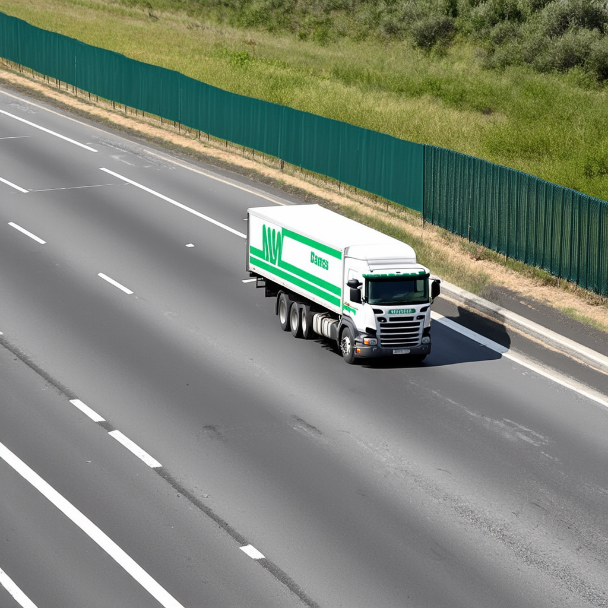 DreamSim Similarity: 0.70
Captioning model: llava-v1.6-34b-hf | Caption Image Reconstruction The image captures a moment on a highway, where a white Mercedes-Benz Actros truck is in motion. The truck, with its green and white trailer, is driving on the right side of the road, adhering to the rules of the road. The highway itself is a multi-lane one, with a green fence running along its side, perhaps serving as a barrier between the road DreamSim Similarity: 0.69
Captioning model: llava-onevision-qwen2-7b-ov-hf | Caption Image Reconstruction The image depicts a busy industrial area with a focus on a large truck driving on a multi-lane road. The truck is white with a green and blue stripe on the side and is heading towards the right side of the image. The road is marked with white lane lines and has a pedestrian crossing in the foreground. The truck is a Mercedes-Benz, as indicated by the logo DreamSim Similarity: 0.68
Captioning model: InternVL2-8B | Caption Image Reconstruction The image depicts a highway scene with a large white truck driving on the left side of the road. The truck is a Mercedes-Benz model, identifiable by its logo and design. The truck is carrying a green and white trailer, and it is moving on a multi-lane road with a green fence running parallel to it on the left side. The road appears to be well-main DreamSim Similarity: 0.67
Captioning model: InternVL2-40B | Caption Image Reconstruction The image captures a moment on a highway, where a white Mercedes-Benz Actros truck is in motion. The truck, adorned with a green stripe on its side, is driving on the right side of the road, following the direction of the traffic.
The highway itself is a three-lane road, with the truck occupying the rightmost DreamSim Similarity: 0.63
Captioning model: llava-v1.6-mistral-7b-hf | Caption Image Reconstruction a truck driving down a highway DreamSim Similarity: 0.60
Captioning model: blip2-flan-t5-xxl | Caption Image Reconstruction The image depicts a scene of a large truck driving on a multi-lane highway. The truck is a white Mercedes-Benz, specifically a Mercedes-Benz A-Class, which is a large, long-haul truck designed for transporting goods. The truck is moving on a multi-lane road, with the truck's front facing the camera. The road is divided into multiple DreamSim Similarity: 0.60
Captioning model: InternVL2-2B | Caption Image Reconstruction The image features a large white semi-truck driving down a busy highway. The truck is positioned in the middle of the road, surrounded by several other vehicles. There are multiple cars and trucks in the scene, with some of them being closer to the foreground and others further away.
In addition to the vehicles, there are two people visible in the DreamSim Similarity: 0.59
Captioning model: llava-1.5-13b-hf | Caption Image Reconstruction The image features a white semi-truck driving down a highway, surrounded by various vehicles. There are several cars and trucks in the scene, with some positioned behind the white truck and others in front of it. A few cars are also visible on the right side of the highway.
In addition to the vehicles, there are multiple traffic lights scattered throughout the DreamSim Similarity: 0.58
Captioning model: llava-1.5-7b-hf |
Caption Image Reconstruction The image features a large body of water with several boats floating on it. There is a large barge in the middle of the water, surrounded by smaller boats. One of the smaller boats is positioned closer to the left side of the scene, while another is located near the right side. A third boat can be seen further back in the water.
In the background, DreamSim Similarity: 0.61
Captioning model: llava-1.5-13b-hf | Caption Image Reconstruction The image depicts a river scene with a large industrial area in the background and a small boat in the foreground. The river appears to be a significant body of water, likely a river or a canal, with a mix of industrial and natural elements.
In the background, there is a large industrial complex with several large white storage tanks and buildings. These structures are likely used for storage DreamSim Similarity: 0.57
Captioning model: InternVL2-2B | Caption Image Reconstruction The image captures a serene scene on a river. Dominating the foreground is a large barge, painted in a shade of gray that blends harmoniously with the surrounding water. The barge, with its flat bottom and sturdy structure, is a testament to human ingenuity and engineering.
In the background, a white building stands tall, its presence adding a touch of DreamSim Similarity: 0.53
Captioning model: llava-v1.6-34b-hf | Caption Image Reconstruction The image captures a serene scene of a river, its calm waters reflecting the clear blue sky above. On the left side of the image, a large barge, painted in hues of brown and white, is seen moving towards the right. The barge is equipped with a small cabin and a sturdy mast, ready to carry goods across the river.
On the right side of the 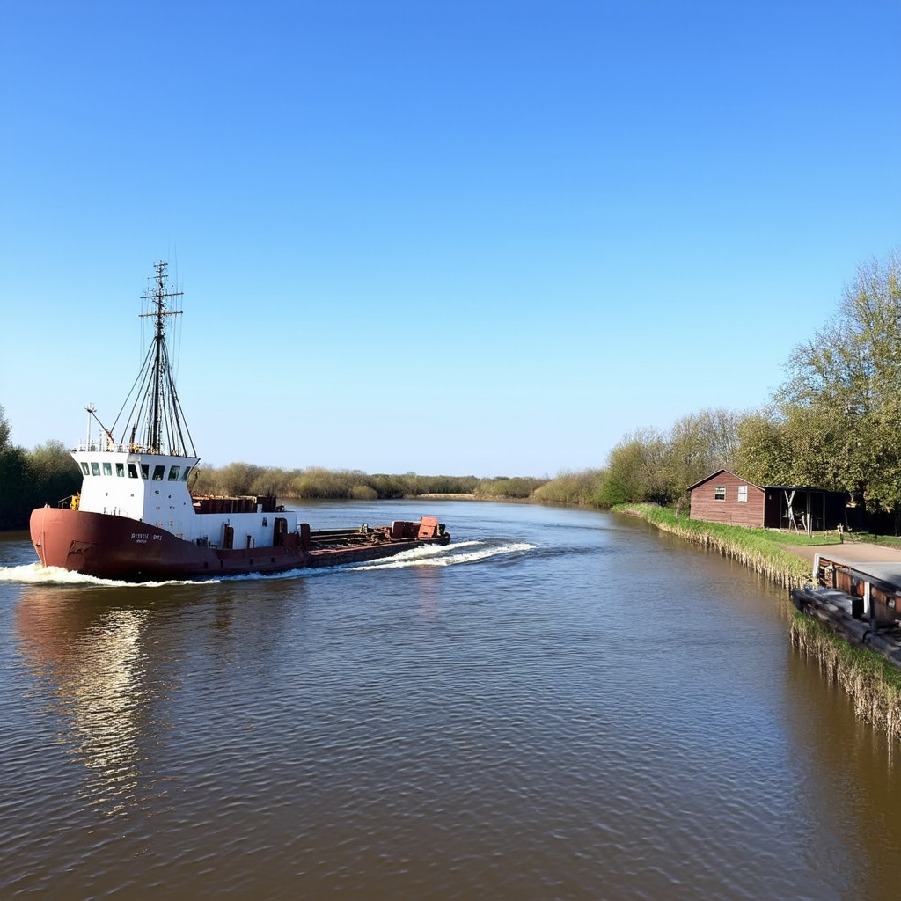 DreamSim Similarity: 0.53
Captioning model: llava-onevision-qwen2-0.5b-ov-hf | Caption Image Reconstruction The image captures a serene scene on a river, where a large cargo ship and a smaller tugboat are in motion. The cargo ship, painted in a shade of brown, is laden with a load of sand, while the tugboat, a darker hue of the same color, is equipped with a crane on its deck. They are moving towards the right side of the image, navigating DreamSim Similarity: 0.51
Captioning model: llava-onevision-qwen2-7b-ov-hf | Caption Image Reconstruction The image captures a serene scene of a river, where the calm waters are dotted with several boats. The most prominent among them is a large barge, painted in a shade of brown, which is being towed by a smaller boat. The barge is moving away from the viewer, heading towards the right side of the image.
In the distance, DreamSim Similarity: 0.50
Captioning model: llava-v1.6-mistral-7b-hf | Caption Image Reconstruction The image features a large body of water with a boat traveling through it. The boat is situated in the middle of the scene, and it appears to be a barge or a large cargo ship. There are several smaller boats scattered throughout the water, with some closer to the foreground and others further away.
In the background, there are two large oil tanks, DreamSim Similarity: 0.50
Captioning model: llava-1.5-7b-hf | Caption Image Reconstruction The image depicts a river scene with several notable elements. The river appears to be wide and calm, with a muddy brownish color, suggesting it might be a large, possibly industrial or commercial waterway. The sky is partly cloudy, with a mix of white and gray clouds scattered across a blue backdrop, indicating a partly cloudy day.
In the foreground, there DreamSim Similarity: 0.50
Captioning model: InternVL2-26B | Caption Image Reconstruction The image depicts a river scene with several notable elements. In the foreground, there are two boats on the water. The larger boat on the left appears to be a barge, which is heavily laden with what seems to be sand or gravel. The barge is moving towards the right side of the image. The smaller boat on the right is a traditional wooden vessel, possibly DreamSim Similarity: 0.49
Captioning model: InternVL2-8B | Caption Image Reconstruction DreamSim Similarity: 0.32
Captioning model: blip2-flan-t5-xxl | Caption Image Reconstruction The image depicts a river scene with several key elements. In the foreground, there is a large, flat-bottomed barge floating on the water. The barge appears to be carrying a substantial amount of sand or soil, as evidenced by the visible mounds on its deck. The barge is relatively long and narrow, with a rusted and weathered appearance, suggesting it DreamSim Similarity: 0.30
Captioning model: InternVL2-40B |
Caption Image Reconstruction The image depicts an ornate and intricately decorated interior, likely of a historic church or cathedral. The architecture is characterized by a richly adorned, multi-tiered structure with elaborate carvings and vibrant colors. The columns and arches are covered in detailed patterns and motifs, featuring a mix of gold, blue, red, and other colors. The columns are ad DreamSim Similarity: 0.72
Captioning model: InternVL2-40B | Caption Image Reconstruction The image captures the grandeur of the interior of a Gothic cathedral. The central focus is a large, ornate altar, which is the heart of the cathedral. The altar is adorned with intricate carvings and is painted in a palette of gold, blue, and red, reflecting the rich history and craftsmanship DreamSim Similarity: 0.63
Captioning model: llava-v1.6-mistral-7b-hf | Caption Image Reconstruction The image depicts the interior of a grand, ornately decorated chapel or church. The focal point of the image is a large, intricately designed altar, which is richly adorned with gold and intricate patterns. The altar is supported by tall, ornate columns that are decorated with elaborate carvings and patterns. The columns are adorned with gold and blue and DreamSim Similarity: 0.62
Captioning model: InternVL2-2B | Caption Image Reconstruction The image features a large, ornate building with a beautifully decorated ceiling. The ceiling is adorned with intricate designs and paintings, creating an impressive visual display. The building appears to be a church or a cathedral, as it has a large, decorative pillar in the center, which adds to the grandeur of the space.
DreamSim Similarity: 0.60
Captioning model: llava-1.5-13b-hf | Caption Image Reconstruction The image depicts an intricately designed interior of a church or cathedral, showcasing a richly decorated architectural structure. The focal point is a large, ornate column that stands prominently in the center, adorned with elaborate patterns and designs. The column is covered in gold and features a variety of intricate carvings and decorations, including floral motifs, geometric patterns DreamSim Similarity: 0.60
Captioning model: InternVL2-26B | Caption Image Reconstruction The image captures the grandeur of the Sistine Chapel, a renowned landmark located in the Vatican City. The perspective is from the floor, looking upwards towards the ceiling, which is adorned with Michelangelo's famous frescoes. The ceiling is a spectacle of artistry, featuring intricate designs and patterns that are a testament to the artist's skill. The walls, DreamSim Similarity: 0.60
Captioning model: llava-v1.6-34b-hf | Caption Image Reconstruction The image depicts the interior of a grand, ornately decorated Gothic cathedral, showcasing intricate architectural and artistic elements. The focal point is a large, elaborately designed altar area, characterized by its richly adorned columns and arches. The columns are adorned with gold and intricate patterns, featuring a combination of geometric and floral motifs. The arches above the columns DreamSim Similarity: 0.57
Captioning model: InternVL2-8B | Caption Image Reconstruction a church with ornate columns DreamSim Similarity: 0.52
Captioning model: blip2-flan-t5-xxl | Caption Image Reconstruction The image features a large, ornate church with a tall, colorful tower in the center. The tower is adorned with intricate paintings and decorations, making it a focal point of the church. The tower is surrounded by two smaller towers, adding to the grandeur of the structure.
Inside the church, there are several people present, DreamSim Similarity: 0.52
Captioning model: llava-1.5-7b-hf | Caption Image Reconstruction The image captures the grandeur of the Alhambra, a renowned palace in Granada, Spain. The viewer's perspective is from the ground level, looking upwards towards the ceiling, giving a sense of the immense scale and majesty of the structure. The ceiling is adorned with intricate gold and red tiles, creating a mesmerizing pattern that draws the eye upward. The walls are DreamSim Similarity: 0.51
Captioning model: llava-onevision-qwen2-0.5b-ov-hf | Caption Image Reconstruction The image captures the grandeur of the Torre de la Parada, a renowned bell tower located in the Cathedral Santiago De Compostela in Spain. The perspective of the photo is from the base of the tower, looking upwards, emphasizing its towering height and intricate design. The tower is a spectacle of ornate carvings and vibrant paintings, with gold and blue being the predominant DreamSim Similarity: 0.43
Captioning model: llava-onevision-qwen2-7b-ov-hf |
Caption Image Reconstruction The image depicts a person sitting on the ground, reading a newspaper. The individual is wearing a plaid shirt with a combination of blue, white, and red stripes, along with green pants. The person is barefoot and appears to be seated against a wall. The wall behind them is light-colored, possibly beige or off-white, and has a patterned design near the DreamSim Similarity: 0.69
Captioning model: InternVL2-26B | Caption Image Reconstruction In the image, a young man is engrossed in reading a newspaper. He is seated on the ground, leaning against a white wall that has a window. The man is dressed in a plaid shirt and green pants, and he holds the newspaper with both hands, indicating his full attention to the content. The setting appears to be outdoors, as evidenced by the presence of a DreamSim Similarity: 0.67
Captioning model: llava-onevision-qwen2-7b-ov-hf | Caption Image Reconstruction The image depicts a person sitting on the ground, reading a newspaper. The individual is wearing a plaid shirt with a combination of white, black, and red patterns and green pants. They are barefoot and appear to be engrossed in the content of the newspaper. The person is seated against a wall, which has a decorative pattern near the top. The ground is a mix  DreamSim Similarity: 0.67
Captioning model: InternVL2-40B | Caption Image Reconstruction In the image, a young man is engrossed in reading a newspaper. He is comfortably seated on a brick sidewalk, his legs crossed in a relaxed manner. His attire consists of a blue and white plaid shirt paired with green pants, adding a pop of color to the scene. The newspaper he's reading is open, revealing its contents.
The backdrop to this DreamSim Similarity: 0.66
Captioning model: llava-v1.6-34b-hf | Caption Image Reconstruction The image depicts a person sitting on the ground, leaning against a wall, engrossed in reading a newspaper. The individual is wearing a plaid shirt with a mix of red, white, and blue patterns, along with green pants. The person's face is intentionally blurred, ensuring anonymity. The newspaper is open, and the person is holding it with both hands, focusing DreamSim Similarity: 0.65
Captioning model: InternVL2-8B | Caption Image Reconstruction In the image, a man is seen sitting on the ground, engrossed in reading a newspaper. He is dressed in a plaid shirt and green pants, sitting on a brick wall. The newspaper he is reading is a mix of black and white, with a few pages open. The man is barefoot, suggesting a casual and relaxed atmosphere. The ground beneath him is covered DreamSim Similarity: 0.63
Captioning model: llava-onevision-qwen2-0.5b-ov-hf | Caption Image Reconstruction The image features a man sitting on the ground, reading a newspaper. He is wearing a plaid shirt and appears to be focused on the content of the newspaper. The man is positioned in the center of the scene, with the newspaper in his hands.
The setting appears to be an outdoor location, as there is a potted plant in the background, DreamSim Similarity: 0.63
Captioning model: llava-1.5-7b-hf | Caption Image Reconstruction The image features a man sitting on the ground, reading a newspaper. He is wearing a plaid shirt and appears to be focused on the content of the newspaper. The man is positioned in the center of the scene, with the newspaper held in his hands.
The setting appears to be an outdoor area, as there are a few rocks scattered around the man DreamSim Similarity: 0.60
Captioning model: llava-1.5-13b-hf | Caption Image Reconstruction In the image, a man is engrossed in reading a newspaper. He is seated on a brick wall, his legs stretched out in front of him. His attire consists of a plaid shirt and green pants, adding a touch of color to the scene. The newspaper he is reading is open, with the headline clearly visible.
The setting appears to be an DreamSim Similarity: 0.55
Captioning model: llava-v1.6-mistral-7b-hf | Caption Image Reconstruction The image depicts a person sitting on the ground, reading a newspaper. The individual is wearing a plaid shirt and green pants. The newspaper is open in front of them, and they are holding it with both hands, focusing intently on the content. The person's face is blurred, making it difficult to identify them. The newspaper appears to be a local newspaper, with DreamSim Similarity: 0.50
Captioning model: InternVL2-2B | Caption Image Reconstruction a man sitting on the ground reading a newspaper DreamSim Similarity: 0.45
Captioning model: blip2-flan-t5-xxl |
Caption Image Reconstruction The image is a photograph of a person who appears to be a man with white hair and a fair complexion. He is wearing a black long-sleeved shirt with a collar and a button-up front. The man is seated in a chair with a microphone in front of him, suggesting he may be participating in a broadcast or interview. The background is out of DreamSim Similarity: 0.62
Captioning model: llava-v1.6-mistral-7b-hf | Caption Image Reconstruction The image shows an older man with white hair, wearing a black long-sleeved shirt. He is seated in a black chair and appears to be holding a microphone with a blue logo, which suggests he might be participating in an interview or a discussion. The background features a dark blue wall with horizontal white lines, giving a modern and sleek appearance. There is also a book visible DreamSim Similarity: 0.62
Captioning model: InternVL2-40B | Caption Image Reconstruction The image shows an older man with white hair, seated in a black chair. He is holding a microphone in his right hand, which is positioned near his mouth, suggesting he is either speaking or preparing to speak. The microphone has a blue and white logo on it, indicating it is likely from a media outlet. The background features a blue and white striped pattern, and there is DreamSim Similarity: 0.58
Captioning model: InternVL2-2B | Caption Image Reconstruction The image is a photograph of a person sitting in a chair, holding a microphone. The individual appears to be an older adult with white hair, wearing a dark-colored shirt. The person is seated in front of a backdrop that features a series of vertical blue lights. The microphone has a blue and white design, suggesting it may be a branded model. The person's face is  DreamSim Similarity: 0.57
Captioning model: llava-v1.6-34b-hf | Caption Image Reconstruction The image depicts an individual sitting in a chair, holding a microphone. The person is wearing a black shirt and has short, white hair. The background features a blue wall with horizontal white lines, creating a modern and sleek appearance. The microphone has a blue and white color scheme, and the individual appears to be engaged in a conversation or interview. The setting suggests a formal or semi DreamSim Similarity: 0.54
Captioning model: InternVL2-8B | Caption Image Reconstruction The image captures a moment of a man engaged in a conversation. He is seated comfortably in a black leather chair, holding a microphone in his hand, suggesting he is either a speaker or an interviewer. His attire is simple yet elegant - a black shirt paired with a black tie. The background is a calming blue, adorned with white stripes that add a touch of contrast. A sign reading DreamSim Similarity: 0.50
Captioning model: llava-onevision-qwen2-7b-ov-hf | Caption Image Reconstruction The image depicts a person sitting in a chair, likely in an interview or discussion setting. The individual is wearing a black long-sleeved shirt and is holding a microphone with a blue logo on it, suggesting they are either speaking or about to speak. The background features a dark, possibly blue, backdrop with horizontal white lines, which could be part of a stage or presentation setup DreamSim Similarity: 0.48
Captioning model: InternVL2-26B | Caption Image Reconstruction The image features a man sitting in a chair, wearing a black shirt and glasses. He is holding a microphone in his hand, possibly preparing to give a speech or interview. The man appears to be the main focus of the scene.
In the background, there are two other people partially visible, one on the left side and the other on the right DreamSim Similarity: 0.48
Captioning model: llava-1.5-7b-hf | Caption Image Reconstruction The image features a man sitting in a chair, wearing a black shirt and a blue lanyard. He appears to be holding a microphone, possibly conducting an interview or participating in a discussion. The man is the main focus of the scene, and his face is partially obscured by a blurred image.
In the background, there are two DreamSim Similarity: 0.46
Captioning model: llava-1.5-13b-hf | Caption Image Reconstruction an older man sitting in a chair DreamSim Similarity: 0.36
Captioning model: blip2-flan-t5-xxl | Caption Image Reconstruction The image captures a moment in a bustling city, where the air is filled with the hum of activity. The scene unfolds in a large, modern building, bathed in the soft glow of natural light streaming in from the large windows. The building's exterior is a blend of sleek glass and concrete, reflecting the vibrant city life around it.
In the foreground, a large screen stands DreamSim Similarity: 0.20
Captioning model: llava-onevision-qwen2-0.5b-ov-hf |
Caption Image Reconstruction The image depicts a large, industrial setting, likely a warehouse or storage area, filled with a variety of metal beams and beams. The beams are stacked in a somewhat haphazard manner, with some stacked on top of each other and others leaning against each other. The beams are primarily made of steel and are in various shades of gray and green. The image is heavily pixelated, DreamSim Similarity: 0.43
Captioning model: llava-onevision-qwen2-0.5b-ov-hf | Caption Image Reconstruction The image depicts a large industrial setting, likely a warehouse or a manufacturing facility, where metal sheets are stacked in an organized manner. The metal sheets are arranged in a manner that suggests they are being stored or transported. The metal sheets are predominantly silver in color, with some having green and orange accents. The sheets are secured with straps or straps, which are likely used to keep them DreamSim Similarity: 0.41
Captioning model: InternVL2-2B | Caption Image Reconstruction The image captures a scene of a construction site, where the main focus is a large pile of metal sheets. These sheets, predominantly in shades of green and white, are stacked haphazardly, creating an interesting pattern of colors and shapes. The metal sheets are not just randomly placed; they are arranged in a way that they form a sort of roof- DreamSim Similarity: 0.41
Captioning model: llava-v1.6-mistral-7b-hf | Caption Image Reconstruction The image features a large pile of metal bars, possibly steel beams, stacked together in a factory setting. The bars are arranged in various orientations, creating a visually interesting scene.
There are two people in the scene, one standing closer to the left side of the image and the other on the right side. They appear to be observing the p DreamSim Similarity: 0.39
Captioning model: llava-1.5-7b-hf | Caption Image Reconstruction The image depicts an industrial setting, likely a warehouse or storage area for construction materials. The primary focus is on a large pile of metal profiles, which appear to be steel or aluminum sections used in construction. These profiles are arranged in a somewhat disorganized manner, with some stacked on top of each other and others lying flat. The metal profiles are painted in various colors, including DreamSim Similarity: 0.38
Captioning model: InternVL2-26B | Caption Image Reconstruction The image depicts a scene in what appears to be a construction or industrial site. The foreground is dominated by a large pile of metal beams and structural components, which are likely used for construction purposes. These metal pieces are painted in various colors, including green, orange, and white, and are stacked in an organized manner. Some of the beams have holes and markings, indicating they are pre DreamSim Similarity: 0.37
Captioning model: InternVL2-40B | Caption Image Reconstruction The image captures a scene in a warehouse, where a large stack of metal sheets is prominently displayed. The metal sheets, painted in a vibrant shade of green, are neatly arranged in rows. Each sheet is adorned with a unique design, adding a touch of creativity to the otherwise industrial setting.
The warehouse itself is spacious, with high ceilings supported by sturdy metal beams. The DreamSim Similarity: 0.36
Captioning model: llava-v1.6-34b-hf | Caption Image Reconstruction The image captures a scene from a warehouse, where a large stack of metal beams takes center stage. The beams, painted in hues of green and orange, are neatly arranged in a pyramid-like structure, with the largest ones forming the base and the smallest ones crowning the top. The warehouse itself is a vast expanse of metal and concrete, with a large crane looming in the background DreamSim Similarity: 0.36
Captioning model: llava-onevision-qwen2-7b-ov-hf | Caption Image Reconstruction The image depicts a scene in what appears to be a large industrial or manufacturing facility. The primary focus is on a stack of corrugated metal sheets, which are arranged in a somewhat haphazard manner. The metal sheets are predominantly silver in color, with some showing signs of wear and rust, indicating they have been exposed to the elements. The sheets are of various sizes and DreamSim Similarity: 0.35
Captioning model: InternVL2-8B | Caption Image Reconstruction The image features a large pile of metal, possibly steel, stacked up in a yard. The metal appears to be in the process of being cut or processed, as there are several saws present in the scene. A person can be seen standing near the pile, possibly overseeing the work or preparing to use the saws.
In the background, DreamSim Similarity: 0.33
Captioning model: llava-1.5-13b-hf | Caption Image Reconstruction a large pile of metal bars DreamSim Similarity: 0.26
Captioning model: blip2-flan-t5-xxl |
Caption Image Reconstruction The image depicts a traditional Japanese shrine pathway leading towards a main building. The pathway is paved with stone tiles and flanked by wooden pillars and banners. The banners are blue with Japanese text and illustrations, likely providing information about the shrine or upcoming events. The entrance to the shrine is marked by a large, ornate torii gate, which is painted in a vibrant orange DreamSim Similarity: 0.51
Captioning model: InternVL2-40B | Caption Image Reconstruction The image depicts a narrow alleyway in an Asian city, bustling with people walking down the street. There are several individuals scattered throughout the scene, some closer to the foreground and others further back.
A woman is walking down the alleyway, carrying a handbag. The alleyway is lined with various signs, including a couple of DreamSim Similarity: 0.49
Captioning model: llava-1.5-7b-hf | Caption Image Reconstruction The image captures the serene beauty of the Fushimi Inari-taisha shrine in Kyoto, Japan. The focal point is a stone path, flanked by vibrant orange torii gates, a traditional Japanese gate most commonly found at the entrance of or within a Shinto shrine. The path, appearing well-trodden, leads the viewer's eye towards the shrine in the distance DreamSim Similarity: 0.44
Captioning model: llava-onevision-qwen2-7b-ov-hf | Caption Image Reconstruction The image depicts a traditional Japanese shrine entrance, known as a torii gate, which is a significant architectural feature in Shinto shrines. The torii gate is painted in vibrant colors, predominantly red and green, with intricate carvings and decorations. The gate is adorned with various plaques and inscriptions, some of which are written in Japanese characters. Yellow t DreamSim Similarity: 0.41
Captioning model: InternVL2-8B | Caption Image Reconstruction The image depicts a traditional Japanese scene, likely at a Shinto shrine or temple. The pathway is paved with large, irregularly shaped stone tiles, leading towards a prominent structure in the background. The pathway is flanked by stone lanterns and wooden fences on both sides, creating a sense of order and symmetry. The stone lanterns are traditional in design 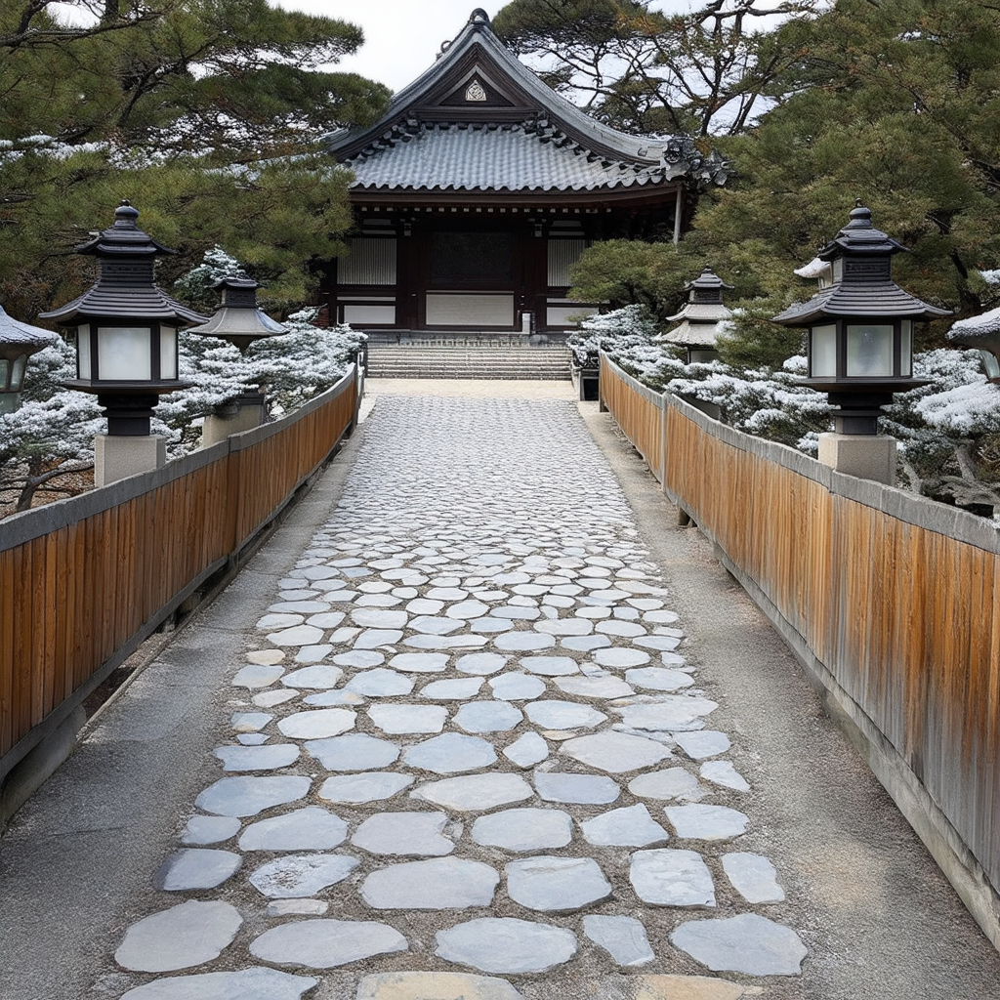 DreamSim Similarity: 0.40
Captioning model: InternVL2-26B | Caption Image Reconstruction The image captures a serene scene at a traditional Chinese temple. The temple, constructed from wood, stands majestically with its vibrant red and gold colors. The entrance to the temple is adorned with a large wooden arch, intricately carved and painted, adding to the grandeur of the structure.
A stone pathway, lined with lanterns DreamSim Similarity: 0.40
Captioning model: llava-v1.6-mistral-7b-hf | Caption Image Reconstruction The image captures a serene scene at a traditional Japanese temple. The temple entrance, painted in vibrant hues of red and orange, stands out against the backdrop of a clear blue sky. The entrance is adorned with white banners, adding a touch of elegance to the structure.
A stone path, worn by the passage of time, leads up to the entrance, inviting visitors DreamSim Similarity: 0.40
Captioning model: llava-v1.6-34b-hf | Caption Image Reconstruction The image captures a serene scene at the Kiyomizu-dera temple in Kyoto, Japan. The viewer's perspective is from a low angle, looking up towards the entrance of the temple. The entrance is adorned with a vibrant red and orange wooden structure, adorned with a large circular emblem and a blue sign that reads "Kiyomizu-dera". The entrance is flanked DreamSim Similarity: 0.39
Captioning model: llava-onevision-qwen2-0.5b-ov-hf | Caption Image Reconstruction The image depicts a traditional Japanese shrine entrance, likely a Shinto shrine, characterized by its ornate and intricate architecture. The entrance is framed by a large, intricately designed wooden torii gate, which is a traditional Japanese gate used in Shinto shrines. The torii gate is painted in bright red and adorned with various symbols and designs, including a DreamSim Similarity: 0.36
Captioning model: InternVL2-2B | Caption Image Reconstruction The image depicts a group of people walking down a narrow, cobblestone pathway. The pathway is lined with various signs and banners, creating a unique atmosphere. There are at least 13 people visible in the scene, with some walking closer to the camera and others further down the path.
Among the people, a few are DreamSim Similarity: 0.36
Captioning model: llava-1.5-13b-hf | Caption Image Reconstruction a person walking through an archway DreamSim Similarity: 0.36
Captioning model: blip2-flan-t5-xxl |
Caption Image Reconstruction The image captures a serene marina scene. Dominating the foreground is a large white yacht, its blue awning providing a striking contrast. The yacht is docked at a wooden pier, securely moored with sturdy ropes.
In the background, a multitude of smaller boats are anchored, their masts reaching towards DreamSim Similarity: 0.58
Captioning model: llava-v1.6-mistral-7b-hf | Caption Image Reconstruction The image captures a serene marina scene, dominated by a large white yacht with blue accents. The yacht, boasting a blue canopy and a white radar dome, is docked alongside a wooden pier. The pier, equipped with a white gangway, extends into the calm, greenish-blue water.
The marina is bustling with activity, housing several other boats and yachts.  DreamSim Similarity: 0.58
Captioning model: llava-onevision-qwen2-7b-ov-hf | Caption Image Reconstruction The image depicts a marina scene with several boats docked in a calm, scenic harbor. The foreground features the bow of a white sailboat with various ropes and rigging visible, indicating it is equipped for sailing. The sailboat has a blue sail cover and a white deck. The mast of the sailboat is tall and slender, with several lines and cables running along it DreamSim Similarity: 0.57
Captioning model: InternVL2-40B | Caption Image Reconstruction The image depicts a serene marina scene with several boats docked at a pier. The foreground prominently features a large, white yacht with a blue trim. The yacht has a sleek design, with a streamlined hull and a blue canopy covering part of the deck. The name "AZIMUT" is visible on the side of the yacht, indicating DreamSim Similarity: 0.57
Captioning model: InternVL2-26B | Caption Image Reconstruction The image captures a serene marina scene. Dominating the foreground is a white yacht, its blue canopy providing a striking contrast. The yacht is docked at a wooden pier, which extends into the calm waters of the marina.
In the background, several other boats are visible, their white and blue hues blending harmoniously with the surroundings. The marina DreamSim Similarity: 0.56
Captioning model: llava-v1.6-34b-hf | Caption Image Reconstruction The image depicts a marina filled with various yachts and boats docked in a calm, serene setting. The foreground prominently features a large white yacht with a blue stripe running along its side. The yacht has a sleek design with a modern look, featuring a blue bimini top and a white hull. The name "AZIMUT" is visible DreamSim Similarity: 0.56
Captioning model: InternVL2-8B | Caption Image Reconstruction The image features a marina with several boats docked in the water. There are at least five boats visible in the scene, with one large white boat prominently occupying the foreground. The other boats are of varying sizes and are docked in the background.
The marina is situated near a forest, providing a serene and picturesque setting for the boats DreamSim Similarity: 0.55
Captioning model: llava-1.5-13b-hf | Caption Image Reconstruction The image captures a serene scene at a bustling harbor. The main focus is a large, white yacht named "AIDA" that is docked at the harbor. The yacht is adorned with a blue and white striped awning, adding a touch of elegance to its appearance. The hull of the yacht is white, contrasting beautifully with the deep blue water of the harbor. The yacht is DreamSim Similarity: 0.54
Captioning model: llava-onevision-qwen2-0.5b-ov-hf | Caption Image Reconstruction The image features a marina with several boats docked in the water. There are at least five boats visible, with one large white yacht taking up a significant portion of the scene. The other boats are of various sizes and are docked in the marina.
In addition to the boats, there are two people in the scene. One person is located near the center 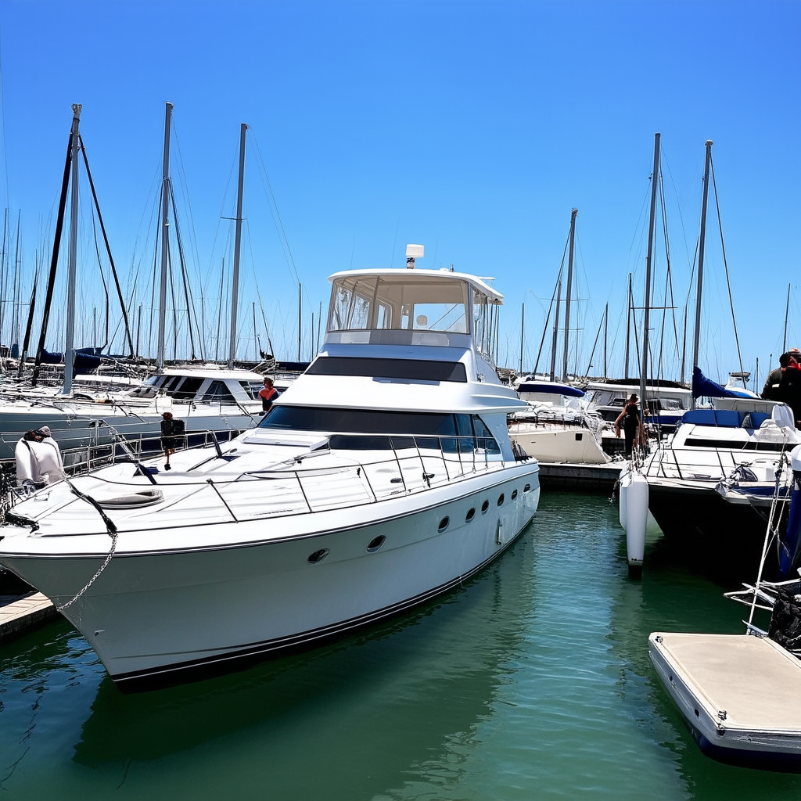 DreamSim Similarity: 0.54
Captioning model: llava-1.5-7b-hf | Caption Image Reconstruction The image depicts a marina scene with several boats docked in the water. The focus is on a large white yacht with a blue stripe running along its side. The yacht has a sleek design with a modern, streamlined appearance. The hull of the yacht is white, and it features a blue stripe running horizontally along its side. The bow of the yacht 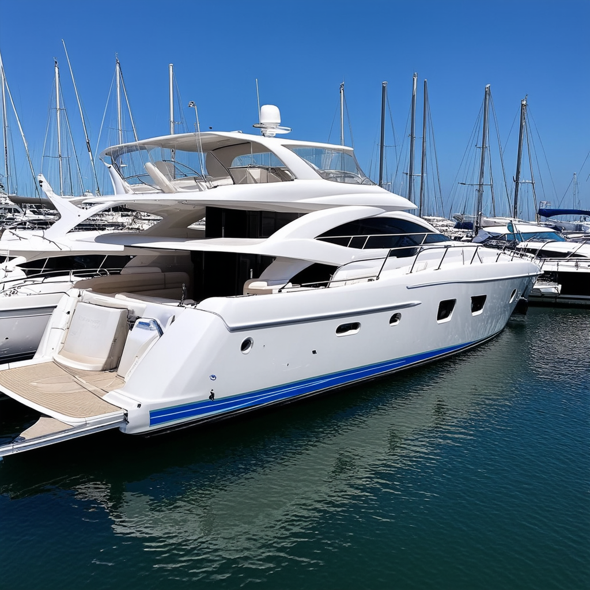 DreamSim Similarity: 0.54
Captioning model: InternVL2-2B | Caption Image Reconstruction a boat docked in a harbor DreamSim Similarity: 0.49
Captioning model: blip2-flan-t5-xxl |
Caption Image Reconstruction The image depicts a large, golden statue of a Buddha against a clear blue sky. The statue is intricately detailed, with flowing robes that drape gracefully over the figure. The Buddha is depicted in a standing position, with one hand raised in a gesture that is often associated with teaching or blessing. The other hand is extended outward, palm up, in a gesture of offering DreamSim Similarity: 0.70
Captioning model: InternVL2-40B | Caption Image Reconstruction The image depicts a large, golden statue of a Buddha standing against a clear blue sky. The statue is positioned upright, with its right hand raised in a gesture known as the Abhaya Mudra, which symbolizes fearlessness and protection. The left hand is held downwards, palm facing outward, in a gesture known as the Varada Mudra, symbolizing DreamSim Similarity: 0.69
Captioning model: InternVL2-26B | Caption Image Reconstruction DreamSim Similarity: 0.68
Captioning model: blip2-flan-t5-xxl | Caption Image Reconstruction The image captures the majestic Golden Buddha statue of the Buddha, a symbol of spiritual enlightenment and peace, standing tall and radiant in the center of the frame. The statue is a magnificent representation of the Buddha, adorned in a golden robe that gleams under the sunlight. The Buddha's hands are raised in a gesture of blessing, embodying the essence of peace and compassion. The statue is DreamSim Similarity: 0.68
Captioning model: llava-onevision-qwen2-0.5b-ov-hf | Caption Image Reconstruction The image features a large golden statue of a person, possibly a Buddha, with a face that is blurred or obscured. The statue is positioned in the center of the scene, and its size and prominence make it the focal point of the image. The statue is situated in front of a blue sky, which adds a sense of depth and contrast DreamSim Similarity: 0.67
Captioning model: llava-1.5-7b-hf | Caption Image Reconstruction The image captures the majestic Buddha Dharma World statue, a prominent landmark located in Taipei, Taiwan. The statue, a towering figure of a seated Buddha, is crafted from gold and stands on a rock-like pedestal. The Buddha is depicted in a meditative pose, with its right hand raised in a gesture of blessing and its left hand resting on its lap. The statue is set against DreamSim Similarity: 0.66
Captioning model: llava-onevision-qwen2-7b-ov-hf | Caption Image Reconstruction The image depicts a large, golden statue of a seated figure, likely a representation of a deity or a significant cultural or religious figure. The statue is highly polished and gleams under the sunlight, giving it a striking golden appearance. The figure is seated in a meditative pose, with one hand raised in a gesture of blessing or teaching, while the other hand rests on the DreamSim Similarity: 0.66
Captioning model: InternVL2-8B | Caption Image Reconstruction The image features a large, golden statue of a figure that appears to be a representation of a deity or a spiritual being, possibly from a Buddhist or Hindu tradition, given the style of the statue. The figure is seated with one hand raised in a gesture that could be interpreted as a blessing or a teaching pose. The statue is adorned with intricate details, such as the folds DreamSim Similarity: 0.63
Captioning model: llava-v1.6-34b-hf | Caption Image Reconstruction The image depicts a golden statue of a Buddha, which is a representation of the Buddha in a meditative pose. The statue is highly detailed and intricately crafted, showcasing a serene and peaceful expression. The figure is adorned in traditional Buddhist robes, with a draped robe that flows gracefully around the body, emphasizing the grace and tranquility of  DreamSim Similarity: 0.62
Captioning model: InternVL2-2B | Caption Image Reconstruction The image features a large golden statue of a person with their hands raised, possibly in a gesture of peace or greeting. The statue is prominently displayed in the foreground, with a blue sky in the background. The statue's hands are positioned in a way that resembles a peace sign, adding a sense of serenity to the scene. DreamSim Similarity: 0.61
Captioning model: llava-1.5-13b-hf | Caption Image Reconstruction The image captures the majestic Great Buddha of Kamakura, a renowned bronze statue located in Japan. The Buddha, a symbol of peace and tranquility, is depicted in a seated position, with one hand raised in a gesture of blessing. The statue is adorned with a halo, a traditional representation of holiness and divinity. The Budd DreamSim Similarity: 0.44
Captioning model: llava-v1.6-mistral-7b-hf |
Caption Image Reconstruction The image features a picturesque scene with a wooden fence and a small building situated on a lush green hillside. The building appears to be a small hut or a gazebo, surrounded by a beautiful landscape. The hillside is adorned with a variety of trees, some of which are changing colors, indicating the season.
There are several people scattered DreamSim Similarity: 0.54
Captioning model: llava-1.5-13b-hf | Caption Image Reconstruction The image depicts a serene and picturesque landscape, likely taken during the autumn season. The scene is dominated by a lush, green grassy hillside that slopes gently downwards, leading the eye towards a wooden gazebo situated in the foreground. The gazebo is constructed with a hexagonal design and features a dark, tiled roof. It is surrounded by a wooden rail DreamSim Similarity: 0.47
Captioning model: InternVL2-26B | Caption Image Reconstruction The image captures a serene landscape, dominated by a wooden gazebo nestled in the foreground. The gazebo, with its thatched roof, stands out against the backdrop of a lush green hill. The hill is dotted with trees, their leaves a vibrant mix of orange and green, hinting at the onset of autumn.
A wooden fence, weathered by time, 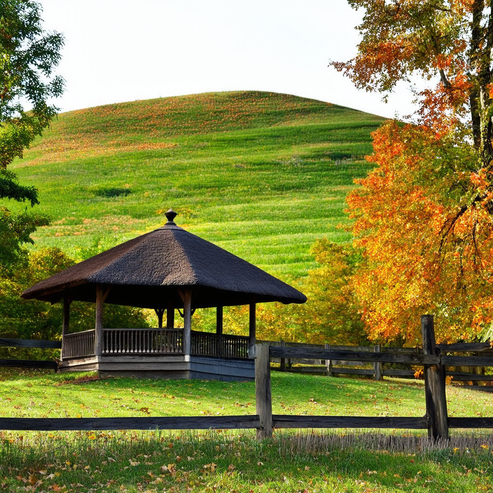 DreamSim Similarity: 0.45
Captioning model: llava-v1.6-34b-hf | Caption Image Reconstruction The image captures a serene scene of a mountainous landscape. Dominating the foreground is a wooden gazebo, its red roof contrasting with the surrounding greenery. The gazebo is nestled on a grassy hill, offering a panoramic view of the valley below.
The valley itself is a vibrant display of nature's pal DreamSim Similarity: 0.44
Captioning model: llava-v1.6-mistral-7b-hf | Caption Image Reconstruction The image depicts a serene and picturesque landscape featuring a wooden boardwalk that meanders through a grassy hillside. The boardwalk is bordered by a wooden fence and leads to a small gazebo-like structure with a pointed roof, which appears to be a resting or observation point. The gazebo is situated on a slightly elevated area, providing a vantage point DreamSim Similarity: 0.43
Captioning model: InternVL2-40B | Caption Image Reconstruction The image captures a serene and tranquil scene of a wooden pavilion nestled in a lush, grassy hillside. The pavilion, constructed from dark brown wooden planks, stands majestically on a grassy hill, its red roof contrasting beautifully with the surrounding greenery. The pavilion is surrounded by a wooden fence, providing a sense of security and privacy. A small pond DreamSim Similarity: 0.37
Captioning model: llava-onevision-qwen2-0.5b-ov-hf | Caption Image Reconstruction The image features a picturesque scene of a small wooden building situated on a hillside, surrounded by a lush green field. The building appears to be a small hut or a shelter, possibly for hikers or visitors to the area.
There are several people scattered throughout the scene, likely enjoying the beautiful surroundings or taking a break from their activities. DreamSim Similarity: 0.36
Captioning model: llava-1.5-7b-hf | Caption Image Reconstruction The image depicts a serene and picturesque landscape featuring a small wooden pavilion situated on a grassy hillside. The pavilion is constructed with a traditional design, characterized by a gabled roof and a wooden structure with a thatched roof. It is situated on a raised platform, surrounded by a wooden fence that runs parallel to the hillside. The pavilion is surrounded DreamSim Similarity: 0.35
Captioning model: InternVL2-2B | Caption Image Reconstruction The image captures a serene scene at the Taichung Park in Taiwan. The focal point is a wooden viewing platform, its red roof contrasting with the surrounding greenery. The platform is nestled on a hill, offering a panoramic view of the landscape below. A fence encircles the platform, providing a sense of safety and boundary.
The hill is adorned with trees, their leaves a DreamSim Similarity: 0.35
Captioning model: llava-onevision-qwen2-7b-ov-hf | Caption Image Reconstruction The image depicts a serene and picturesque landscape, likely captured in an autumnal setting. The foreground features a grassy area with a wooden structure that resembles a traditional pavilion or gazebo. The pavilion has a conical roof with a dark, possibly tiled surface, and is supported by wooden pillars. The structure is situated on a gently sloping hill, DreamSim Similarity: 0.34
Captioning model: InternVL2-8B | Caption Image Reconstruction a wooden gazebo on a hill DreamSim Similarity: 0.31
Captioning model: blip2-flan-t5-xxl |
Caption Image Reconstruction The image depicts a scene outside a building, likely a medical facility, given the presence of a person wearing a blue medical gown and a face mask. The setting appears to be a busy area, possibly a hospital or clinic entrance, as indicated by the people wearing face masks and the general atmosphere.
In the foreground, a person in a blue medical gown is seated at DreamSim Similarity: 0.62
Captioning model: InternVL2-8B | Caption Image Reconstruction The image depicts a group of people gathered outside a building, possibly a hospital or a medical facility. They are wearing face masks, indicating that they are taking precautions against the spread of germs or illnesses. Among the crowd, there are several individuals carrying backpacks and handbags, suggesting that they might be patients or visitors.
 DreamSim Similarity: 0.59
Captioning model: llava-1.5-13b-hf | Caption Image Reconstruction The image captures a bustling scene at a vaccination site in a public area. The scene is dominated by a group of people, all donned in protective gear, standing in a line, waiting for their turn to receive their vaccinations. The person in the center of the image, wearing a blue jacket, is holding a blue bottle of hand sanitizer, ready to be administered. The background is DreamSim Similarity: 0.57
Captioning model: llava-onevision-qwen2-0.5b-ov-hf | Caption Image Reconstruction The image depicts a scene at what appears to be a medical or testing facility, likely related to COVID-19 testing or vaccination. The setting is indoors, with a large number of people gathered, some of whom are wearing face masks.
In the foreground, a person in a blue protective suit and face mask is seated at a table, possibly a healthcare worker or staff DreamSim Similarity: 0.57
Captioning model: InternVL2-40B | Caption Image Reconstruction The image depicts a group of people gathered outside a building, possibly a hospital. Among the crowd, a man wearing a blue jacket is standing out, as he is wearing a mask. The people in the scene are engaged in various activities, with some standing close to each other and others maintaining a bit of distance.
There are several backpacks DreamSim Similarity: 0.53
Captioning model: llava-1.5-7b-hf | Caption Image Reconstruction The image depicts a scene inside a public place, likely a hospital or clinic, with several individuals engaged in various activities. The foreground shows a person wearing a blue medical mask and a blue jacket, standing and facing away from the camera. This person is holding a bottle of hand sanitizer and appears to be interacting with another individual who is partially visible in the background. The person in DreamSim Similarity: 0.53
Captioning model: InternVL2-2B | Caption Image Reconstruction The image depicts a scene at what appears to be a public facility, likely a vaccination or health center, given the presence of medical personnel and the general setup. The setting is indoors, with a group of people gathered in a queue, waiting to enter the building. The individuals in the queue are wearing various types of clothing, including jackets, sweaters, and headscarves, DreamSim Similarity: 0.52
Captioning model: InternVL2-26B | Caption Image Reconstruction a hospital with people waiting for treatment DreamSim Similarity: 0.50
Captioning model: blip2-flan-t5-xxl | Caption Image Reconstruction The image captures a moment in a public space, possibly a hospital or a medical facility, as suggested by the presence of medical personnel and the context of the scene. The central figure is a man dressed in a blue jacket and a red backpack, standing in front of a large window that reflects the interior of the building. He is wearing a surgical mask, indicating a concern for DreamSim Similarity: 0.50
Captioning model: llava-v1.6-mistral-7b-hf | Caption Image Reconstruction The image captures a scene at a health checkpoint. A man, clad in a blue jacket and a face mask, stands in front of a table draped with a blue tablecloth. On the table, a green bottle of hand sanitizer and a white paper bag are placed. The man is engaged in the act of sanitizing his hands, a common practice in such settings.
In the background DreamSim Similarity: 0.43
Captioning model: llava-onevision-qwen2-7b-ov-hf | Caption Image Reconstruction The image captures a moment in a bustling city, where life goes on amidst the pandemic. The scene unfolds in a public space, possibly a park or a plaza, characterized by a large white building with a green roof. The building, adorned with a sign that reads "Casa de la Cultura", stands as a beacon of cultural significance in the city 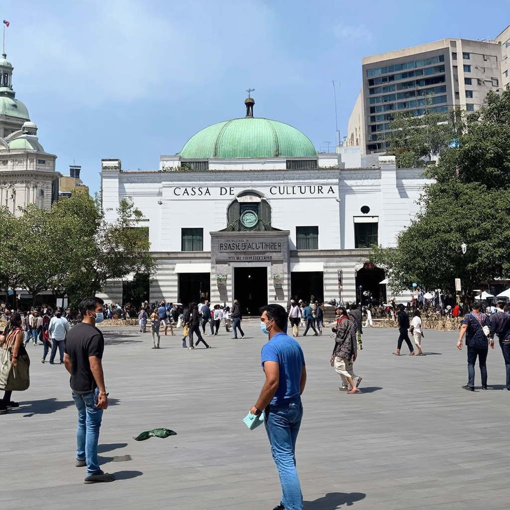 DreamSim Similarity: 0.32
Captioning model: llava-v1.6-34b-hf |
Caption Image Reconstruction The image captures a serene winter scene. Dominating the foreground is a quaint wooden cabin, its roof blanketed in a layer of pristine white snow. The cabin's rustic charm is accentuated by a string of vibrant red lanterns that hang from a wooden pole on the left side of the structure.
The cabin is nestled amidst a breathtaking landscape. DreamSim Similarity: 0.68
Captioning model: llava-v1.6-34b-hf | Caption Image Reconstruction The image depicts a quaint, rustic cabin nestled in a snowy, mountainous landscape. The cabin is constructed from wooden logs, giving it a traditional and cozy appearance. The roof is covered with a thick layer of snow, indicating a recent snowfall. The cabin is adorned with several red lanterns hanging from the eaves, adding a festive and warm touch DreamSim Similarity: 0.66
Captioning model: InternVL2-8B | Caption Image Reconstruction The image depicts a cozy, rustic wooden cabin nestled in a snowy landscape, likely in a mountainous region. The cabin is covered with a thick layer of snow on its roof and surrounding ground, indicating a cold, wintery environment. The structure is made of wooden logs, giving it a warm and inviting appearance despite the chilly surroundings.
The cabin features several red lan DreamSim Similarity: 0.64
Captioning model: InternVL2-40B | Caption Image Reconstruction The image features a small wooden building with a snow-covered roof, surrounded by a beautiful mountain landscape. The building has a distinctive red and yellow color scheme, with red lanterns hanging from its sides. The snow-covered roof and the presence of the lanterns give the building a charming and cozy appearance.
In the foreground, DreamSim Similarity: 0.63
Captioning model: llava-1.5-13b-hf | Caption Image Reconstruction The image captures a serene winter scene in a mountainous area. Dominating the foreground is a wooden cabin, its sloping roof blanketed with a layer of fresh snow. The cabin's rustic charm is accentuated by the red lanterns hanging from the eaves, their vibrant color contrasting beautifully with the surrounding white and brown hues.
The cabin is nestled amidst a landscape of snow-covered  DreamSim Similarity: 0.63
Captioning model: llava-onevision-qwen2-7b-ov-hf | Caption Image Reconstruction The image features a small wooden cabin with a snow-covered roof, located in a mountainous area. The cabin is adorned with red lanterns, adding a touch of color to the otherwise white and snowy surroundings. The cabin is surrounded by a snow-covered landscape, with trees visible in the background.
In addition to the cabin, DreamSim Similarity: 0.62
Captioning model: llava-1.5-7b-hf | Caption Image Reconstruction The image depicts a serene winter scene featuring a small wooden cabin nestled in a snowy landscape. The cabin is constructed with a rustic wooden exterior, characterized by its log walls and a sloped roof covered with a thick layer of snow, indicating recent heavy snowfall. The roof's eaves are also laden with snow, suggesting a cold and wintry environment. The DreamSim Similarity: 0.55
Captioning model: InternVL2-26B | Caption Image Reconstruction The image captures a serene winter scene. Dominating the frame is a quaint wooden cabin, its rustic charm accentuated by a snow-covered roof. The cabin's red door stands out against the white snow, inviting one to step inside.
Two red lanterns hang from the roof, their warm glow contrasting with the cool blue of DreamSim Similarity: 0.54
Captioning model: llava-v1.6-mistral-7b-hf | Caption Image Reconstruction The image captures a serene winter scene in a snowy forest. The main focus is a quaint wooden cabin, its rustic charm accentuated by a red lantern hanging from the roof. The lantern, a symbol of Chinese culture, adds a touch of warmth to the otherwise chilly landscape. The cabin is nestled amidst a blanket of snow, with a wooden fence standing guard in the foreground. The cabin DreamSim Similarity: 0.52
Captioning model: llava-onevision-qwen2-0.5b-ov-hf | Caption Image Reconstruction The image depicts a picturesque winter scene featuring a cozy, rustic cabin nestled in a snowy landscape. The cabin is made of wood and is surrounded by a snow-covered ground, with a thick layer of snow covering the ground and the roof. The cabin has a sloped roof, and the roof is covered with snow, indicating recent snowfall. The cabin is adorn DreamSim Similarity: 0.49
Captioning model: InternVL2-2B | Caption Image Reconstruction a small cabin in the snow DreamSim Similarity: 0.47
Captioning model: blip2-flan-t5-xxl |
Caption Image Reconstruction The image depicts the entrance to a Burger King restaurant located in what appears to be a busy indoor area, possibly a mall or transit station. The Burger King sign is prominently displayed in bright orange letters above the entrance, with the Burger King logo to the left of the sign. The restaurant has a modern, sleek design with a black facade and large glass windows that allow a view into DreamSim Similarity: 0.71
Captioning model: InternVL2-40B | Caption Image Reconstruction The image depicts a busy indoor setting, likely a food court or a public area within a mall or transportation hub. The focal point of the image is a Burger King restaurant, which is prominently displayed with its iconic orange and yellow logo. The restaurant is situated in a corner, with a large, illuminated sign above the entrance that reads "BURGER KING" in DreamSim Similarity: 0.69
Captioning model: InternVL2-26B | Caption Image Reconstruction The image depicts a bustling scene at a food court or food court within a large indoor setting, likely a shopping mall or airport terminal. The focal point of the image is a large, illuminated sign for "BURGER KING," a well-known fast-food chain. The sign is prominently displayed above the entrance of the restaurant, with the restaurant's name in DreamSim Similarity: 0.69
Captioning model: InternVL2-2B | Caption Image Reconstruction The image depicts a bustling scene inside a shopping mall, specifically in front of a Burger King restaurant. The restaurant is prominently displayed with its bright orange signage, which stands out against the dark background. The entrance to Burger King is open, and several people are visible, some standing in line and others walking by. The floor is tiled with a pattern of light and DreamSim Similarity: 0.64
Captioning model: InternVL2-8B | Caption Image Reconstruction The image captures a bustling scene at a Burger King restaurant. The restaurant is characterized by a black and white striped awning, under which a large sign in vibrant orange and red proclaims "Burger King". The sign is illuminated, drawing attention to the restaurant amidst the hustle and bustle of the city.
DreamSim Similarity: 0.63
Captioning model: llava-v1.6-mistral-7b-hf | Caption Image Reconstruction The image captures a bustling scene at a Burger King restaurant. The restaurant is bustling with activity, with several people walking by, some carrying bags and backpacks, suggesting they are in the midst of their daily routines. The restaurant is adorned with a large sign that reads "OPPO", "OPPO", "Burger King", and "Burger King", indicating the brand of the DreamSim Similarity: 0.62
Captioning model: llava-onevision-qwen2-0.5b-ov-hf | Caption Image Reconstruction The image captures a bustling scene at a Burger King restaurant located in a shopping mall. The restaurant's entrance is marked by a large sign that proudly displays the Burger King logo. The interior of the restaurant is visible through the glass doors, revealing a lively atmosphere with several customers seated and enjoying their meals.
In front of the restaurant, a group of people can be seen DreamSim Similarity: 0.61
Captioning model: llava-v1.6-34b-hf | Caption Image Reconstruction The image depicts a busy Burger King restaurant with a large group of people gathered inside. There are at least 13 people visible in the scene, some of them standing in line to order food, while others are engaged in conversation or browsing the menu.
The restaurant is filled with various items, including a dining table near the center of the scene, DreamSim Similarity: 0.57
Captioning model: llava-1.5-13b-hf | Caption Image Reconstruction The image captures a bustling scene at an airport terminal, dominated by the presence of a Burger King restaurant. The restaurant's sign, a vibrant mix of orange and red, proudly displays the Burger King logo, serving as a beacon for travelers seeking a quick meal.
The restaurant is situated on the right side of the image, its large windows offering a glimpse into the flurry of activity inside DreamSim Similarity: 0.57
Captioning model: llava-onevision-qwen2-7b-ov-hf | Caption Image Reconstruction The image depicts a busy restaurant with a large group of people walking around and standing in the lobby. There are at least 13 people visible in the scene, some of them carrying handbags. The restaurant appears to be a Burger King, as indicated by the presence of a Burger King sign.
The people are scattered throughout the restaurant, DreamSim Similarity: 0.56
Captioning model: llava-1.5-7b-hf | Caption Image Reconstruction a burger king restaurant in an airport DreamSim Similarity: 0.50
Captioning model: blip2-flan-t5-xxl |
Caption Image Reconstruction In the tranquil setting of a park, a wooden table and two chairs invite passersby to rest. The table, accompanied by two chairs, is sheltered by a large white umbrella, providing a cool respite from the sun. The umbrella, with its sturdy wooden pole, stands tall, casting a cool shade over the table and chairs.
The table and chairs are situated on a DreamSim Similarity: 0.65
Captioning model: llava-onevision-qwen2-7b-ov-hf | Caption Image Reconstruction The image captures a serene outdoor setting. At the center of the scene is a **white umbrella** with a **wooden pole**, providing shade over a **wooden table** and two **wooden chairs**. The table and chairs are positioned on a **stone patio**, which is surrounded by a **stone wall**.
The patio is situated on DreamSim Similarity: 0.65
Captioning model: llava-v1.6-mistral-7b-hf | Caption Image Reconstruction The image captures a serene outdoor setting. At the center of the frame is a wooden table, accompanied by two matching chairs. The table and chairs are positioned on a stone patio, which is adjacent to a tranquil river. The river, reflecting the clear blue sky, adds a sense of calm to the scene.
Above the table, a large white umbrella provides shade DreamSim Similarity: 0.59
Captioning model: llava-v1.6-34b-hf | Caption Image Reconstruction The image depicts a serene outdoor setting with a small wooden table and two matching chairs placed on a stone-paved area. The table and chairs are made of dark wood and have a rustic, foldable design. A large, white umbrella with a wooden pole is open above the table, providing shade. The umbrella appears to be slightly worn, with some discoloration and minor DreamSim Similarity: 0.58
Captioning model: InternVL2-40B | Caption Image Reconstruction The image depicts a serene outdoor scene featuring a wooden picnic table and chairs set up on a cobblestone path by a river. The table and chairs are made of dark wood, with a white umbrella providing shade. The umbrella is supported by a metal pole and has a white fabric canopy. The table and chairs are positioned on a stone path, surrounded by lush greenery DreamSim Similarity: 0.55
Captioning model: InternVL2-2B | Caption Image Reconstruction The image depicts an outdoor setting featuring a small, quaint riverside caf or dining area. The focal point is a simple, rustic table and chairs made of wood, with a white canopy providing shade. The table and chairs are made of dark wood, and the chairs have a slightly weathered appearance, suggesting they have been used for some time. The table is rectangular DreamSim Similarity: 0.53
Captioning model: InternVL2-8B | Caption Image Reconstruction The image features a beautiful outdoor setting with a wooden dining table surrounded by several chairs. The table is positioned near a river, providing a serene and picturesque view for those seated. There are two umbrellas providing shade over the table, one on the left side and the other on the right side.
In addition to the main d DreamSim Similarity: 0.48
Captioning model: llava-1.5-13b-hf | Caption Image Reconstruction a table and chairs with an umbrella DreamSim Similarity: 0.46
Captioning model: blip2-flan-t5-xxl | Caption Image Reconstruction The image depicts a serene outdoor setting, likely a riverside caf or a park area, characterized by a rustic and natural ambiance. The focal point of the image is a wooden picnic table and two matching wooden chairs, which are positioned on a cobblestone patio. The table and chairs are made of a reddish-brown wood, giving them a warm, DreamSim Similarity: 0.45
Captioning model: InternVL2-26B | Caption Image Reconstruction The image captures a serene scene of a tranquil riverside setting. The main focus is a wooden table and chairs, crafted from dark wood, situated on a stone patio. The table, with its sturdy brown color, is accompanied by two matching chairs, both made of the same dark wood. The table is positioned on the left side of the image, while the chairs are on the right 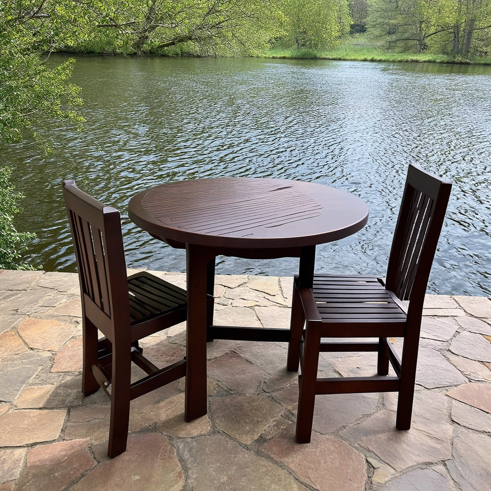 DreamSim Similarity: 0.39
Captioning model: llava-onevision-qwen2-0.5b-ov-hf | Caption Image Reconstruction The image features a beautiful outdoor dining area with a wooden table and chairs set up near a river. The table is surrounded by several chairs, with some placed closer to the table and others further away. The chairs are arranged in various positions, creating a comfortable and inviting atmosphere for guests.
In the background, there are a few cars parked, DreamSim Similarity: 0.38
Captioning model: llava-1.5-7b-hf |
Caption Image Reconstruction The image depicts a rural scene with a dirt road winding through a hilly landscape. The road is flanked by dry, brownish vegetation and rocky terrain. The sky is partly cloudy with patches of blue sky visible. On the right side of the road, there is a person wearing a striped shirt and a headscarf, carrying an orange object in their hand. DreamSim Similarity: 0.53
Captioning model: InternVL2-2B | Caption Image Reconstruction In the image, a person is seen walking on a dirt path that meanders through a landscape of dry grass and shrubs. The path, which is the main focus of the image, is flanked by a rock wall on the right and a grassy area on the left. The person is dressed in a pink shirt and blue pants, and they are carrying a large DreamSim Similarity: 0.46
Captioning model: llava-v1.6-mistral-7b-hf | Caption Image Reconstruction In the image, a woman is seen embarking on a journey along a dirt road that cuts through a rural landscape. She is dressed in a blue shirt and a white headscarf, carrying a large orange bag on her back. The road she treads on is lined with rocks on one side, while a stone wall stands guard on the other.
The landscape around her is DreamSim Similarity: 0.46
Captioning model: llava-onevision-qwen2-7b-ov-hf | Caption Image Reconstruction a person walking down a dirt road DreamSim Similarity: 0.45
Captioning model: blip2-flan-t5-xxl | Caption Image Reconstruction The image depicts a serene rural landscape with a dirt path winding through a hilly terrain. The path is unpaved and appears to be made of compacted earth, meandering through the scene and leading towards the horizon. The path is flanked on both sides by natural vegetation, including bushes, small trees, and grassy areas. The vegetation is sparse, with some DreamSim Similarity: 0.44
Captioning model: InternVL2-26B | Caption Image Reconstruction The image depicts a rural landscape with a person walking along a dirt path. The path is narrow and winds through a hilly terrain, bordered by dry, brownish grass and sparse vegetation. The person, who appears to be a woman, is walking away from the camera, carrying a large orange container on her head. She is dressed in traditional attire, including a strip DreamSim Similarity: 0.43
Captioning model: InternVL2-8B | Caption Image Reconstruction In the image, a solitary figure is seen walking on a dirt path that cuts through a landscape of rolling hills and verdant trees. The person, clad in a vibrant red jacket and a blue hat, is carrying a large orange bag on their back. They are moving away from the camera, their figure gradually becoming smaller as they traverse the path.
The path itself DreamSim Similarity: 0.43
Captioning model: llava-v1.6-34b-hf | Caption Image Reconstruction The image captures a serene scene of a person walking along a dirt road in a rural area. The individual is wearing a blue shirt and a blue headscarf, and is carrying a basket on their head. The road they are walking on is surrounded by a lush green field, with a large rock formation on the left side. The sky above is a clear blue, and the sun DreamSim Similarity: 0.42
Captioning model: llava-onevision-qwen2-0.5b-ov-hf | Caption Image Reconstruction The image depicts a rural scene with a dirt path leading through a countryside landscape. The path is surrounded by grassy fields and patches of shrubbery. On the left side of the path, there is a small stream or drainage ditch lined with rocks. A person, dressed in traditional attire, is walking along the path. The individual is wearing a blue headscarf, a stri DreamSim Similarity: 0.41
Captioning model: InternVL2-40B | Caption Image Reconstruction The image features a woman walking down a dirt road, carrying a large orange bag. She is wearing a blue hat and appears to be walking towards a stone wall. The woman is the main subject of the scene, and the dirt road stretches out in front of her.
In the background, there are several trees lining the road, creating a natural DreamSim Similarity: 0.41
Captioning model: llava-1.5-13b-hf | Caption Image Reconstruction The image features a woman walking down a dirt road, carrying a large orange object, possibly a pumpkin or a bag. She is wearing a blue hat and appears to be the main focus of the scene. The road is surrounded by a lush green field, giving the impression of a rural or countryside setting.  DreamSim Similarity: 0.30
Captioning model: llava-1.5-7b-hf |
Caption Image Reconstruction The image captures a scene in a car repair shop. Dominating the center of the frame is a white Toyota WISH car, hoisted high above the ground by a hydraulic lift. The car's hood is open, revealing the engine compartment, and the bumper is conspicuously missing.
The lift, a robust structure of metal, stands on a concrete floor that is scattered with various DreamSim Similarity: 0.58
Captioning model: llava-onevision-qwen2-7b-ov-hf | Caption Image Reconstruction The image depicts a car being serviced in a garage. The car is elevated on a hydraulic lift, allowing access to its undercarriage. The hood of the car is open, revealing the engine compartment. The car is white and has a MOTUL logo on the front bumper. The garage appears to be well-equipped with various tools and equipment, including a workbench, DreamSim Similarity: 0.58
Captioning model: InternVL2-40B | Caption Image Reconstruction The image depicts a scene inside a car repair shop. The primary focus is on a white car that is elevated on a hydraulic lift, with its hood open, exposing the engine compartment. The car appears to be a Motul-branded vehicle, as indicated by the logo on the front grille. The hood is propped open, revealing the engine and various components underneath. The DreamSim Similarity: 0.57
Captioning model: InternVL2-8B | Caption Image Reconstruction The image captures a scene in a garage, where a white car is parked on a lift. The car is positioned on a black hydraulic lift, which is supported by two sturdy metal stands. The car's hood is open, revealing the engine beneath. The car's hood is adorned with a black cover, and a white license plate is affixed to it. The car's body is DreamSim Similarity: 0.54
Captioning model: llava-onevision-qwen2-0.5b-ov-hf | Caption Image Reconstruction a car being lifted up in a garage DreamSim Similarity: 0.53
Captioning model: blip2-flan-t5-xxl | Caption Image Reconstruction The image depicts a car being worked on in a garage. The car is positioned on a lift, with its hood open, allowing mechanics to access its engine and other components. There are two people in the scene, one standing near the car and the other further away.
In addition to the car, there are two clocks visible in the gar DreamSim Similarity: 0.52
Captioning model: llava-1.5-7b-hf | Caption Image Reconstruction The image captures a scene in a garage where a white car is being worked on. The car is positioned on a lift, which is a common piece of equipment in garages used to raise vehicles for maintenance or repair work. The car's hood is open, revealing the engine and other components that are typically hidden from view.
There are two individuals present in the garage. DreamSim Similarity: 0.50
Captioning model: llava-v1.6-34b-hf | Caption Image Reconstruction The image depicts a scene inside a garage or workshop where a car is being serviced. The car, a white sedan, is elevated on a hydraulic car lift, allowing access to its underside. The car's hood is open, revealing the engine compartment. The vehicle is positioned centrally in the image, with its front end facing the camera. The car is a Motul DreamSim Similarity: 0.48
Captioning model: InternVL2-26B | Caption Image Reconstruction The image captures a scene in a garage, where a white car is being hoisted on a lift. The car, which is the main subject of the image, is positioned in the center of the frame. It's a white sedan, and its hood is open, revealing the engine. The car is being lifted by a black lift, which is supported by a stur DreamSim Similarity: 0.46
Captioning model: llava-v1.6-mistral-7b-hf | Caption Image Reconstruction The image depicts a car repair shop with a car lifted onto a lift. The car is a white sedan with its hood open, exposing the engine and other components. The lift is positioned in a garage with a concrete floor and walls that show signs of wear and tear. Various tools and equipment are visible around the area, including a large toolbox, a tire pressure gauge, and DreamSim Similarity: 0.45
Captioning model: InternVL2-2B | Caption Image Reconstruction The image depicts a car repair shop with a white car being worked on. The car is elevated on a lift, and a man is standing underneath it, likely performing maintenance or repairs. Another person can be seen in the background, possibly assisting or observing the work.
In the shop, there are several other cars, including one on the DreamSim Similarity: 0.44
Captioning model: llava-1.5-13b-hf |
Caption Image Reconstruction The image captures a serene day in a European city. Dominating the scene is a large, white building with a green roof, its facade adorned with a sign that reads "DOCK". The building, with its imposing structure, stands as a testament to the city's architectural prowess.
In front of the building, a street stretches out, lined 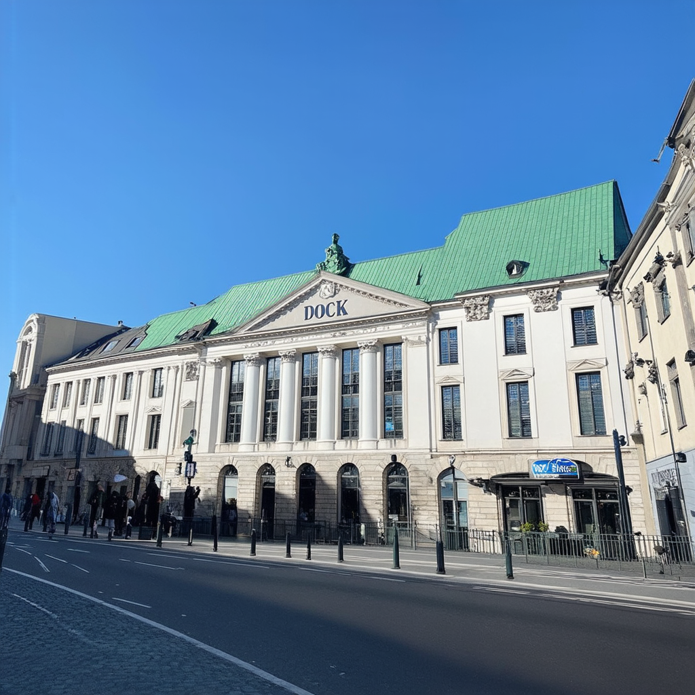 DreamSim Similarity: 0.58
Captioning model: llava-v1.6-34b-hf | Caption Image Reconstruction The image captures a serene scene of a city street in Russia. The street, bathed in the soft glow of the setting sun, is lined with a row of buildings that exude a sense of history and charm. The buildings, painted in a palette of white and yellow, are adorned with green roofs and white trim, adding a touch of color to the scene. The street is DreamSim Similarity: 0.57
Captioning model: llava-onevision-qwen2-0.5b-ov-hf | Caption Image Reconstruction The image depicts a picturesque street scene in what appears to be a European city. The focal point of the image is a large, ornate building with a yellow and white facade, featuring multiple stories and a green roof. The building has a classic architectural style, with decorative elements such as arched windows and balconies. The roof is adorned with green tiles and features a DreamSim Similarity: 0.57
Captioning model: InternVL2-2B | Caption Image Reconstruction The image captures a vibrant street scene in Russia. Dominating the view is a large, ornate building painted in a striking combination of yellow and green. The building's green roof contrasts beautifully with the clear blue sky above. The facade of the building is adorned with a sign that reads "TOURIST", indicating it as a place of interest for visitors.
In front of the building DreamSim Similarity: 0.55
Captioning model: llava-onevision-qwen2-7b-ov-hf | Caption Image Reconstruction The image captures a serene day in a European city. Dominating the scene is a large, white building with a green roof, standing tall against the backdrop of a clear blue sky. The building is adorned with a sign that reads "", indicating its name or purpose.
In front of the building, a black car is parked  DreamSim Similarity: 0.53
Captioning model: llava-v1.6-mistral-7b-hf | Caption Image Reconstruction The image depicts a picturesque urban scene featuring a large, ornate building that appears to be a historical or significant structure, likely a government or cultural building. The building is multi-storied, with a symmetrical facade and a green roof. The architecture is characterized by its classical design, with white and yellow hues dominating the exterior. The roof is adorned with 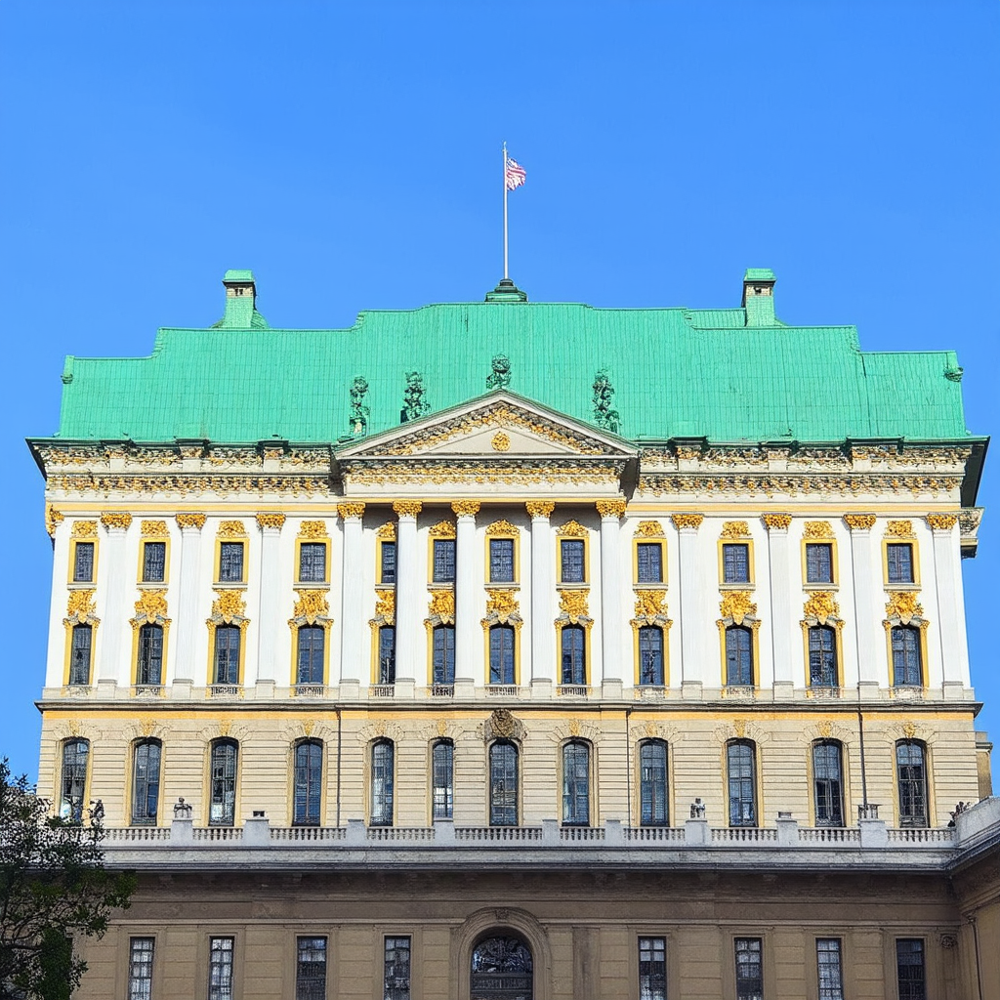 DreamSim Similarity: 0.52
Captioning model: InternVL2-8B | Caption Image Reconstruction The image depicts a picturesque urban scene featuring a prominent building with a distinctive architectural style. The building is a large, multi-story structure with a yellow facade and white trim. It has a green roof with two prominent green domes, each topped with a small spire. The building appears to be a significant landmark, possibly a hotel or a government building, as indicated by the DreamSim Similarity: 0.50
Captioning model: InternVL2-40B | Caption Image Reconstruction The image depicts a picturesque urban scene, likely in a European city, characterized by its architectural and natural elements. The focal point of the image is a large, multi-story building with a distinctive yellow facade and green roofing. The building is adorned with white trim and decorative elements, giving it a classic, elegant appearance. The roof features a prominent green dome with a small DreamSim Similarity: 0.50
Captioning model: InternVL2-26B | Caption Image Reconstruction The image features a large, yellow building with a green roof, which appears to be a hotel. The building is situated in a city, surrounded by other buildings. The street in front of the hotel is lined with parked cars, including a truck. There are at least six cars visible, with some parked closer to the hotel and others further away.
In DreamSim Similarity: 0.46
Captioning model: llava-1.5-13b-hf | Caption Image Reconstruction The image features a large, yellow building with a green roof, likely a hotel or apartment complex. The building is situated in a city, surrounded by various vehicles. There are multiple cars parked in front of the building, and a truck is parked nearby.
In addition to the vehicles, there are several people scattered throughout the scene. Some are walking around the DreamSim Similarity: 0.43
Captioning model: llava-1.5-7b-hf | Caption Image Reconstruction DreamSim Similarity: 0.24
Captioning model: blip2-flan-t5-xxl |
Caption Image Reconstruction In the heart of a golden field, a green and white Claas combine harvester is in action. The harvester, a symbol of agricultural prowess, is moving from left to right, its large body dominating the scene. The Claas logo, a mark of quality and reliability, is prominently displayed on the side of the harvester.
The harves DreamSim Similarity: 0.79
Captioning model: llava-v1.6-34b-hf | Caption Image Reconstruction The image captures a moment in the life of a farmer, specifically in the field where the harvest is taking place. The main focus of the image is a **green and white combine harvester**. This machine, a symbol of modern agriculture, is in the process of harvesting a field of **yellow wheat**.
The combine harvester is equipped with a ** DreamSim Similarity: 0.76
Captioning model: llava-v1.6-mistral-7b-hf | Caption Image Reconstruction The image depicts a modern agricultural scene where a large, green and white Claas combine harvester is actively harvesting a field of golden wheat. The combine harvester, a sophisticated piece of machinery, is prominently featured in the foreground, with the brand "CLAAS" clearly visible on its side. The harvester is equipped with a large, orange header that  DreamSim Similarity: 0.75
Captioning model: InternVL2-26B | Caption Image Reconstruction The image captures a moment in the heart of a golden wheat field, where a green and white CLAAS combine harvester is hard at work. The harvester, a symbol of agricultural productivity, is in the midst of its task, with a cloud of dust rising from the ground, a testament to the power it wields.
The harvester is equipped with a red header DreamSim Similarity: 0.74
Captioning model: llava-onevision-qwen2-7b-ov-hf | Caption Image Reconstruction a combine harvester in a field DreamSim Similarity: 0.73
Captioning model: blip2-flan-t5-xxl | Caption Image Reconstruction The image depicts a large agricultural scene featuring a combine harvester in the process of harvesting wheat. The harvester is a modern, large, yellow and green machine with the brand name "MEDION" prominently displayed on its side. The harvester is equipped with a red and black front plow, which is actively cutting the wheat crop. The machine  DreamSim Similarity: 0.72
Captioning model: InternVL2-2B | Caption Image Reconstruction The image features a large green tractor with a man sitting in the driver's seat, actively working in a field. The tractor is equipped with a large harvester, which is cutting through the wheat. The man is operating the tractor, ensuring the efficient harvesting of the wheat.
The field is filled with wheat, DreamSim Similarity: 0.71
Captioning model: llava-1.5-13b-hf | Caption Image Reconstruction The image depicts a modern agricultural scene where a large combine harvester is actively harvesting a field of golden wheat. The combine harvester, prominently branded with the name "CLAAS," is a large, powerful piece of machinery designed for harvesting crops. The harvester is equipped with a red and yellow color scheme, with the red parts being the most noticeable  DreamSim Similarity: 0.68
Captioning model: InternVL2-8B | Caption Image Reconstruction The image depicts a modern agricultural scene featuring a large, green and white combine harvester in the midst of harvesting a field of golden wheat. The harvester, branded "CLAAS," is actively cutting and collecting the wheat, with its harvesting mechanism visible at the front. The machine is equipped with large, red harvesting arms that are in contact with the wheat stalks, DreamSim Similarity: 0.68
Captioning model: InternVL2-40B | Caption Image Reconstruction The image features a large green tractor with a large blade on the front, driving through a field of tall grass. The tractor is actively cutting the grass, creating a neatly trimmed field.
There are two people in the scene, one standing near the left side of the tractor and another person closer to the right side. Both individuals appear to DreamSim Similarity: 0.64
Captioning model: llava-1.5-7b-hf | Caption Image Reconstruction The image captures a scene of a wheat field, bathed in the warm glow of a sunny day. The field, a golden hue of golden wheat, stretches out in the foreground, its golden color a testament to the harvest season. The wheat is in the midst of a golden wheat harvest, a testament to the bounty of nature. The field is enclosed by a fence, a boundary DreamSim Similarity: 0.27
Captioning model: llava-onevision-qwen2-0.5b-ov-hf |
Caption Image Reconstruction The image shows an old, rusted gas pump. The pump is primarily made of metal and has a weathered, aged appearance with significant rust and paint chipping. The top part of the pump has a rectangular, frosted glass window, which is likely used to display the price or type of fuel. Below this window, there is a black, rectangular section with a circular glass DreamSim Similarity: 0.61
Captioning model: InternVL2-40B | Caption Image Reconstruction The image captures a scene of a vintage gas pump, standing as a testament to the past. The pump, painted in a faded white, is adorned with rust, adding to its antique charm. The top of the pump is black, providing a stark contrast to the white body.
The pump features a large, round window on the front, through which DreamSim Similarity: 0.55
Captioning model: llava-v1.6-mistral-7b-hf | Caption Image Reconstruction The image shows a close-up view of a rusted, old fuel meter. The meter is primarily made of metal, with a weathered and corroded appearance, indicating significant age and exposure to the elements. The top section of the meter has a rectangular frame with a circular window through which a reflection of a person can be seen, suggesting it is a vintage or antique model. DreamSim Similarity: 0.54
Captioning model: InternVL2-2B | Caption Image Reconstruction The image depicts an old, weathered fuel pump, likely from an earlier era, given its design and condition. The pump is primarily constructed from metal, with a rusted and corroded exterior, indicating significant age and exposure to the elements. The body of the pump is rectangular, with a vertical orientation. The top section of the pump features a rectangular, transparent window that DreamSim Similarity: 0.54
Captioning model: InternVL2-26B | Caption Image Reconstruction The image depicts an old, rusted fuel pump station. The pump is made of metal and shows significant signs of wear and corrosion, indicating it has been exposed to the elements for a long time. The pump has a rectangular shape with a slightly curved top and a rectangular base. The main body of the pump is painted in a faded yellow color, with rust and peeling paint DreamSim Similarity: 0.46
Captioning model: InternVL2-8B | Caption Image Reconstruction The image captures a scene of urban decay, featuring a rusted, old-fashioned gas pump. The pump, once a symbol of progress and convenience, now stands as a testament to the passage of time. Its body, once a vibrant shade of red, is now a dull, rusted orange, bearing the marks of countless years of exposure to the elements.
The pump DreamSim Similarity: 0.45
Captioning model: llava-v1.6-34b-hf | Caption Image Reconstruction The image captures a scene of a vintage gas pump, standing tall and weathered by time and elements. The pump, a relic of a bygone era, is a testament to the passage of time. Its body, a canvas of rusted metal, bears the marks of rust and age, a silent witness to the passage of time. The pump is adorned with a sign that reads DreamSim Similarity: 0.44
Captioning model: llava-onevision-qwen2-0.5b-ov-hf | Caption Image Reconstruction The image captures a scene of a gas pump, standing tall and solitary. The pump, a relic of a bygone era, is painted in a faded yellow color, with rusted metal parts adding to its vintage charm. It's situated on a sidewalk, with a building forming the backdrop of the scene.
The pump is equipped with a glass window, behind which a dial and a DreamSim Similarity: 0.41
Captioning model: llava-onevision-qwen2-7b-ov-hf | Caption Image Reconstruction The image features a rusty parking meter with a yellow dial on the top. A man is standing in front of the meter, taking a picture of it with his cell phone. The parking meter is located near a building, and the man appears to be capturing the unique and aged appearance of the meter. DreamSim Similarity: 0.40
Captioning model: llava-1.5-7b-hf | Caption Image Reconstruction The image features a rusted parking meter with a broken glass, giving it a worn and aged appearance. The parking meter is located on the side of a street, and it is positioned close to a building. A person can be seen in the background, possibly walking by or observing the meter. The scene captures the passage of time and the effects of weathering DreamSim Similarity: 0.39
Captioning model: llava-1.5-13b-hf | Caption Image Reconstruction DreamSim Similarity: 0.35
Captioning model: blip2-flan-t5-xxl |
Caption Image Reconstruction The image captures a thrilling moment at the "Porto Alegre" air show in Portugal. A blue and white stunt plane is seen defying gravity, flying upside down in front of a towering red and white cone. The cone, adorned with the text "Porto Alegre" and "Porto Norte", stands tall against the backdrop of a cityscape filled with buildings DreamSim Similarity: 0.64
Captioning model: llava-onevision-qwen2-7b-ov-hf | Caption Image Reconstruction The image depicts a dynamic scene of an air show taking place over a cityscape. In the foreground, there is a large, tall, red and white air-traffic cone with the text "porto norte" and a colorful logo on it. The cone is situated near a body of water, likely a river, and is surrounded by a stone embankment. DreamSim Similarity: 0.55
Captioning model: InternVL2-40B | Caption Image Reconstruction The image depicts a dynamic and exciting scene of an air show taking place in Porto, Portugal. The focal point of the image is a jet aircraft performing a maneuver near a large, brightly colored inflatable cone. The cone is predominantly red with a yellow top and features the text "Porto Norte" on its side, indicating the location of the event. The jet  DreamSim Similarity: 0.52
Captioning model: InternVL2-26B | Caption Image Reconstruction The image depicts a vibrant and bustling scene at a coastal location, likely a popular tourist destination. The focal point of the image is a red and white tower with a yellow band near the top, which appears to be a lighthouse or a navigational aid. The tower is prominently labeled with the word "porto enor," indicating it is located in Porto, DreamSim Similarity: 0.48
Captioning model: InternVL2-8B | Caption Image Reconstruction The image captures a breathtaking aerial display of a jet aircraft performing a stunt in front of a large, towering structure. The jet, painted in vibrant hues of red and blue, is soaring high above a large, cylindrical tower that stands majestically on a hill. The tower, adorned with a large, red and yellow striped cone on top, is a striking feature in the scene. DreamSim Similarity: 0.46
Captioning model: llava-onevision-qwen2-0.5b-ov-hf | Caption Image Reconstruction The image captures a thrilling moment at an airshow. The main focus is a **red and white airplane** performing a daring stunt. The airplane, with its wings spread wide, is in the process of a barrel roll, its body angled sharply to the left. The smoke trail it leaves behind adds a dramatic effect to the scene.
The DreamSim Similarity: 0.36
Captioning model: llava-v1.6-mistral-7b-hf | Caption Image Reconstruction The image captures a thrilling moment of an airplane performing a stunt. The airplane, painted in vibrant hues of blue and red, is in the midst of a daring maneuver. It's flying upside down, with its nose pointing towards the sky and its tail towards the ground. The airplane is also emitting a trail of smoke, adding to the dramatic effect of the stunt.
DreamSim Similarity: 0.32
Captioning model: llava-v1.6-34b-hf | Caption Image Reconstruction The image captures an exciting scene of a blue and red airplane flying through the air, performing a stunt. The airplane is flying close to the ground, and it appears to be flying over a city.
There are numerous people in the scene, watching the airplane's performance from various locations. Some are standing near the airplane, while others are 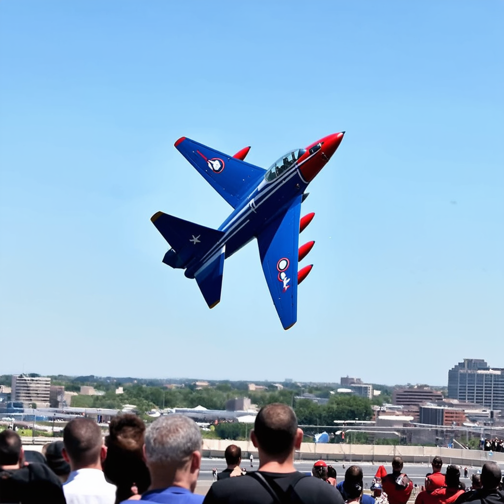 DreamSim Similarity: 0.31
Captioning model: llava-1.5-7b-hf | Caption Image Reconstruction The image captures a thrilling scene of a blue and red airplane flying low over a city, possibly performing a stunt or participating in an air show. The airplane is flying close to a tall building, creating an impressive visual effect.
There are numerous people in the scene, watching the airplane from various locations. Some are standing on the ground, DreamSim Similarity: 0.31
Captioning model: llava-1.5-13b-hf | Caption Image Reconstruction The image depicts a vibrant and dynamic scene featuring a parachute jump from a high vantage point. The central focus is a red and white parachute, prominently displayed in the foreground, with the word "porto" written on it, indicating the location. The parachute is attached to a jetpack, which is attached to a jetpack aircraft, suggesting DreamSim Similarity: 0.26
Captioning model: InternVL2-2B | Caption Image Reconstruction a plane flying over a city DreamSim Similarity: 0.26
Captioning model: blip2-flan-t5-xxl |
Caption Image Reconstruction The image depicts a picturesque view of a river flowing through a city, likely captured during the daytime under a clear blue sky with scattered white clouds. The river, which appears calm, reflects the surrounding buildings and the sky, creating a serene and tranquil atmosphere. The buildings lining the riverbanks are a mix of architectural styles, predominantly featuring warm, earthy tones such DreamSim Similarity: 0.73
Captioning model: InternVL2-8B | Caption Image Reconstruction The image depicts a serene riverside scene with a wide, calm river flowing through the center. The river is flanked by a series of multi-story buildings on both sides, showcasing a variety of architectural styles and colors. The buildings are predominantly in shades of yellow, orange, and beige, with some featuring red-tiled roofs. The structures appear to be a DreamSim Similarity: 0.68
Captioning model: InternVL2-40B | Caption Image Reconstruction The image depicts a picturesque scene of a river flowing through a city, likely in Italy, given the architectural style and the presence of the Arno River. The river is a prominent feature, flowing from the foreground to the background, reflecting the clear blue sky and the surrounding buildings. The riverbanks are lined with a row of colorful buildings, each with distinct architectural styles and DreamSim Similarity: 0.68
Captioning model: InternVL2-2B | Caption Image Reconstruction The image captures a serene scene of the Po River in Italy, viewed from the perspective of the Ponte Vecchio bridge. The river, calm and tranquil, stretches out before us, reflecting the clear blue sky above. On either side of the river, buildings painted in warm hues of orange, yellow, and red line the banks, their vibrant colors adding a touch of charm to the DreamSim Similarity: 0.68
Captioning model: llava-onevision-qwen2-7b-ov-hf | Caption Image Reconstruction The image depicts a picturesque urban scene featuring a river flowing through a city, likely in Europe, given the architectural style of the buildings. The river, which appears calm and reflective, runs horizontally across the image, with the water surface mirroring the sky and the surrounding structures. The riverbanks are lined with a variety of multi-story buildings, showcasing a range of DreamSim Similarity: 0.67
Captioning model: InternVL2-26B | Caption Image Reconstruction The image captures a serene scene of a river flowing through a city. The river, a deep shade of blue, is the central focus of the image. It's flanked by buildings on both sides, their colors a mix of warm hues. The buildings, with their arched windows and red roofs, add a touch of old-world charm to the scene DreamSim Similarity: 0.66
Captioning model: llava-v1.6-mistral-7b-hf | Caption Image Reconstruction The image captures a serene scene of a canal in Venice, Italy. The canal, a vibrant blue, is flanked by buildings on both sides, their red roofs adding a pop of color to the scene. The buildings, varying in height and design, are closely packed, creating a sense of density and urban life.
The sky above is a clear blue, dotted DreamSim Similarity: 0.61
Captioning model: llava-v1.6-34b-hf | Caption Image Reconstruction The image captures a serene scene of a canal in Venice, Italy. The canal, a vibrant blue, stretches out in the foreground, reflecting the clear blue sky above. The water is calm, with gentle ripples indicating a light breeze. On either side of the canal, buildings of various colors line its banks, their colors a mix of warm hues that add to the picturesque setting. DreamSim Similarity: 0.56
Captioning model: llava-onevision-qwen2-0.5b-ov-hf | Caption Image Reconstruction The image features a picturesque scene of a river flowing through a city, with a row of buildings lining the waterfront. The buildings are of various sizes and architectural styles, creating a diverse and visually appealing skyline.
There are several cars parked along the riverfront, with some closer to the water and others further back. A few people can DreamSim Similarity: 0.52
Captioning model: llava-1.5-13b-hf | Caption Image Reconstruction DreamSim Similarity: 0.50
Captioning model: blip2-flan-t5-xxl | Caption Image Reconstruction The image features a beautiful view of a river flowing through a city. The river is surrounded by a city landscape, with buildings on both sides. The buildings are of various heights and architectural styles, creating a picturesque scene.
There are several cars parked along the riverbank, with some closer to the foreground and others further away. A few people can DreamSim Similarity: 0.49
Captioning model: llava-1.5-7b-hf |
Caption Image Reconstruction The image captures a bustling scene from a street in Hong Kong. The street, teeming with life, is framed by towering buildings on either side. These structures, predominantly white and gray, are punctuated by splashes of color from various advertisements and signs.
The street itself is a hive of activity. Numerous people, some donning face masks, are seen traversing the sidewalks 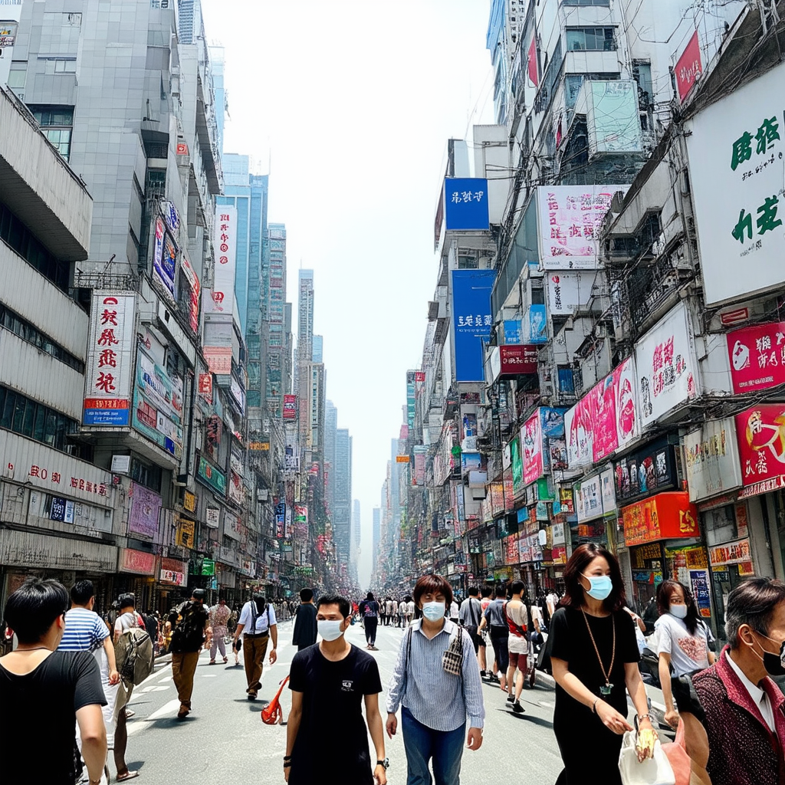 DreamSim Similarity: 0.74
Captioning model: llava-onevision-qwen2-7b-ov-hf | Caption Image Reconstruction The image depicts a bustling urban street scene, likely in a busy city area. The street is filled with pedestrians crossing a zebra crossing, indicating a high level of activity. The people in the image are wearing various types of clothing, including casual outfits, some with face masks, suggesting a setting where health precautions are being observed, possibly during a time of heightened health concerns such DreamSim Similarity: 0.68
Captioning model: InternVL2-8B | Caption Image Reconstruction The image captures a bustling city street in Hong Kong, bustling with activity. The street is lined with tall buildings, their facades adorned with a variety of colorful signs and advertisements, creating a vibrant urban landscape. The street is filled with people, some walking briskly, others leisurely strolling, all going about their day. The sky overhead is a clear blue, and the sun DreamSim Similarity: 0.68
Captioning model: llava-onevision-qwen2-0.5b-ov-hf | Caption Image Reconstruction The image depicts a bustling urban street scene, likely in a densely populated city. The street is filled with pedestrians, many of whom are wearing face masks, suggesting a context of health precautions, possibly during a time of heightened health concerns such as a pandemic. The scene is vibrant and busy, with people walking across a crosswalk, some carrying shopping bags, indicating a commercial DreamSim Similarity: 0.67
Captioning model: InternVL2-26B | Caption Image Reconstruction a busy street with many people DreamSim Similarity: 0.67
Captioning model: blip2-flan-t5-xxl | Caption Image Reconstruction The image captures a bustling scene on a city street in Hong Kong. The street is teeming with life, with people walking on both sides of the road. The buildings lining the street are a mix of modern and traditional architecture, with signs in both English and Chinese, reflecting the city's multicultural nature.
The street is divided into two DreamSim Similarity: 0.64
Captioning model: llava-v1.6-mistral-7b-hf | Caption Image Reconstruction The image captures a bustling city street in Hong Kong. The street is teeming with life, with people walking in both directions. The buildings lining the street are tall and modern, their facades adorned with colorful signs and advertisements. The street itself is busy with traffic, with cars and a truck visible in the background. The sky overhead is overcast, casting a soft DreamSim Similarity: 0.62
Captioning model: llava-v1.6-34b-hf | Caption Image Reconstruction The image depicts a bustling urban street scene, likely in a busy city center. The street is filled with numerous pedestrians, many of whom are wearing face masks, suggesting a concern for health and safety, possibly due to a pandemic. The people are crossing the street at a pedestrian crossing marked with yellow lines. The crowd includes a mix of adults and children, with some pushing strollers DreamSim Similarity: 0.59
Captioning model: InternVL2-40B | Caption Image Reconstruction The image depicts a busy city street filled with people walking and crossing the street. There are numerous individuals of various ages and genders, some of them carrying handbags and backpacks. A few people are also pushing strollers, indicating that the area is family-friendly.
The street is bustling with activity, and there are several traffic lights DreamSim Similarity: 0.55
Captioning model: llava-1.5-13b-hf | Caption Image Reconstruction The image depicts a bustling city street filled with people walking and engaging in various activities. There are numerous individuals scattered throughout the scene, some carrying handbags and backpacks. A few people are also pushing strollers, with one stroller visible in the middle of the street.
In addition to the pedestrians, there are several vehicles DreamSim Similarity: 0.47
Captioning model: llava-1.5-7b-hf | Caption Image Reconstruction The image depicts a bustling urban street scene, likely in a commercial area of a city. The street is crowded with pedestrians, many of whom are walking, some carrying shopping bags and carrying children. The scene is busy and appears to be a typical day in a busy city center.
**Foreground:**
- A woman in a black jacket and pants is pushing a stroller DreamSim Similarity: 0.44
Captioning model: InternVL2-2B |
Caption Image Reconstruction The image depicts a large, ornate room with a gold ceiling and walls. The room is filled with various pieces of furniture, including several chairs and a dining table. The chairs are placed throughout the room, with some near the dining table and others scattered around the space.
In addition to the furniture, there are several vases DreamSim Similarity: 0.69
Captioning model: llava-1.5-13b-hf | Caption Image Reconstruction The image captures the grandeur of the Hall of Mirrors in the Palace of Versailles, a renowned landmark in France. The room is bathed in a warm yellow hue, with gold accents adding to the opulence. The ceiling, painted in a light yellow color, is adorned with intricate designs and gold trim, reflecting the DreamSim Similarity: 0.67
Captioning model: llava-v1.6-mistral-7b-hf | Caption Image Reconstruction The image depicts a grand, opulent room that exudes an aura of luxury and historical significance. The room is richly decorated with gold accents and intricate designs, indicative of a royal or imperial setting. The walls and ceiling are adorned with elaborate gold patterns and carvings, creating a sense of grandeur and opulence. The floor is covered with a checkered DreamSim Similarity: 0.66
Captioning model: InternVL2-26B | Caption Image Reconstruction The image captures the grandeur of the Winter Palace in St. Petersburg, Russia. The room, bathed in a warm glow, is a spectacle of opulence with its gold walls and ceiling. The ceiling, adorned with intricate designs, adds to the room's majestic aura. The floor, a checkerboard pattern of black and white tiles, contrasts beautifully with the golden surroundings.
The DreamSim Similarity: 0.64
Captioning model: llava-onevision-qwen2-7b-ov-hf | Caption Image Reconstruction The image depicts an opulent and grandiose interior, likely a part of a historical palace or a museum. The room is richly decorated with intricate details and luxurious furnishings, exuding an air of regality and sophistication.
**Architecture and Design:**
- The ceiling is adorned with elaborate gold and white patterns, featuring ornate moldings and a large DreamSim Similarity: 0.64
Captioning model: InternVL2-8B | Caption Image Reconstruction The image depicts an opulent and grandiose interior, likely of a historical or royal palace. The room is richly decorated with gold and blue hues, creating a luxurious and regal atmosphere. The walls and ceiling are adorned with intricate gold patterns and carvings, giving the space an air of grandeur and sophistication. The ceiling features a large, orn DreamSim Similarity: 0.63
Captioning model: InternVL2-2B | Caption Image Reconstruction The image captures the opulence of the Grand Master of the Imperial Palace in St. Petersburg, Russia. The room is a spectacle of grandeur, adorned with a lavish chandelier that hangs from the high ceiling, casting a warm glow throughout the space. The walls are covered in gold leaf, reflecting the light and adding to the room's grandeur. The floor is covered in a DreamSim Similarity: 0.63
Captioning model: llava-onevision-qwen2-0.5b-ov-hf | Caption Image Reconstruction The image depicts an opulent, grand room with a richly decorated interior, likely part of a historical palace or museum. The room is characterized by its lavish use of gold and intricate architectural details. The walls and ceiling are adorned with elaborate gold patterns and designs, creating a sense of grandeur and opulence. The ceiling features arched designs with intricate gold detailing, and DreamSim Similarity: 0.62
Captioning model: InternVL2-40B | Caption Image Reconstruction The image captures a grand room, bathed in the warm glow of gold. The walls, adorned with intricate designs, serve as a backdrop to the room's opulence. A large chandelier, hanging from the ceiling, adds to the room's grandeur.
In the center of the room, a large table takes the spotlight. It's drap DreamSim Similarity: 0.60
Captioning model: llava-v1.6-34b-hf | Caption Image Reconstruction a room with gold walls and a chandelier DreamSim Similarity: 0.59
Captioning model: blip2-flan-t5-xxl | Caption Image Reconstruction The image features a large, ornate room with a yellow color scheme. The room is filled with numerous chairs, some of which are placed around a dining table. The chairs are arranged in various positions, creating a cozy atmosphere.
In addition to the chairs, there are several vases placed throughout the room, adding to the room's decorative DreamSim Similarity: 0.58
Captioning model: llava-1.5-7b-hf |
Caption Image Reconstruction The image depicts a traditional Korean-style building, likely a small shop or restaurant, situated in a snowy outdoor setting. The building has a tiled roof with a curved, upturned eaves, a common architectural feature in traditional Korean architecture. The structure is made of wood and stone, with a rustic appearance, and is adorned with various traditional Korean elements.
In front DreamSim Similarity: 0.58
Captioning model: InternVL2-26B | Caption Image Reconstruction The image features a small, old building with a unique Asian design. The building is covered in snow, giving it a charming appearance. In front of the building, there is a sign with Asian writing on it, possibly indicating the building's cultural significance.
The scene also includes a variety of vases and pots scattered around the area, adding to the building' DreamSim Similarity: 0.57
Captioning model: llava-1.5-13b-hf | Caption Image Reconstruction The image captures a serene winter scene in a rural area. The main focus is a traditional Korean house, nestled amidst a snowy landscape. The house, with its thatched roof and wooden walls, exudes a rustic charm. A large stone statue of a Buddha, adorned with a red and white robe, stands guard in the front yard, adding a touch of spirituality to the scene. DreamSim Similarity: 0.54
Captioning model: llava-onevision-qwen2-0.5b-ov-hf | Caption Image Reconstruction The image captures a serene winter scene in a rural area of South Korea. Dominating the frame is a traditional Korean house, its thatched roof blanketed with a layer of fresh snow. The house is nestled amidst a scattering of trees, their branches heavy with the weight of the snow.
In front of the house, a large stone statue of a laughing Buddha adds a touch of DreamSim Similarity: 0.53
Captioning model: llava-onevision-qwen2-7b-ov-hf | Caption Image Reconstruction The image features a small, old-fashioned building with a sign on the side. The building has a unique Asian design, and it is surrounded by a variety of objects. There are several potted plants scattered around the area, with some placed near the building and others further away.
In addition to the potted plants, there are multiple vases of different sizes DreamSim Similarity: 0.52
Captioning model: llava-1.5-7b-hf | Caption Image Reconstruction The image depicts a rustic, traditional Korean house or establishment, likely a restaurant or a small shop, set in a snowy environment. The building has a thatched roof with a wooden structure, typical of traditional Korean architecture. The roof is covered with snow, indicating a winter setting.
In front of the building, there is a large stone statue of a smiling figure, possibly DreamSim Similarity: 0.52
Captioning model: InternVL2-40B | Caption Image Reconstruction The image depicts a rustic, snowy scene in what appears to be a small village or village setting. The foreground features a stone structure with a traditional, wooden roof covered in snow. The roof is adorned with a traditional tiled roof, and there are several wooden wheels and a large, weathered pot visible, suggesting a historical or rustic aesthetic. The ground is covered with  DreamSim Similarity: 0.49
Captioning model: InternVL2-2B | Caption Image Reconstruction The image captures a serene winter scene in a Korean village. Dominating the left side of the frame is a traditional Korean house, its roof adorned with a vibrant red tile. The house is nestled amidst a scattering of trees, their branches heavy with snow, adding a touch of tranquility to the scene.
In front of the house, DreamSim Similarity: 0.48
Captioning model: llava-v1.6-mistral-7b-hf | Caption Image Reconstruction The image depicts a quaint, rustic scene in what appears to be a traditional Korean village during winter. The setting is characterized by a mix of natural and man-made elements, with a blend of traditional and modern elements.
In the foreground, there is a large stone statue of a smiling Buddha, which is a common sight in many Korean temples and traditional settings. The statue is DreamSim Similarity: 0.48
Captioning model: InternVL2-8B | Caption Image Reconstruction The image captures a quaint scene of a small wooden building nestled in a snowy landscape. The building, with its thatched roof, exudes a rustic charm. A red sign with white text, reading "253-9222", is prominently displayed on the building, perhaps indicating a phone number or a business name.
In front of the DreamSim Similarity: 0.42
Captioning model: llava-v1.6-34b-hf | Caption Image Reconstruction DreamSim Similarity: 0.30
Captioning model: blip2-flan-t5-xxl |
Caption Image Reconstruction The image depicts a traditional Japanese architectural structure, likely a Shinto shrine or a temple, characterized by its wooden architecture and intricate design. The pathway is flanked by large wooden doors with ornate metal handles, which are adorned with decorative patterns and possibly symbols. The doors are set within a wooden structure with a high, intricately carved wooden ceiling that features a series DreamSim Similarity: 0.61
Captioning model: InternVL2-2B | Caption Image Reconstruction The image captures a serene scene of a traditional Japanese temple entrance. The entrance is framed by two wooden doors, each adorned with intricate carvings and black circular handles. The doors are set within a wooden archway, which is supported by two sturdy wooden pillars. The archway is covered with a wooden roof, adding to the rustic DreamSim Similarity: 0.52
Captioning model: llava-v1.6-mistral-7b-hf | Caption Image Reconstruction The image captures a serene scene of a traditional Japanese garden. Dominating the foreground is a wooden gate, its structure adorned with intricate carvings that add a touch of elegance. The gate is flanked by two wooden doors, each featuring a series of small black circles, a common design element in Japanese architecture.
The gate and doors are set against a backdrop of a DreamSim Similarity: 0.48
Captioning model: llava-v1.6-34b-hf | Caption Image Reconstruction The image features a beautiful stone archway with a cobblestone path leading through it. The archway is adorned with bamboo trees, creating a serene and picturesque atmosphere. The pathway is lined with numerous bamboo trees on both sides, creating a sense of depth and a natural environment.
In the background, there are  DreamSim Similarity: 0.47
Captioning model: llava-1.5-13b-hf | Caption Image Reconstruction an asian style gate with wooden doors DreamSim Similarity: 0.46
Captioning model: blip2-flan-t5-xxl | Caption Image Reconstruction The image depicts a traditional Japanese torii gate, a significant architectural element often found at the entrance of Shinto shrines. The torii gate is constructed from wood and features intricate carvings and decorations. The gate is characterized by its large, ornate wooden doors, which are adorned with metal fittings and possibly metal plates. The top of the gate is decorated with DreamSim Similarity: 0.43
Captioning model: InternVL2-8B | Caption Image Reconstruction The image depicts a traditional Japanese gate, known as a torii, which is often found at the entrance of Shinto shrines. The gate is made of wood and features intricate carvings and designs, including a prominent dragon motif on the top beam. The torii is flanked by two large wooden doors, each adorned with numerous metal studs and decorative elements. The structure DreamSim Similarity: 0.42
Captioning model: InternVL2-40B | Caption Image Reconstruction The image captures a serene scene of a traditional Japanese temple gate, a testament to the rich cultural heritage of Japan. The gate, constructed from dark wood, stands majestically in the center of the frame, its intricate carvings and ornate design a testament to the craftsmanship of a bygone era. The gate is adorned with a series of black and white bells, their metallic DreamSim Similarity: 0.41
Captioning model: llava-onevision-qwen2-0.5b-ov-hf | Caption Image Reconstruction The image features a long, narrow pathway lined with numerous bamboo trees. The pathway is surrounded by a beautiful garden setting, creating a serene atmosphere. The bamboo trees are arranged in a row, providing a sense of order and harmony to the scene.
In addition to the bamboo trees, there are a few cars DreamSim Similarity: 0.41
Captioning model: llava-1.5-7b-hf | Caption Image Reconstruction The image depicts a traditional Japanese architectural structure, likely a temple or shrine, characterized by its distinct and intricate design elements. The focal point of the image is a large, open gateway or torii gate, which is a common feature in Shinto shrines and Buddhist temples in Japan. The torii gate is made of wood and features a rich, dark brown color, with DreamSim Similarity: 0.41
Captioning model: InternVL2-26B | Caption Image Reconstruction The image captures the serene beauty of the Fushimi Inari-taisha shrine in Kyoto, Japan. The viewer's perspective is from the entrance of a wooden gate, known as a torii, which is a common entrance to or within a Shinto shrine. This particular gate is flanked by two large wooden doors, each adorned with intricate carvings of dragons and phoenix DreamSim Similarity: 0.36
Captioning model: llava-onevision-qwen2-7b-ov-hf |
Caption Image Reconstruction The image depicts a vibrant scene featuring three women dressed in traditional flamenco dresses, standing on a cobblestone street. The women are adorned in colorful, ruffled dresses that are characteristic of flamenco attire. The dresses are elaborate, with multiple layers of fabric creating a voluminous and flowing appearance. The dresses are predominantly red, blue, and DreamSim Similarity: 0.71
Captioning model: InternVL2-26B | Caption Image Reconstruction The image depicts a group of four women dressed in traditional flamenco attire, standing on a cobblestone street in front of an old, historic building. The women are wearing vibrant, colorful dresses with ruffled skirts and polka dots, which are characteristic of flamenco costumes. Each dress is unique in color and pattern, with the women wearing dresses in red, DreamSim Similarity: 0.71
Captioning model: InternVL2-40B | Caption Image Reconstruction In the heart of a bustling city, a group of four women, adorned in traditional Spanish dresses, are caught in a moment of joy and celebration. Their dresses, vibrant in hues of red, blue, and pink, contrast beautifully with the gray stone buildings that form the backdrop of this scene.
The woman on the left, dressed in a red dress, is DreamSim Similarity: 0.67
Captioning model: llava-v1.6-34b-hf | Caption Image Reconstruction The image features a group of women dressed in traditional Spanish clothing, dancing and performing in a public square. They are wearing colorful dresses and are accompanied by a horse, which is positioned in the middle of the scene.
There are several people in the scene, with some standing closer to the horse and others scattered around the square. A few individuals can DreamSim Similarity: 0.67
Captioning model: llava-1.5-7b-hf | Caption Image Reconstruction The image features a group of four women dressed in traditional Spanish dresses, dancing in a courtyard. They are performing a lively dance, possibly Flamenco, in front of a horse-drawn carriage. The women are spread out across the scene, with one woman on the left side, another in the center, and two more on the right side.
DreamSim Similarity: 0.67
Captioning model: llava-1.5-13b-hf | Caption Image Reconstruction The image depicts a vibrant and colorful scene of three women dressed in traditional flamenco costumes, performing in what appears to be a public square. The women are wearing flamenco dresses, which are characterized by their bright colors and intricate designs. The dresses are layered and ruffled, with the one on the left being red with blue and yellow polka dots,  DreamSim Similarity: 0.66
Captioning model: InternVL2-8B | Caption Image Reconstruction In the heart of a cobblestone square, a lively scene unfolds. Four women, adorned in vibrant dresses of red, blue, and pink, are caught in the midst of a traditional dance. Their dresses, a riot of color, contrast beautifully with the muted tones of the square. Each woman holds a red fan, a common accessory in their dance, adding an extra layer of DreamSim Similarity: 0.63
Captioning model: llava-onevision-qwen2-7b-ov-hf | Caption Image Reconstruction The image captures a lively scene of a traditional flamenco dance performance. The dancers, adorned in vibrant red and pink flamenco dresses, are the focal point of the image. Their skirts are adorned with colorful polka dots, adding a splash of color to the scene. Each dancer is holding a red fan in one hand and a red and white fan in the other, adding to the 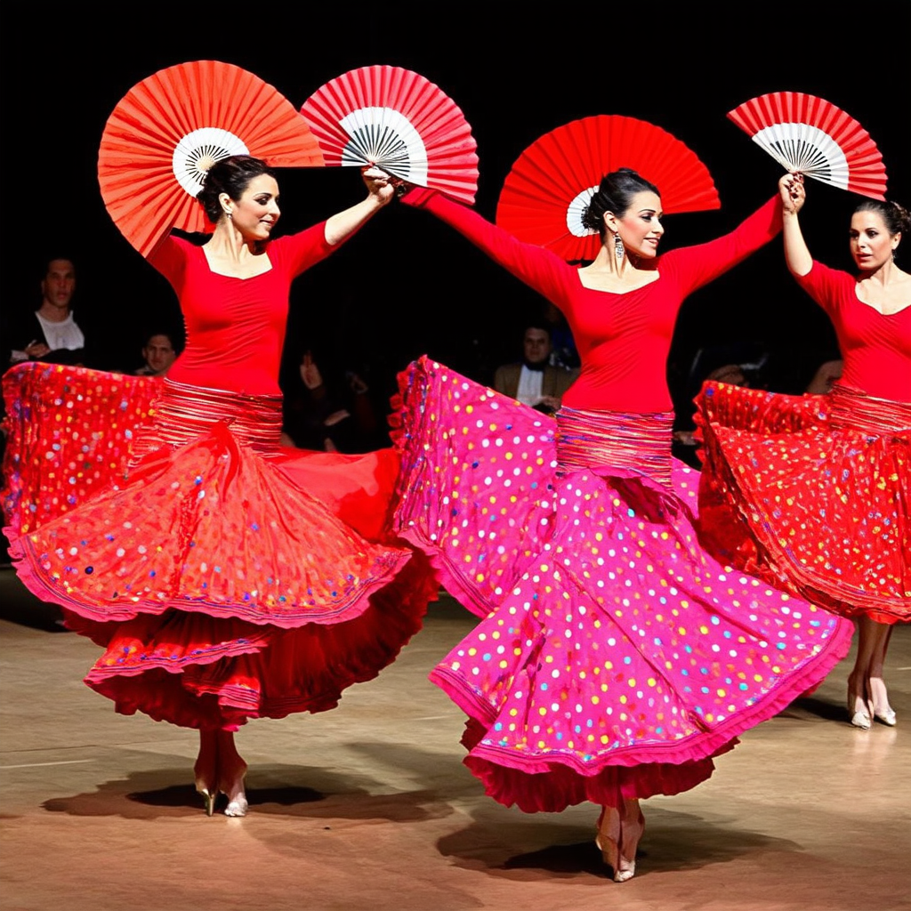 DreamSim Similarity: 0.61
Captioning model: llava-onevision-qwen2-0.5b-ov-hf | Caption Image Reconstruction a group of people in spanish dresses DreamSim Similarity: 0.59
Captioning model: blip2-flan-t5-xxl | Caption Image Reconstruction In the heart of a bustling city, a group of four women are captured in a moment of joy and camaraderie. They are standing on a cobblestone street, their vibrant dresses adding a splash of color to the urban landscape.
The woman on the far left is clad in a red dress adorned with white polka d DreamSim Similarity: 0.57
Captioning model: llava-v1.6-mistral-7b-hf | Caption Image Reconstruction The image depicts a lively scene in what appears to be a historic or cultural setting, possibly a street parade or festival. The background features a building with classical architecture, including columns and a large window, suggesting a European or historical context. The ground is paved with cobblestones, and there are several horses and carriages in the background, indicating a traditional or historical setting. DreamSim Similarity: 0.42
Captioning model: InternVL2-2B |
Caption Image Reconstruction The image captures a modern apartment building, standing tall against the backdrop of a clear blue sky. The building is a striking combination of white, black, and yellow, with the yellow accents adding a vibrant touch to the otherwise monochrome structure. The perspective of the image is from below, looking up, giving the building an imposing and majestic presence. The building features balconies, offering a 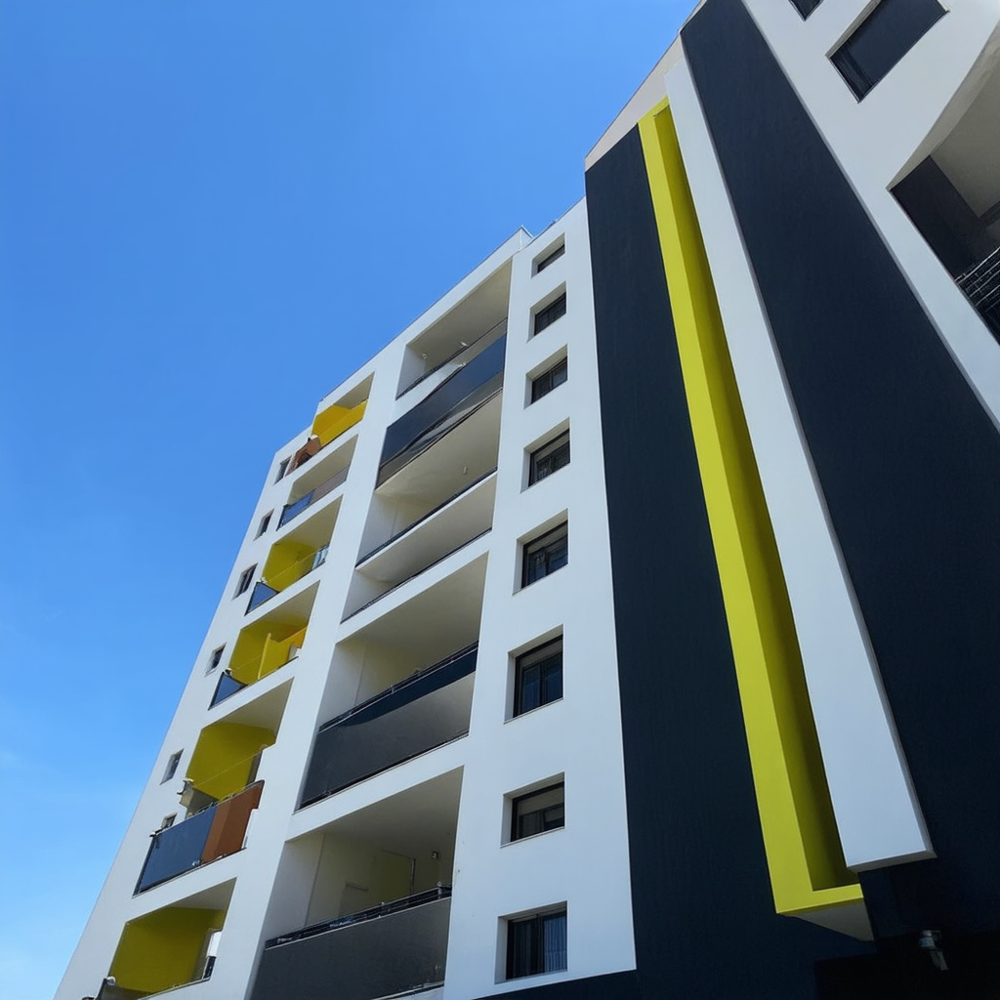 DreamSim Similarity: 0.73
Captioning model: llava-onevision-qwen2-7b-ov-hf | Caption Image Reconstruction The image captures a modern apartment building under a clear blue sky. The building is characterized by a white facade with a striking contrast of black and yellow balconies. Each balcony is equipped with a glass railing, adding to the contemporary aesthetic of the structure.
The building is adorned with numerous windows, each framed in black, punctuating the white DreamSim Similarity: 0.68
Captioning model: llava-v1.6-mistral-7b-hf | Caption Image Reconstruction The image depicts a modern multi-story residential building under a clear blue sky with a few scattered clouds. The building is characterized by a contemporary architectural design, featuring a combination of white and yellow panels. The facade is divided into sections, with alternating panels of white and yellow, creating a visually appealing contrast. The windows are uniformly distributed across the building, each framed with dark gray DreamSim Similarity: 0.67
Captioning model: InternVL2-26B | Caption Image Reconstruction The image shows a modern multi-story residential building. The building has a facade with a combination of white, gray, and yellow vertical stripes. The windows are evenly spaced and appear to be of a standard size, with some having balconies. The balconies are fitted with railings and are accessible from the windows. The sky above is clear with a few scattered clouds, suggesting DreamSim Similarity: 0.66
Captioning model: llava-v1.6-34b-hf | Caption Image Reconstruction The image depicts a modern multi-story residential building with a striking architectural design. The building features a combination of white and yellow vertical stripes on its facade, creating a visually appealing contrast. The upper floors are predominantly white, while the lower floors have a yellow color. Each floor has a series of rectangular windows, some of which are covered with dark gray or black frames. The windows are DreamSim Similarity: 0.62
Captioning model: InternVL2-2B | Caption Image Reconstruction The image captures a modern apartment building, standing tall against the backdrop of a clear blue sky. The building is a striking example of contemporary architecture, characterized by its white walls and black accents. The building is adorned with a series of balconies, each adorned with a sliding glass door and a window, offering a view of the sky. The balconies are neatly arranged in a grid-like DreamSim Similarity: 0.60
Captioning model: llava-onevision-qwen2-0.5b-ov-hf | Caption Image Reconstruction The image depicts a modern multi-story residential building under a clear blue sky with a few scattered clouds. The building has a contemporary architectural design, characterized by a combination of geometric shapes and clean lines. The facade is predominantly white, with sections of the building featuring bold, contrasting colors such as yellow and gray. The windows are uniformly spaced and arranged in a grid-like pattern DreamSim Similarity: 0.59
Captioning model: InternVL2-8B | Caption Image Reconstruction The image depicts a modern multi-story residential building with a contemporary architectural design. The building features a combination of white, gray, and yellow exterior panels, creating a visually appealing and dynamic facade. The structure has multiple balconies, each with glass railings, providing residents with outdoor space. The windows are uniformly distributed across the building, with some windows having yellow frames, adding a DreamSim Similarity: 0.57
Captioning model: InternVL2-40B | Caption Image Reconstruction The image features a tall, multi-story building with a yellow and black color scheme. The building has many windows, some of which are open, allowing natural light to enter. The windows are placed at various heights and positions, creating a visually interesting scene. The building's design and color combination give it a modern and stylish appearance. DreamSim Similarity: 0.56
Captioning model: llava-1.5-7b-hf | Caption Image Reconstruction The image features a tall, multi-story building with a mix of black, yellow, and white colors. The building has a unique design, with the yellow and black sections creating a striking contrast against the white background. The building is situated under a blue sky, which adds to the overall aesthetic of the scene.
There are several windows on the building, with DreamSim Similarity: 0.55
Captioning model: llava-1.5-13b-hf | Caption Image Reconstruction a modern apartment building DreamSim Similarity: 0.49
Captioning model: blip2-flan-t5-xxl |
Caption Image Reconstruction The image captures a modern subway station, bathed in the soft glow of overhead lights. The platform, constructed of polished marble, is adorned with a row of silver turnstiles, their green lights glowing brightly. These turnstiles, standing in a line, are the gatekeepers of the station, marking the boundary between the public and DreamSim Similarity: 0.67
Captioning model: llava-v1.6-mistral-7b-hf | Caption Image Reconstruction The image captures a bustling scene at a modern airport terminal. The terminal is bathed in a soft, ambient light that illuminates the gleaming silver metal doors and sleek black walls. The floor beneath is a polished stone, reflecting the overhead lights and adding to the overall elegance of the space.
On the left side of the image, a row of automatic gates stands tall, their  DreamSim Similarity: 0.64
Captioning model: llava-onevision-qwen2-0.5b-ov-hf | Caption Image Reconstruction The image depicts a large subway station with a row of silver, modern-looking turnstiles. There are at least 12 turnstiles in the scene, with some closer to the foreground and others further back. The turnstiles are arranged in a straight line, providing a clear path for passengers to enter the subway station.
In addition DreamSim Similarity: 0.61
Captioning model: llava-1.5-7b-hf | Caption Image Reconstruction The image captures a scene from a subway station in Russia. The viewer's perspective is from the entrance of the station, looking towards the exit. The station is characterized by a modern design, with a ceiling adorned with small holes and a floor made of gray tiles.
The most striking feature of the image is the row of eight turnstiles, all of which are currently inactive. DreamSim Similarity: 0.58
Captioning model: llava-onevision-qwen2-7b-ov-hf | Caption Image Reconstruction The image depicts a subway station with a row of silver turnstiles lined up along the platform. There are a total of nine turnstiles, each with a unique design, providing access to the subway. The turnstiles are positioned close to each other, creating a visually appealing and organized appearance.
In addition to the turnst DreamSim Similarity: 0.58
Captioning model: llava-1.5-13b-hf | Caption Image Reconstruction The image captures a scene from a modern subway station. The station is characterized by a sleek, minimalist design. The floor, walls, and ceiling are all adorned with a white color scheme, punctuated by black accents.
A row of ticket machines stands prominently in the foreground. These machines, painted in a striking combination of silver and red, are equipped with green lights 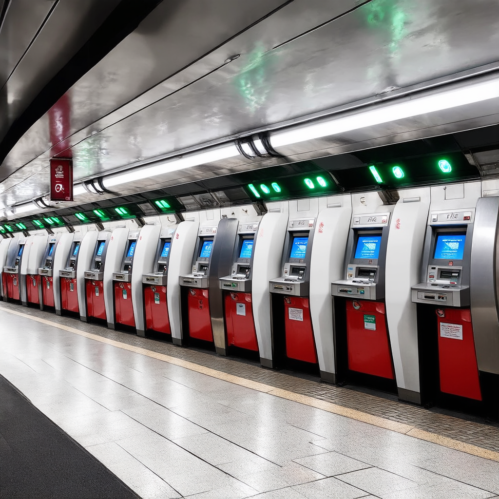 DreamSim Similarity: 0.57
Captioning model: llava-v1.6-34b-hf | Caption Image Reconstruction The image depicts a modern, well-lit metro station entrance. The station features a sleek, clean, and organized design with a high level of technological integration. The station is equipped with multiple automated ticketing machines, which are likely for electronic ticketing systems, indicated by the presence of digital displays and digital signage. The machines are mounted on a shiny, reflective floor, and DreamSim Similarity: 0.56
Captioning model: InternVL2-2B | Caption Image Reconstruction The image depicts an entrance or exit area of a subway station. The setting appears modern and well-lit, with a clean and polished design. The ceiling is perforated with circular patterns, and there is a large, illuminated sign above the turnstiles that reads "" (Exits) in both Russian and English, indicating that this is likely a station DreamSim Similarity: 0.47
Captioning model: InternVL2-40B | Caption Image Reconstruction The image depicts a modern, well-lit subway station platform. The platform is clean and spacious, with a sleek, contemporary design. The flooring is made of polished tiles, reflecting the overhead lights and creating a bright, airy atmosphere. The walls are adorned with a combination of light-colored panels and metallic elements, contributing to the modern aesthetic.
On the left side of the DreamSim Similarity: 0.46
Captioning model: InternVL2-8B | Caption Image Reconstruction a subway station with a lot of people DreamSim Similarity: 0.44
Captioning model: blip2-flan-t5-xxl | Caption Image Reconstruction The image depicts a modern, well-lit subway station exit labeled " 1-4" (Exits 1-4) in Cyrillic script, indicating that this is likely a station in a Russian-speaking country. The exit is marked with a sign that also includes an arrow pointing upwards, suggesting that the exits are located on the first floor DreamSim Similarity: 0.37
Captioning model: InternVL2-26B |
Caption Image Reconstruction The image depicts the exterior of a building, likely a small shop or establishment, with a weathered and somewhat dilapidated appearance. The building has a sloped roof with rusted metal sheets, and the structure appears to be made of wood. The roof is covered with a few signs and posters, some of which are in Japanese.
The posters are colorful and feature various  DreamSim Similarity: 0.63
Captioning model: InternVL2-8B | Caption Image Reconstruction The image captures a scene of a building undergoing renovation. The building, constructed of wood, stands out with its red roof. The front of the building is adorned with a variety of signs and posters, each telling a different story.
On the left side of the building, a sign in Japanese catches the eye. It's a stark contrast DreamSim Similarity: 0.62
Captioning model: llava-v1.6-mistral-7b-hf | Caption Image Reconstruction The image features a dilapidated building with a rusty roof, likely a house or a small building. The building is covered in various signs and posters, giving it a somewhat cluttered appearance. There are at least six signs visible on the building, with some placed higher up and others closer to the ground.
In addition to the signs, there are two DreamSim Similarity: 0.60
Captioning model: llava-1.5-7b-hf | Caption Image Reconstruction The image depicts the exterior of a building with a traditional architectural style, likely in an urban or semi-urban setting. The building appears to be a small, single-story structure with a sloped, tiled roof. The roof tiles are arranged in a pattern typical of East Asian architecture, possibly Japanese, given the style of the signage and the characters on the posters. The DreamSim Similarity: 0.53
Captioning model: InternVL2-26B | Caption Image Reconstruction The image features a dilapidated building with a rusty door and a roof that appears to be in need of repair. The building is covered in various signs, some of which are written in a foreign language. The signs are scattered across the building, with some placed higher up and others closer to the ground.
In addition to the building, there is a person standing DreamSim Similarity: 0.52
Captioning model: llava-1.5-13b-hf | Caption Image Reconstruction The image captures a scene of urban decay. Dominating the frame is a dilapidated building, its brown roof and walls bearing the marks of time and neglect. The roof, made of corrugated metal, is rusted and peeling, hinting at the building's age and exposure to the elements.
The walls, constructed of wood, are also in DreamSim Similarity: 0.51
Captioning model: llava-v1.6-34b-hf | Caption Image Reconstruction The image depicts an old, weathered building with a traditional architectural style. The roof is made of wooden planks and appears to be in a state of disrepair, with some parts looking worn and possibly damaged. The building has a wooden facade with a large, rusted metal door that is partially open. The door has a horizontal metal bar across it, suggesting it may DreamSim Similarity: 0.51
Captioning model: InternVL2-40B | Caption Image Reconstruction The image depicts the exterior of a building with a weathered, rusty corrugated metal roof and a wooden facade. The roof is covered with a red tarp, and there are several signs and posters affixed to the building's facade. The signs are in various colors and contain text in Japanese, indicating political or social messages. The signs are mostly in blue, red DreamSim Similarity: 0.48
Captioning model: InternVL2-2B | Caption Image Reconstruction The image captures a scene of a wooden building, standing under a gray sky. The building's roof is covered in brown shingles, giving it a rustic charm. A red and white sign, along with a blue and white sign, are prominently displayed on the front of the building, perhaps indicating the nature of the business or services offered within.
On the right side of the building, DreamSim Similarity: 0.48
Captioning model: llava-onevision-qwen2-7b-ov-hf | Caption Image Reconstruction The image captures a scene of a dilapidated wooden building, standing as a testament to the passage of time. The building, showing signs of neglect and disrepair, is a silent witness to the passage of time. The roof, made of dark brown wooden planks, is weathered and worn, bearing the marks of time with its rusted and peeling paint. The walls DreamSim Similarity: 0.44
Captioning model: llava-onevision-qwen2-0.5b-ov-hf | Caption Image Reconstruction DreamSim Similarity: 0.38
Captioning model: blip2-flan-t5-xxl |
Caption Image Reconstruction The image features a man wearing a red shirt and sunglasses, waving his hand in the air. He appears to be a race car driver, as he is standing in front of a building with a red sign. There are other people in the scene, with one person standing close to the driver and two more people in the background.
A handbag DreamSim Similarity: 0.69
Captioning model: llava-1.5-13b-hf | Caption Image Reconstruction The image depicts a scene from a motorsport event, likely a Formula 1 race. The central figure in the image is a man wearing a red and white racing team uniform, which includes a polo shirt with a prominent yellow logo on the left chest area. He is waving with his right hand, and his face is blurred for privacy. The uniform suggests he is DreamSim Similarity: 0.68
Captioning model: InternVL2-8B | Caption Image Reconstruction The image shows a person wearing a red and white racing team uniform, waving their hand. The uniform has several logos, including a prominent one on the chest. The person is standing in front of a garage or pit area, with a large red "SF" logo visible on the wall behind them. The background includes other team members and equipment, suggesting a racing team environment, likely related DreamSim Similarity: 0.66
Captioning model: InternVL2-40B | Caption Image Reconstruction The image depicts a scene from a Formula 1 pit stop area, likely during a race or practice session. The central figure in the image is a man wearing a red and white racing suit with various sponsor logos, including the prominent Ferrari logo on the chest. He is waving his right hand, possibly acknowledging the crowd or signaling to someone. The man is standing in front of DreamSim Similarity: 0.66
Captioning model: InternVL2-26B | Caption Image Reconstruction The image captures a moment of triumph and celebration. A man, clad in a vibrant red and white Ferrari F1 car racing suit, stands proudly in the center of the frame. His right hand is raised high in a victorious gesture, a black wristwatch adorning his wrist, a symbol of his achievement. His left hand is casually resting on the handlebars of his car, a DreamSim Similarity: 0.65
Captioning model: llava-onevision-qwen2-0.5b-ov-hf | Caption Image Reconstruction The image depicts a scene at a Formula 1 racing event, likely a pit stop or a pit lane. The focal point of the image is a person dressed in a red and white racing suit, which is a common attire for Formula 1 drivers. The individual is waving at the camera with their right hand, which is raised in a wave. The suit is branded DreamSim Similarity: 0.63
Captioning model: InternVL2-2B | Caption Image Reconstruction a man waving at the ferrari team DreamSim Similarity: 0.62
Captioning model: blip2-flan-t5-xxl | Caption Image Reconstruction In the center of the image, a man in a vibrant red and white shirt is the main focus. He's standing in front of a white wall, which is adorned with a large red number "03". The man is waving his right hand, a friendly gesture that adds a lively touch to the scene.
Behind him, there's a group of people, all dressed in matching DreamSim Similarity: 0.61
Captioning model: llava-onevision-qwen2-7b-ov-hf | Caption Image Reconstruction In the image, a man is the main subject, standing in front of a white wall adorned with a red logo. He is dressed in a red and white shirt, and his right hand is raised in a wave. His face is blurred, adding an air of mystery to the scene.
The man is positioned on the left side of the image, with his body ang DreamSim Similarity: 0.61
Captioning model: llava-v1.6-34b-hf | Caption Image Reconstruction In the image, a man is the central figure, standing in front of a white wall adorned with a red Ferrari logo. He is dressed in a vibrant red and white striped shirt, which is a common color scheme associated with the Ferrari brand. His right hand is raised in a wave, suggesting a friendly or welcoming gesture.
The man is DreamSim Similarity: 0.57
Captioning model: llava-v1.6-mistral-7b-hf | Caption Image Reconstruction The image features a man wearing a red shirt and sunglasses, standing in front of a building. He is waving at the camera, giving a friendly and approachable vibe. There are several other people in the scene, some of them standing closer to the man in the red shirt, while others are further away.
A handbag can be DreamSim Similarity: 0.51
Captioning model: llava-1.5-7b-hf |
Caption Image Reconstruction The image depicts a picturesque canal scene in a European city, likely Amsterdam, given the architectural style and the presence of a canal. The canal is lined with a variety of colorful buildings, each with distinct facades and architectural details. The buildings are primarily constructed with brick and feature gabled roofs, large windows, and ornate decorations. Some buildings have flags and banners hanging from them DreamSim Similarity: 0.72
Captioning model: InternVL2-40B | Caption Image Reconstruction The image depicts a picturesque canal scene in a European city, likely in the Netherlands, given the architecture and the style of the buildings. The canal is lined with a variety of colorful buildings, each with distinct architectural styles and colors. The buildings are closely packed along the waterfront, creating a vibrant and bustling atmosphere. The waterway is calm, reflecting the buildings and the DreamSim Similarity: 0.72
Captioning model: InternVL2-2B | Caption Image Reconstruction The image depicts a picturesque canal scene in a European city, likely in the Netherlands, given the architectural style and the presence of boats. The canal is lined with a variety of colorful buildings, each showcasing distinct architectural features typical of Dutch architecture. The buildings are multi-storied, with gabled roofs, ornate facades, and a mix of brick and pl DreamSim Similarity: 0.69
Captioning model: InternVL2-8B | Caption Image Reconstruction The image depicts a picturesque canal scene in a European city, likely Amsterdam, given the architectural style and the presence of the iconic canal boats. The canal is a central feature, with calm, reflective water that mirrors the surrounding buildings and boats. The water is bordered by a stone embankment on the left and a wooden dock on the right. The canal is lined with DreamSim Similarity: 0.64
Captioning model: InternVL2-26B | Caption Image Reconstruction The image captures a serene scene of a European canal, bathed in the soft glow of daylight. The canal, a ribbon of blue, is flanked by buildings on both sides, their red and brown facades reflecting the tranquility of the water. The buildings, with their ornate details and pointed roofs, are a testament to the architect DreamSim Similarity: 0.62
Captioning model: llava-v1.6-mistral-7b-hf | Caption Image Reconstruction The image depicts a picturesque scene of a river running through a city. Several boats are floating along the river, with some of them docked at the pier. The boats vary in size and are scattered throughout the scene.
In addition to the boats, there are numerous people enjoying the view and the atmosphere. Some of them are standing near the water, while 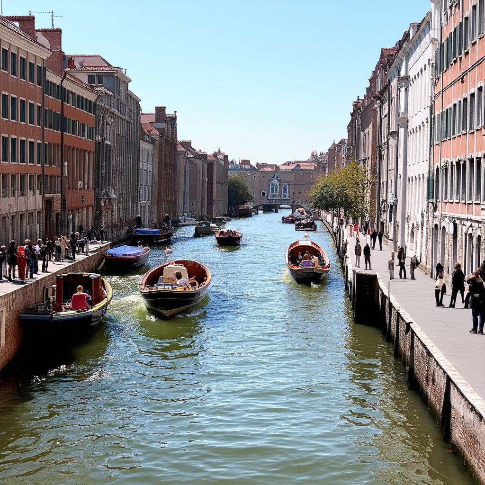 DreamSim Similarity: 0.62
Captioning model: llava-1.5-7b-hf | Caption Image Reconstruction The image features a picturesque scene of a river running through a city, with several boats docked along the riverbank. The boats vary in size and are lined up in a row, creating a charming atmosphere.
In the background, there are buildings that add to the urban setting. A few people can be seen scattered throughout the scene, likely enjoying the view DreamSim Similarity: 0.62
Captioning model: llava-1.5-13b-hf | Caption Image Reconstruction The image captures a vibrant scene from the canals of Amsterdam, Netherlands. The viewer's perspective is from the water, looking towards the cityscape. The canal, a deep blue ribbon of water, is flanked by buildings on both sides. These structures, predominantly brick and stone, are adorned with colorful awnings and flags, adding a splash of color to the scene.
Several DreamSim Similarity: 0.59
Captioning model: llava-onevision-qwen2-7b-ov-hf | Caption Image Reconstruction a city with a river and boats DreamSim Similarity: 0.56
Captioning model: blip2-flan-t5-xxl | Caption Image Reconstruction The image captures the vibrant and historic city of Amsterdam, known for its unique network of canals. The perspective is from a high vantage point, providing a panoramic view of the cityscape. The canals, a distinctive feature of Amsterdam, are filled with boats, adding a lively touch to the scene.
The buildings, constructed from brick, line the canals DreamSim Similarity: 0.53
Captioning model: llava-v1.6-34b-hf | Caption Image Reconstruction The image captures a picturesque scene of a canal in Amsterdam, Netherlands. The canal, a vibrant blue, is bustling with activity. A yellow boat, adorned with a red and white striped canopy, is docked on the right side of the canal. The boat is adorned with a large elephant statue, adding a touch of whimsy to the scene. The boat is surrounded by lush green  DreamSim Similarity: 0.45
Captioning model: llava-onevision-qwen2-0.5b-ov-hf |
Caption Image Reconstruction The image depicts a bustling urban scene in front of a grand neoclassical building. The building features a prominent portico with large columns, each adorned with colorful banners displaying the name "Bridget Riley." The architecture of the building is reminiscent of ancient Greek or Roman styles, with intricate carvings and sculptures on the facade. The columns are painted in vibrant hues  DreamSim Similarity: 0.64
Captioning model: InternVL2-40B | Caption Image Reconstruction The image captures the grandeur of the Edinburgh Playhouse, a renowned landmark in Scotland. The neoclassical facade of the building, characterized by a series of vibrant columns, stands out against the backdrop of a cloudy sky. The columns, painted in a rainbow of colors, add a touch of whimsy to the otherwise stately structure.
In the foreground, the hustle and DreamSim Similarity: 0.63
Captioning model: llava-onevision-qwen2-7b-ov-hf | Caption Image Reconstruction The image depicts a bustling urban scene featuring a grand, historic building with classical architectural elements. The building has a prominent faade with a series of large, brightly colored columns, each painted in vibrant hues of pink, yellow, and blue. These columns are part of a grand entrance, and the building itself appears to be a significant cultural or historical structure, possibly DreamSim Similarity: 0.59
Captioning model: InternVL2-8B | Caption Image Reconstruction The image features a large, colorful building with a row of columns and a prominent clock tower. The building is situated on a busy street, with a green bus driving by on the left side of the scene. There are numerous people walking around the area, some of them carrying handbags.
In total, there are 13 people visible in the scene, with DreamSim Similarity: 0.58
Captioning model: llava-1.5-13b-hf | Caption Image Reconstruction The image captures a vibrant scene on a city street. Dominating the right side of the frame is a grand building, its facade adorned with columns in a rainbow of colors. The building's architectural details are intricate, hinting at a rich history.
On the left side of the image, a green and yellow bus is in motion, adding a dynamic element to DreamSim Similarity: 0.55
Captioning model: llava-v1.6-34b-hf | Caption Image Reconstruction The image captures a vibrant scene on a city street. Dominating the background is a grand building, its facade adorned with a series of colorful banners. The banners, in hues of pink, yellow, and blue, add a splash of color to the otherwise gray day. The building itself is a testament to architectural grandeur, DreamSim Similarity: 0.54
Captioning model: llava-v1.6-mistral-7b-hf | Caption Image Reconstruction The image depicts a bustling urban scene featuring a large, ornate building with classical architectural elements. The building is a significant structure, likely a museum or cultural institution, characterized by its grand columns and intricate detailing. The facade of the building is adorned with a series of vertical banners or canvases, each displaying the name "Bridget Riley" in bold, colorful DreamSim Similarity: 0.54
Captioning model: InternVL2-2B | Caption Image Reconstruction The image depicts a bustling urban scene featuring a prominent neoclassical building, likely a museum or cultural institution, situated in a busy city environment. The building is characterized by its grand architectural style, with a series of tall, ornate columns supporting a triangular pediment adorned with intricate carvings and sculptures. The facade of the building is flanked by DreamSim Similarity: 0.48
Captioning model: InternVL2-26B | Caption Image Reconstruction The image captures a bustling scene at the iconic Palace of Westminster in London, UK. The focal point of the image is the majestic Palace of Westminster, a neoclassical building that stands as a symbol of British history and culture. The building is adorned with a series of columns in vibrant hues of red, yellow, and pink, creating a striking contrast against the gray stone facade. DreamSim Similarity: 0.44
Captioning model: llava-onevision-qwen2-0.5b-ov-hf | Caption Image Reconstruction The image depicts a busy city street with a green bus driving down the road. The bus is positioned towards the left side of the scene, and several people are walking along the sidewalk. There are at least 13 people visible in the scene, some of them carrying handbags.
The street is lined with buildings, and a large building with DreamSim Similarity: 0.40
Captioning model: llava-1.5-7b-hf | Caption Image Reconstruction a building with a lot of columns DreamSim Similarity: 0.37
Captioning model: blip2-flan-t5-xxl |
Caption Image Reconstruction The image features a brick wall with a mix of red and brown bricks. The wall appears to be old and weathered, giving it a unique and rustic appearance. The bricks are arranged in a way that creates a visually interesting pattern. The wall is situated next to a building, and a potted plant can be seen in the foreground, adding a touch of DreamSim Similarity: 0.51
Captioning model: llava-1.5-7b-hf | Caption Image Reconstruction The image shows a close-up view of a brick wall. The bricks are arranged in a traditional staggered pattern, with some bricks appearing to be reddish-brown and others a darker, almost black color. The mortar between the bricks is a light yellowish color, and it appears to be slightly worn or eroded in some areas. The surface of the bricks shows signs of DreamSim Similarity: 0.50
Captioning model: InternVL2-40B | Caption Image Reconstruction The image depicts a close-up view of a section of a brick wall. The bricks are arranged in a staggered pattern, a common technique used in masonry to provide structural stability. The bricks are primarily in shades of brown and red, with some showing signs of weathering and age. The mortar between the bricks is visible and appears to be slightly discolored, with some DreamSim Similarity: 0.49
Captioning model: InternVL2-8B | Caption Image Reconstruction The image captures a close-up view of a weathered brick wall. The bricks, painted in hues of red and brown, are arranged in a staggered pattern, creating a sense of rhythm and order. The mortar, a light beige color, stands out against the darker tones of the bricks. The wall shows signs of age and exposure to the elements, with some bricks appearing more worn DreamSim Similarity: 0.48
Captioning model: llava-onevision-qwen2-7b-ov-hf | Caption Image Reconstruction The image captures a close-up view of a brick wall, which is the main subject of the photograph. The bricks are arranged in a traditional pattern, with a noticeable layer of yellowish-brown mortar between them. The bricks themselves are a mix of red and black, with some showing signs of wear and age, hinting at their age and the passage of time. The mortar is DreamSim Similarity: 0.47
Captioning model: llava-onevision-qwen2-0.5b-ov-hf | Caption Image Reconstruction The image shows a close-up view of a section of a wall made of bricks. The bricks are arranged in a staggered pattern, with alternating colors of red and beige. The bricks appear to be of a traditional construction style, with visible mortar lines between them. The bricks are of different sizes and shapes, creating a textured and varied surface. The mortar between the bricks 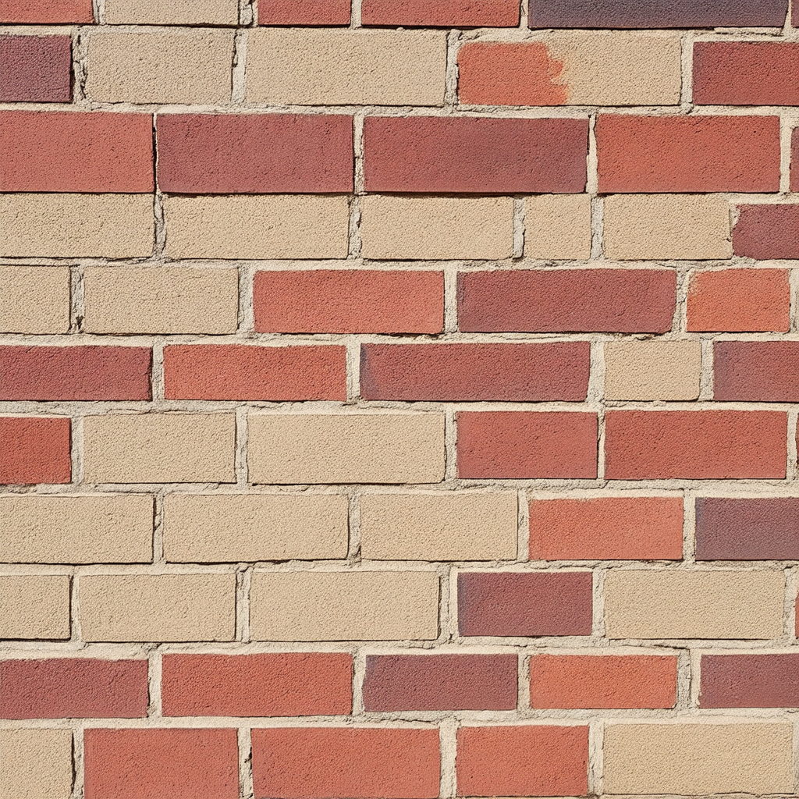 DreamSim Similarity: 0.45
Captioning model: InternVL2-2B | Caption Image Reconstruction The image captures a close-up view of a brick wall, showcasing its texture and color variations. The bricks, predominantly red and brown, are arranged in a staggered pattern, creating a sense of depth and dimension. The mortar, a lighter shade of gray, is visible between the bricks, highlighting the structure of the wall.
The DreamSim Similarity: 0.42
Captioning model: llava-v1.6-mistral-7b-hf | Caption Image Reconstruction The image depicts a close-up view of a brick wall, showcasing a section of the wall's surface in detail. The bricks are primarily red in color, with some variation in hue, ranging from deep red to lighter shades. The bricks are laid in a traditional staggered pattern, which is common in masonry to provide structural stability. The mortar between the bricks appears to be DreamSim Similarity: 0.42
Captioning model: InternVL2-26B | Caption Image Reconstruction The image captures a close-up view of a brick wall, bathed in the soft glow of daylight. The bricks, arranged meticulously in a horizontal pattern, are the stars of this composition. Each brick, unique in its size and color, contributes to the overall texture and depth of the wall.
The bricks themselves are a study in contrasts. Some are a deep, DreamSim Similarity: 0.41
Captioning model: llava-v1.6-34b-hf | Caption Image Reconstruction The image features a brick wall with a mix of red and brown bricks. The wall is made of old bricks, giving it a weathered and aged appearance. The bricks are arranged in a pattern, creating a visually appealing texture. The wall is situated next to a green area, possibly a garden or a park, which adds a contrasting element to the scene DreamSim Similarity: 0.41
Captioning model: llava-1.5-13b-hf | Caption Image Reconstruction a brick wall with a green plant DreamSim Similarity: 0.39
Captioning model: blip2-flan-t5-xxl |
Caption Image Reconstruction The image depicts three individuals standing together in what appears to be an office setting. The background includes a glass partition, a potted plant, and a chair, suggesting a professional environment.
1. **Person on the Left**:
- **Clothing**: This individual is wearing a white button-up shirt and black pants.
- **Accessories**: They are DreamSim Similarity: 0.65
Captioning model: InternVL2-40B | Caption Image Reconstruction The image depicts three individuals standing in an office environment. The background appears to be a modern office setting with a glass partition and a potted plant. The individuals are standing close together, and their faces are blurred for privacy.
- The person on the left is wearing a white blouse with rolled-up sleeves and black pants. They are holding a coffee cup in their right DreamSim Similarity: 0.62
Captioning model: InternVL2-2B | Caption Image Reconstruction The image depicts three individuals standing in an office environment. The setting appears to be a professional office space, characterized by a modern and clean design. The background includes a glass partition, a potted plant, and a window with blinds partially drawn, allowing natural light to filter into the room. The floor is made of light-colored wood, and there is a door visible in the DreamSim Similarity: 0.61
Captioning model: InternVL2-26B | Caption Image Reconstruction The image depicts three individuals standing side by side in what appears to be an office setting. The background includes a glass partition, a potted plant, and a window with blinds partially drawn, suggesting a modern office environment. The individuals are dressed in business attire, indicating a professional context.
1. **Individual on the Left**:
- **Attire**: W DreamSim Similarity: 0.61
Captioning model: InternVL2-8B | Caption Image Reconstruction In the image, a trio of individuals are captured in a moment of camaraderie within an office setting. The person on the left, clad in a crisp white shirt, holds a coffee cup, perhaps taking a break from their work. The individual in the center, donning a black shirt, sports a red bow tie, adding a touch of color to their attire. The person DreamSim Similarity: 0.61
Captioning model: llava-onevision-qwen2-7b-ov-hf | Caption Image Reconstruction three people standing in an office  DreamSim Similarity: 0.60
Captioning model: blip2-flan-t5-xxl | Caption Image Reconstruction The image features three people standing together in a room, with two women and a man. The women are wearing ties, and the man is wearing a suit. They appear to be posing for a picture.
In the room, there are two chairs, one located near the left side of the image and the other near the right side. A potted DreamSim Similarity: 0.58
Captioning model: llava-1.5-7b-hf | Caption Image Reconstruction In the image, there are three individuals standing in an office setting. The person on the left is clad in a white shirt paired with black pants, holding a coffee cup in their hand. The individual in the middle is dressed in a black and white striped shirt, accessorized with a red and white scarf. The person on the right is wearing a black suit, complement DreamSim Similarity: 0.55
Captioning model: llava-v1.6-34b-hf | Caption Image Reconstruction The image features three people standing together in a room, with two of them wearing ties. They appear to be posing for a picture, possibly in a professional setting. The first person is on the left side of the image, the second person is in the middle, and the third person is on the right side.
There are two cups in the scene, 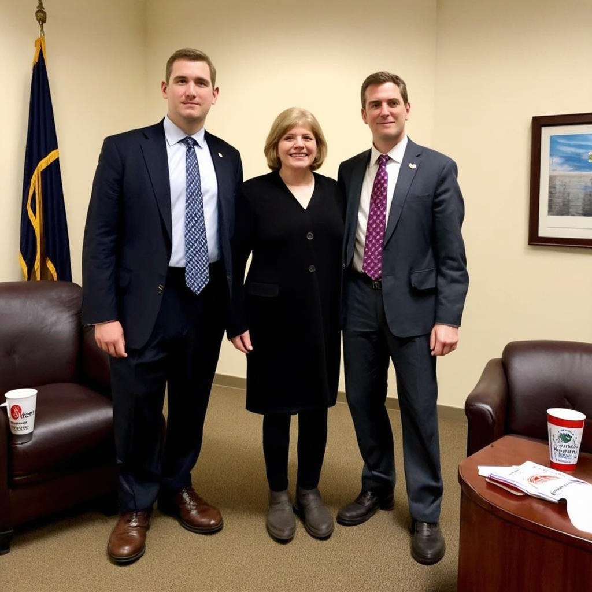 DreamSim Similarity: 0.53
Captioning model: llava-1.5-13b-hf | Caption Image Reconstruction In the image, there are three individuals standing in a room with a large window in the background. The person on the left is wearing a white shirt and black pants, while the person in the middle is wearing a black shirt and black pants. The person on the right is wearing a blue shirt and black pants. The room has a glass wall and a whiteboard on the wall. DreamSim Similarity: 0.52
Captioning model: llava-onevision-qwen2-0.5b-ov-hf | Caption Image Reconstruction In the image, there are three individuals standing in an office setting. The office is characterized by a white wall and a window with blinds.
On the left, a person is holding a cup of coffee, suggesting a casual or relaxed atmosphere. The middle person is wearing a black and white striped shirt, which stands out against the more muted colors of the office DreamSim Similarity: 0.46
Captioning model: llava-v1.6-mistral-7b-hf |
Caption Image Reconstruction The image depicts a chaotic scene at what appears to be a border or checkpoint area. The setting is outdoors, with a clear sky and a backdrop of trees and a fence. The ground is dry and barren, with some sparse vegetation.
In the foreground, there is a group of people, including men, women, and children, who seem to be in a state of DreamSim Similarity: 0.67
Captioning model: InternVL2-40B | Caption Image Reconstruction The image depicts a scene at a border crossing or checkpoint, likely in a desert or arid region. The setting appears to be outdoors, with a clear sky and sparse vegetation in the background. A group of people, many of whom are wearing casual clothing, are gathered in the foreground. Some individuals are walking towards a barbed wire fence, which is part of a security barrier 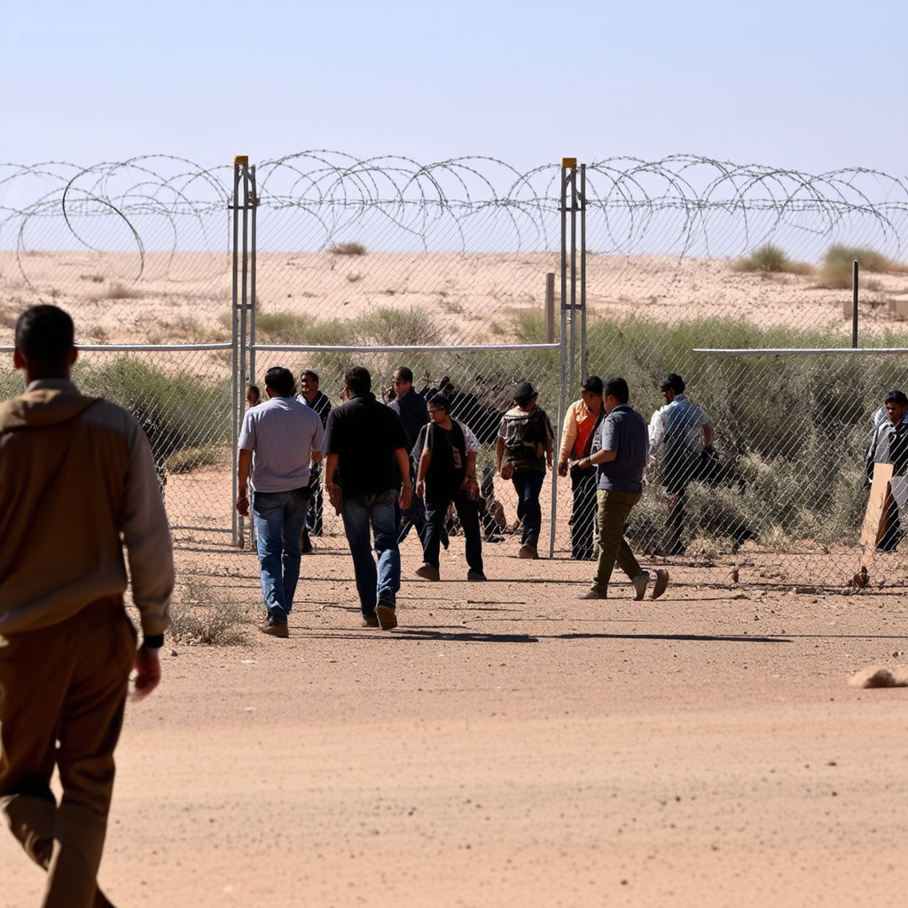 DreamSim Similarity: 0.65
Captioning model: InternVL2-8B | Caption Image Reconstruction The image captures a scene of a group of people gathered in a desert-like environment, surrounded by a fence and barbed wire. The group is composed of individuals wearing various clothing, including a blue jacket, a red shirt, a black jacket, a black hat, and a black shirt. The group is moving in a line, with some members carrying backpacks and carrying a blue mask DreamSim Similarity: 0.64
Captioning model: llava-onevision-qwen2-0.5b-ov-hf | Caption Image Reconstruction The image depicts a scene of a large group of people gathered in a desert-like environment. The individuals appear to be in motion, with some running towards the camera and others moving away. The crowd is diverse, with people of various ages and attire, suggesting a spontaneous gathering or event.
In the background, there is a large military vehicle, which is a prominent feature of DreamSim Similarity: 0.60
Captioning model: llava-v1.6-34b-hf | Caption Image Reconstruction The image captures a tense scene at the border between Israel and Gaza. A group of people, some of whom are wearing masks, are seen running towards a large military vehicle. The vehicle, a beige-colored armored personnel carrier, is equipped with a mounted gun on top, indicating its readiness for defense. The border is marked by a barbed wire fence, a common sight in such conflict DreamSim Similarity: 0.53
Captioning model: llava-onevision-qwen2-7b-ov-hf | Caption Image Reconstruction The image depicts a scene of a group of people, predominantly men, gathered around a military armored vehicle. The setting appears to be a barbed wire fence, suggesting a border or security checkpoint. The individuals are dressed in casual clothing, with some wearing hoodies and jackets, indicating a mix of casual and possibly refugee or migrant groups. The background features a military armored vehicle  DreamSim Similarity: 0.51
Captioning model: InternVL2-2B | Caption Image Reconstruction The image depicts a large group of people gathered around a military vehicle, possibly a tank or a truck. The crowd is composed of various individuals, some of whom are standing closer to the vehicle, while others are further away. The people appear to be engaged in a conversation or interacting with the military personnel.
The scene takes place in a field, with the DreamSim Similarity: 0.45
Captioning model: llava-1.5-13b-hf | Caption Image Reconstruction The image depicts a group of people gathered around a military vehicle, possibly a tank, in a desert-like setting. The people are standing close to the vehicle, with some of them appearing to be engaged in a heated discussion. The scene seems to be a mix of a protest or a gathering of people who are interested in the military vehicle.
There are DreamSim Similarity: 0.45
Captioning model: llava-1.5-7b-hf | Caption Image Reconstruction a group of people walking near a fence DreamSim Similarity: 0.44
Captioning model: blip2-flan-t5-xxl | Caption Image Reconstruction The image captures a scene of a military operation in a desert-like environment. In the foreground, a group of civilians, dressed in casual clothing, are seen walking away from the camera. They appear to be moving towards a large military vehicle, which is parked on a dirt road. The vehicle is a beige-colored armored personnel carrier (APC), equipped DreamSim Similarity: 0.40
Captioning model: llava-v1.6-mistral-7b-hf | Caption Image Reconstruction The image depicts a tense and chaotic scene at what appears to be a border or checkpoint. The setting is outdoors, with a clear sky and a line of trees in the background. The ground is sandy and barren, with sparse vegetation. A large, heavily armored military vehicle, possibly an armored personnel carrier, is stationed behind a barbed wire fence. The DreamSim Similarity: 0.34
Captioning model: InternVL2-26B |
Caption Image Reconstruction The image depicts a grand and historic building, likely a church or cathedral, characterized by its impressive architectural features. The structure is predominantly made of stone, with a mix of light and dark hues, giving it a robust and enduring appearance. The building has a large, central tower with a clock face, which is a prominent feature. The clock face is round and situated within 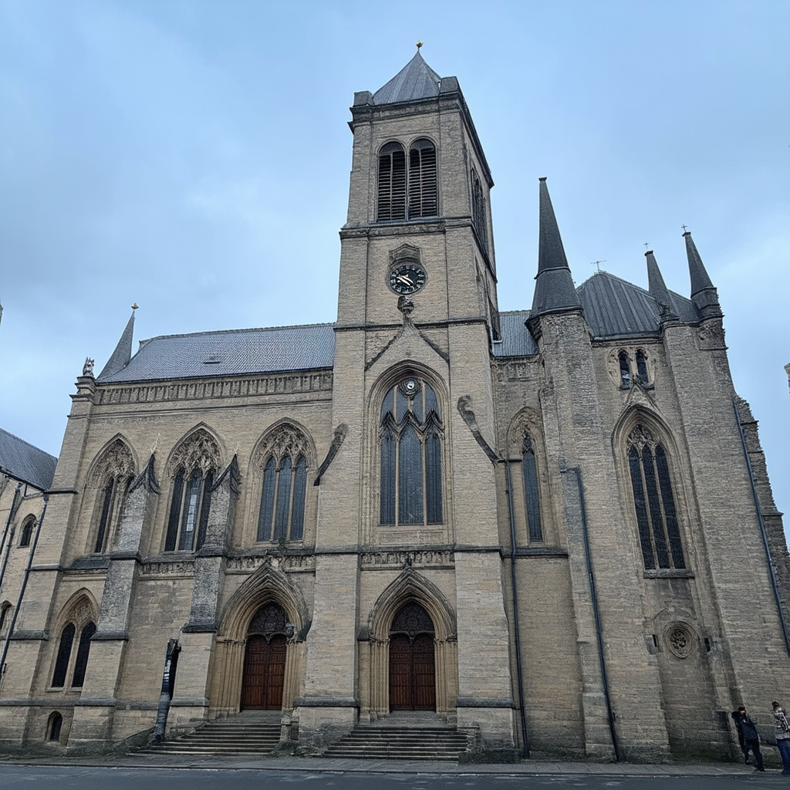 DreamSim Similarity: 0.67
Captioning model: InternVL2-8B | Caption Image Reconstruction The image features a large, old building with a clock tower, likely a church, situated in a town square. The building is made of stone and has a distinctive clock on its side. A group of people is gathered in front of the building, possibly admiring its architecture or attending an event.
There are at least 13 people visible in the scene, DreamSim Similarity: 0.67
Captioning model: llava-1.5-13b-hf | Caption Image Reconstruction The image depicts a grand historical building, likely a cathedral or church, characterized by its impressive architectural design and intricate details. The structure is made of light-colored stone, giving it a majestic and timeless appearance. The building features two prominent towers, one of which is significantly taller than the other, both adorned with decorative elements and topped with spires. The taller tower has DreamSim Similarity: 0.63
Captioning model: InternVL2-40B | Caption Image Reconstruction The image captures the grandeur of the S Cathedral in Lisbon, Portugal. The cathedral, a magnificent example of Gothic architecture, stands tall against the backdrop of a cloudy sky. The cathedral's facade is a striking contrast of white and gray, with intricate details that speak volumes about the craftsmanship of the era. The cathedral's two towers, DreamSim Similarity: 0.63
Captioning model: llava-v1.6-34b-hf | Caption Image Reconstruction The image depicts a historic church or cathedral with a prominent bell tower and a large, ornate facade. The building is constructed primarily of stone and features a mix of architectural styles, including elements of Gothic and Baroque architecture. The facade is characterized by its intricate detailing, including arched windows, decorative stonework, and a large rose window. The bell tower is tall DreamSim Similarity: 0.60
Captioning model: InternVL2-2B | Caption Image Reconstruction The image features a large, old building with a clock tower, which appears to be a church. The building is surrounded by a group of people, some of whom are standing in front of the church, while others are walking around the area. There are at least 12 people visible in the scene, with some closer to the foreground and others further back.
In DreamSim Similarity: 0.58
Captioning model: llava-1.5-7b-hf | Caption Image Reconstruction The image depicts a large, historic building that appears to be a church or cathedral, characterized by its grand architectural features and significant historical significance. The structure is made primarily of stone, with a combination of light and dark stone blocks, giving it a robust and enduring appearance. The building has two prominent towers, each adorned with intricate detailing and topped with domes. The towers DreamSim Similarity: 0.57
Captioning model: InternVL2-26B | Caption Image Reconstruction The image captures the majestic Porto de Mafra Cathedral, a renowned landmark located in Porto, Portugal. The cathedral, a magnificent example of Gothic architecture, stands tall with its tall, imposing structure of light-colored stone. The cathedral's white walls and red-tiled roof are a striking contrast against the clear blue sky. The perspective of the image is from a low angle, giving a DreamSim Similarity: 0.56
Captioning model: llava-onevision-qwen2-0.5b-ov-hf | Caption Image Reconstruction a large church with people walking around it DreamSim Similarity: 0.56
Captioning model: blip2-flan-t5-xxl | Caption Image Reconstruction The image captures a serene scene of a historic building, bathed in the soft glow of daylight. The building, constructed from stone, stands majestically with its white facade and a contrasting red roof. The architectural style is reminiscent of Gothic and Baroque elements, with pointed arches and intricate details adorning the structure DreamSim Similarity: 0.53
Captioning model: llava-v1.6-mistral-7b-hf | Caption Image Reconstruction The image captures the grandeur of the Porto Cathedral, a renowned landmark in Porto, Portugal. The cathedral, a magnificent structure built from stone, stands tall with its two bell towers reaching towards the sky. The facade of the cathedral is adorned with a rose window, a common feature in Gothic architecture. The photograph is taken from a low angle, which emphasizes the cathedral's towering presence and DreamSim Similarity: 0.52
Captioning model: llava-onevision-qwen2-7b-ov-hf |
Caption Image Reconstruction The image depicts a vibrant and lively scene at a waterfront area, likely a marina or harbor, under a clear blue sky with the sun shining brightly. The sun casts long shadows, indicating that the photo was taken either in the early morning or late afternoon. The foreground features a paved area with a group of people, some of whom are walking and others sitting or DreamSim Similarity: 0.74
Captioning model: InternVL2-26B | Caption Image Reconstruction The image captures a serene scene at a harbor. The sky, painted in a soothing shade of blue, is dotted with a few clouds. The sun, located in the top right corner of the image, is shining brightly, casting a warm glow on the scene.
In the foreground, a group of people are enjoying their time. Some are standing, while others are DreamSim Similarity: 0.65
Captioning model: llava-v1.6-34b-hf | Caption Image Reconstruction The image depicts a bustling harbor scene under a clear blue sky with the sun shining brightly. The foreground shows a group of people sitting and standing along a stone wall, casting long shadows on the ground. The people appear to be enjoying the view of the harbor, with some engaged in conversation and others simply observing the surroundings.
In the middle ground, there are several DreamSim Similarity: 0.60
Captioning model: InternVL2-40B | Caption Image Reconstruction The image depicts a bustling harbor scene with several people walking along a pier or promenade. The setting appears to be a coastal area, likely a harbor or marina, given the presence of numerous boats and cranes in the background. The sky is clear and blue, indicating a sunny day with good weather. The sunlight is bright, casting long shadows on the ground, DreamSim Similarity: 0.60
Captioning model: InternVL2-2B | Caption Image Reconstruction The image depicts a bustling waterfront scene, likely taken during the daytime under a clear, sunny sky. The foreground shows a group of people walking along a paved walkway, with their shadows cast on the ground, indicating the sun is high in the sky. The walkway is bordered by a low wall, and there are several individuals engaged in various activities. Some DreamSim Similarity: 0.58
Captioning model: InternVL2-8B | Caption Image Reconstruction The image captures a vibrant scene at a bustling harbor. The sun casts its bright rays over the deep blue water, illuminating the large cargo ships and boats that dot the harbor. The sky above is a clear, light blue, adding to the serene atmosphere.
On the right side of the image, a group of people are enjoying the view. Some are comfortably seated on a bench, DreamSim Similarity: 0.55
Captioning model: llava-onevision-qwen2-7b-ov-hf | Caption Image Reconstruction a harbor with people walking around DreamSim Similarity: 0.53
Captioning model: blip2-flan-t5-xxl | Caption Image Reconstruction The image depicts a lively scene at a marina, with a group of people walking along a boardwalk near the water. There are at least 13 people visible in the scene, some of them carrying handbags. The boardwalk is bustling with activity, as people enjoy the view of the boats and the water.
Numerous boats DreamSim Similarity: 0.52
Captioning model: llava-1.5-13b-hf | Caption Image Reconstruction The image depicts a lively scene at a harbor with a group of people walking along a pier. There are at least 13 people visible in the scene, some of them carrying handbags. The people are spread out along the pier, with some closer to the water and others further back.
In the background, there are numerous boats of various sizes DreamSim Similarity: 0.51
Captioning model: llava-1.5-7b-hf | Caption Image Reconstruction The image captures a lively scene at a marina. The marina is bustling with activity, with several boats of various sizes docked in the background. The boats are moored in a row, their hulls gleaming under the sunlight.
On the pier, a group of people are enjoying the view. They are casually dressed, some carrying hand DreamSim Similarity: 0.48
Captioning model: llava-v1.6-mistral-7b-hf | Caption Image Reconstruction The image captures a bustling harbor scene at the Port of San Juan, a bustling port in Puerto Rico. The harbor is filled with a variety of boats, including a large cargo ship and several smaller vessels. The sky above is a clear blue, and the sun is shining brightly, casting long shadows on the harbor floor. The water is a deep blue, reflecting the sunlight and adding to 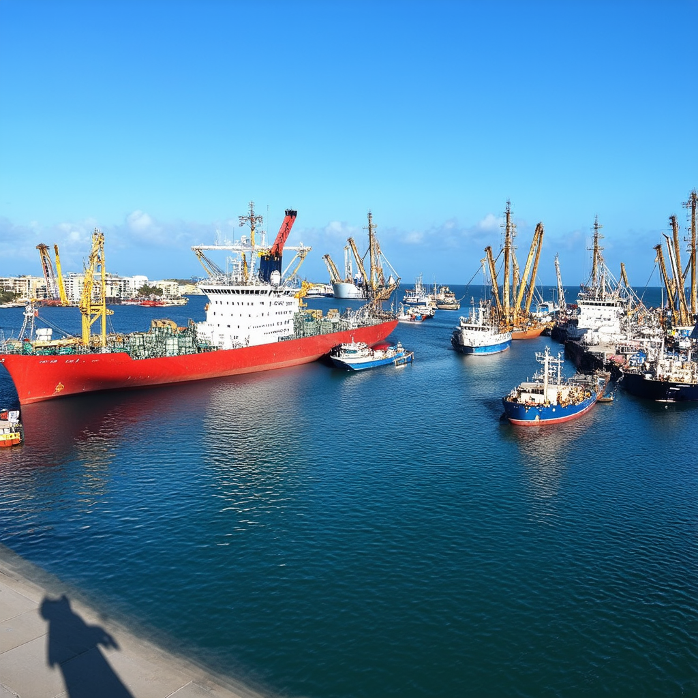 DreamSim Similarity: 0.37
Captioning model: llava-onevision-qwen2-0.5b-ov-hf |
Caption Image Reconstruction The image depicts a winter scene with a significant amount of snow covering the branches of a tree and other vegetation. The tree branches are bare, indicating that it is likely late fall or winter, and they are heavily laden with snow, creating a picturesque and serene winter landscape. The snow appears to be freshly fallen, as it is thickly settled on the branches and the ground. DreamSim Similarity: 0.64
Captioning model: InternVL2-40B | Caption Image Reconstruction The image depicts a wintry scene with a dense collection of snow-covered branches and foliage. The branches are heavily laden with snow, creating a thick layer of white, almost white, covering the ground and the surrounding area. The branches appear to be bare, with no leaves, indicating that the season is winter. The ground is also covered in snow, with some DreamSim Similarity: 0.64
Captioning model: InternVL2-2B | Caption Image Reconstruction The image features a snow-covered hillside with a variety of trees and bushes. The trees are covered in snow, and some of them have branches that are bare. The snow-covered hillside is surrounded by a forest, creating a picturesque winter scene. The snow-covered branches and trees are scattered throughout the image, adding to the overall beauty of the DreamSim Similarity: 0.62
Captioning model: llava-1.5-7b-hf | Caption Image Reconstruction The image depicts a winter scene with a heavy snowfall. The scene is dominated by a large, leafless tree heavily laden with snow. The branches of the tree are thickly covered with snow, creating a stark contrast against the dark, bare twigs. The snow appears to be freshly fallen, as it clings to the branches and twigs, giving the tree a DreamSim Similarity: 0.60
Captioning model: InternVL2-8B | Caption Image Reconstruction The image captures a serene winter scene. The main focus is a tree, its branches reaching out in various directions. The tree is adorned with a thick layer of snow, giving it a white, frosted appearance. The snow on the branches is not uniform; it appears to have been gently blown by the wind, creating a textured look.
The tree is situated DreamSim Similarity: 0.58
Captioning model: llava-v1.6-34b-hf | Caption Image Reconstruction The image captures a serene winter scene. A tree, its branches heavy with snow, stands in the foreground. The snow, pure and white, clings to the branches, creating a beautiful contrast against the tree's dark silhouette. The tree is positioned on the left side of the image, its branches reaching out towards the right, as if trying to touch the sky.
In the background DreamSim Similarity: 0.56
Captioning model: llava-onevision-qwen2-7b-ov-hf | Caption Image Reconstruction The image depicts a winter scene characterized by a thick layer of snow covering various elements in the frame. The primary focus is on a dense tangle of bare branches, which are heavily laden with snow. These branches are intertwined and spread out across the image, creating a complex network of white and brown lines against the backdrop. The snow appears to be freshly fallen, as DreamSim Similarity: 0.56
Captioning model: InternVL2-26B | Caption Image Reconstruction The image features a snow-covered tree with a thick layer of snow on its branches. The tree is surrounded by a snowy landscape, and the snow appears to be melting off the tree, creating a beautiful and serene scene. The tree is situated in front of a building, which is also covered in snow. The overall atmosphere of the image is peaceful and pictures DreamSim Similarity: 0.47
Captioning model: llava-1.5-13b-hf | Caption Image Reconstruction The image captures a serene winter scene in a forest. The dominant feature is a large tree, its branches heavy with fresh snow, creating a beautiful contrast against the clear blue sky. The tree is situated in the center of the image, its branches reaching out in all directions, as if reaching out to the sky. The snow on the branches is pristine white, untouched and pristine, reflecting 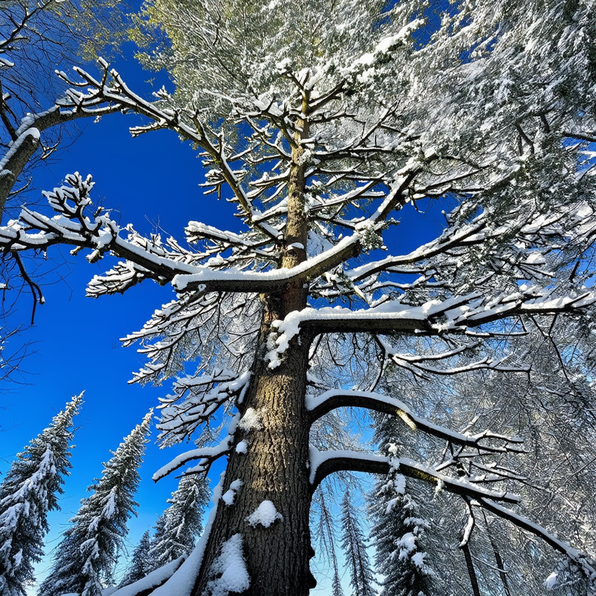 DreamSim Similarity: 0.46
Captioning model: llava-onevision-qwen2-0.5b-ov-hf | Caption Image Reconstruction The image captures a serene winter scene. Dominating the foreground is a large, dark brown tree trunk, its surface adorned with a layer of snow. The tree trunk, standing tall and firm, serves as a stark contrast to the delicate beauty of the snow-covered branches that extend from it. These branches, heavy with snow, are intertwined in a DreamSim Similarity: 0.43
Captioning model: llava-v1.6-mistral-7b-hf | Caption Image Reconstruction DreamSim Similarity: 0.40
Captioning model: blip2-flan-t5-xxl |
Caption Image Reconstruction The image depicts a picturesque street scene in a European city, likely in a historic or culturally rich area. The street is paved with cobblestones and lined with cobblestone buildings that exhibit a mix of architectural styles, characterized by ornate facades and traditional European design elements. The buildings are painted in a variety of colors, including yellow, white, and orange DreamSim Similarity: 0.72
Captioning model: InternVL2-2B | Caption Image Reconstruction The image captures a vibrant scene from a European city. The street, paved with cobblestones, is bustling with life. On either side of the street, there are buildings painted in a variety of colors, including shades of yellow, orange, and white. These buildings, with their ornate facades, add a touch of elegance to the scene.
On the right side of the  DreamSim Similarity: 0.68
Captioning model: llava-onevision-qwen2-7b-ov-hf | Caption Image Reconstruction The image depicts a picturesque street scene in what appears to be a European city, likely in a historic or tourist area. The street is paved with cobblestones, adding a charming, old-world feel to the setting. The buildings lining the street are multi-story, with a mix of architectural styles, including Baroque and Renaissance elements. The facades are adorned with DreamSim Similarity: 0.68
Captioning model: InternVL2-8B | Caption Image Reconstruction The image captures a vibrant street scene in a European city. The street, made of cobblestones, is lined with buildings painted in a variety of colors, including yellow, orange, and white. These buildings, with their ornate facades and shuttered windows, add a touch of historical charm to the scene.
On the right side of the street, there are DreamSim Similarity: 0.67
Captioning model: llava-v1.6-34b-hf | Caption Image Reconstruction The image depicts a picturesque street scene in what appears to be a European city, likely in a historic or old town area. The street is paved with cobblestones, adding to the quaint and charming atmosphere. The buildings lining the street are multi-story structures with a mix of architectural styles, showcasing a blend of historical and modern elements. The buildings are primarily in DreamSim Similarity: 0.67
Captioning model: InternVL2-26B | Caption Image Reconstruction The image captures a bustling street scene in a European city, where the cobblestone street is lined with a variety of buildings. The buildings, painted in a palette of warm hues, are adorned with ornate facades and balconies, adding a touch of elegance to the scene. The street is bustling with activity, with people strolling along the sidewalks, engaged in their daily routines DreamSim Similarity: 0.65
Captioning model: llava-onevision-qwen2-0.5b-ov-hf | Caption Image Reconstruction The image depicts a charming street scene in what appears to be a European city, likely in a historic district. The street is paved with cobblestones, adding to the old-world charm of the setting. On the right side of the image, there is a row of buildings with distinct architectural features. The buildings are multi-storied, with facades painted in various DreamSim Similarity: 0.65
Captioning model: InternVL2-40B | Caption Image Reconstruction The image captures a vibrant street scene in a European city. The street, paved with cobblestones, is lined with buildings painted in a variety of colors, including shades of yellow, orange, and white. These buildings, adorned with ornate details and balconies, add a touch of historical charm to the scene.
On the right side 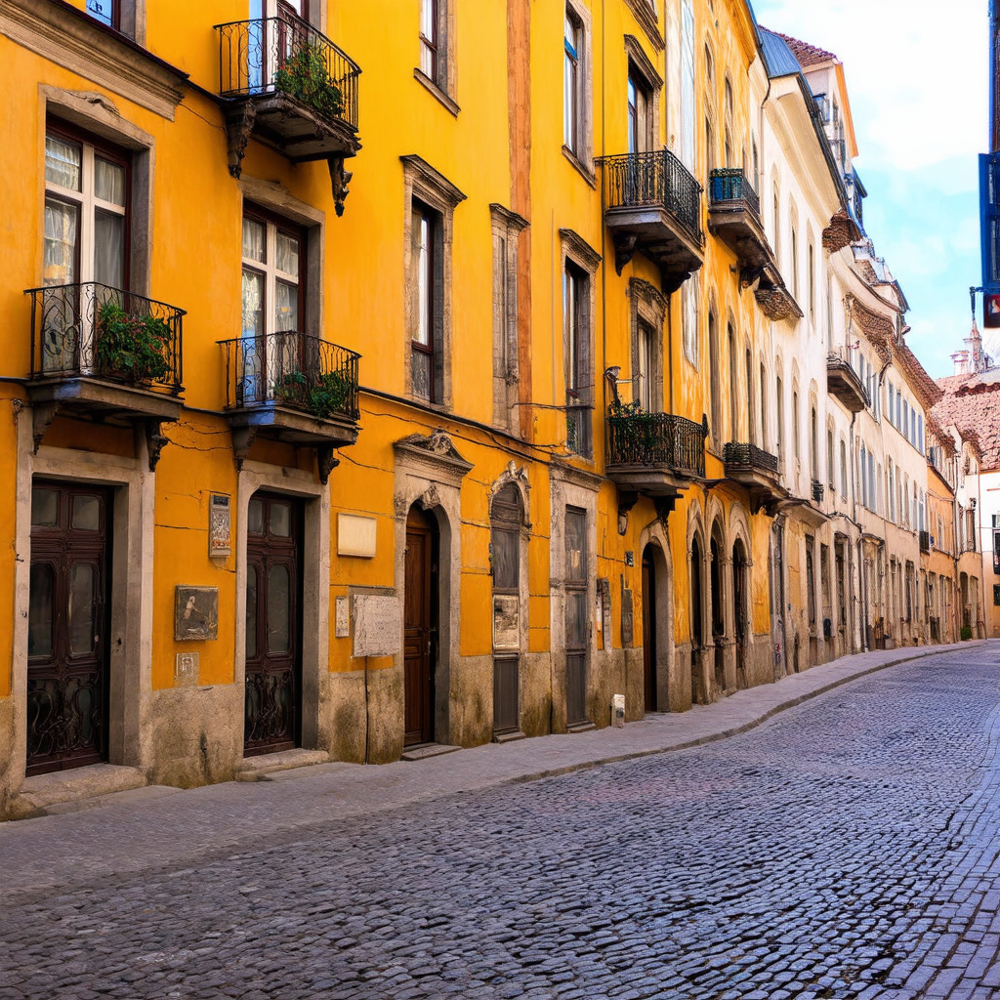 DreamSim Similarity: 0.63
Captioning model: llava-v1.6-mistral-7b-hf | Caption Image Reconstruction The image depicts a lively city street with a row of outdoor cafes and shops. The street is lined with numerous umbrella-covered tables and chairs, providing a comfortable outdoor seating area for visitors. People can be seen walking around and enjoying the atmosphere.
There are several potted plants placed along the street, DreamSim Similarity: 0.60
Captioning model: llava-1.5-7b-hf | Caption Image Reconstruction The image depicts a lively city street with a row of buildings on one side and a row of tables and chairs on the other side. The tables and chairs are arranged in a line, creating an inviting atmosphere for people to sit and enjoy the urban surroundings.
There are several people walking along the street, some of them carrying handbags DreamSim Similarity: 0.56
Captioning model: llava-1.5-13b-hf | Caption Image Reconstruction DreamSim Similarity: 0.45
Captioning model: blip2-flan-t5-xxl |
Caption Image Reconstruction The image features a large wooden wheel, possibly a part of a cannon, situated on a grassy hillside. The wheel is positioned on a dirt path, and there are two benches nearby, one on the left side and the other on the right side of the wheel. The scene also includes a few trees scattered around the area, adding to the natural setting. DreamSim Similarity: 0.58
Captioning model: llava-1.5-13b-hf | Caption Image Reconstruction The image depicts a serene and picturesque landscape featuring a large, grassy hill with a prominent cannon positioned on the right side. The cannon is black with gold lettering on its side, which appears to be in a foreign script, possibly Thai. The cannon is mounted on a wooden carriage and is positioned on a dirt path that leads up the hill. The grassy hill  DreamSim Similarity: 0.57
Captioning model: InternVL2-8B | Caption Image Reconstruction The image features a large, grassy hill with a wooden sign prominently displayed on the side. The sign is positioned in front of a large, old-fashioned wagon wheel, which adds a rustic touch to the scene. The hill is situated next to a forest, creating a serene and picturesque setting. DreamSim Similarity: 0.56
Captioning model: llava-1.5-7b-hf | Caption Image Reconstruction The image captures a serene scene atop a hill. Dominating the foreground is a large wooden wagon wheel, its rich brown hues contrasting with the vibrant green of the grass beneath it. The wheel is not alone; it's accompanied by two wooden stumps, standing like silent sentinels on either side.
The hill itself is a lush expanse of green DreamSim Similarity: 0.55
Captioning model: llava-v1.6-34b-hf | Caption Image Reconstruction The image captures a serene scene of a grassy hill under a clear blue sky. Dominating the foreground is a large wooden wheel, its dark brown hue contrasting with the lighter green of the grass. The wheel, with its intricate carvings, is positioned on the right side of the image, facing towards the left.
In the background, DreamSim Similarity: 0.53
Captioning model: llava-v1.6-mistral-7b-hf | Caption Image Reconstruction The image depicts a scenic outdoor landscape with a clear blue sky and a few scattered clouds. In the foreground, there is a large, ornate wooden cart with large, intricately designed wheels. The cart is positioned on a dirt path and has text written on its side in a script that appears to be Thai. The text includes a phone number and some additional information. The cart is  DreamSim Similarity: 0.52
Captioning model: InternVL2-40B | Caption Image Reconstruction The image depicts a picturesque landscape featuring a large cannon positioned on a grassy hill. The cannon is prominently placed on the right side of the image, with its barrel extending into the distance. The cannon is made of dark wood, with a large, ornate golden inscription on its side. The inscription appears to be in Thai script, which reads " DreamSim Similarity: 0.45
Captioning model: InternVL2-2B | Caption Image Reconstruction The image depicts a scenic landscape featuring a large, wooden cannon positioned prominently in the foreground. The cannon is painted in a dark color, possibly brown or black, with golden-yellow text and symbols inscribed on its side. The text appears to be in Thai script, suggesting that the location might be in Thailand. The cannon is situated on a grassy hillside, with DreamSim Similarity: 0.44
Captioning model: InternVL2-26B | Caption Image Reconstruction a cannon on top of a hill DreamSim Similarity: 0.44
Captioning model: blip2-flan-t5-xxl | Caption Image Reconstruction The image captures a serene and majestic view of a rocky hillside, where the lush greenery of a large, imposing rock formation stands as a testament to the enduring beauty of nature. The hillside is dotted with trees and shrubs, their leaves a vibrant green, suggesting a healthy and thriving ecosystem. The sky above is a clear blue, with a few wispy clouds scattered across DreamSim Similarity: 0.35
Captioning model: llava-onevision-qwen2-0.5b-ov-hf | Caption Image Reconstruction The image captures the majestic view of the Doi Inthanon peak in Thailand. The vantage point is high on the mountain, offering a panoramic view of the peak and the surrounding landscape. The sky above is a clear blue, dotted with fluffy white clouds. The mountain itself is a lush green, covered in a dense blanket of trees and shrubs.
In the foreground, DreamSim Similarity: 0.32
Captioning model: llava-onevision-qwen2-7b-ov-hf |
Caption Image Reconstruction The image captures a bustling street scene in a city, where the main focus is a row of white buildings. The buildings, painted in a pristine white, are adorned with ornate arches and balconies, adding a touch of elegance to the urban landscape. The street is lined with parked cars, including a silver hatchback, a black SUV, and a white hatchback, all DreamSim Similarity: 0.72
Captioning model: llava-onevision-qwen2-0.5b-ov-hf | Caption Image Reconstruction The image depicts a street scene in what appears to be a city with a blend of modern and traditional architectural elements. The buildings lining the street are primarily white, with a mix of modern and classical design features. The buildings are multi-storied, with the facades featuring arched windows and balconies, some of which are adorned with decorative elements. The street is bust DreamSim Similarity: 0.71
Captioning model: InternVL2-26B | Caption Image Reconstruction The image depicts a street scene in what appears to be a city with a Mediterranean or North African architectural style. The buildings are primarily white with ornate details and arched windows and doorways. The street is lined with cars parked along the side, and there are several pedestrians walking. The buildings have multiple stories, with shops and businesses on the ground floor.
One of the DreamSim Similarity: 0.67
Captioning model: InternVL2-40B | Caption Image Reconstruction The image depicts a street scene in a bustling urban area, likely in a Middle Eastern or North African city. The architecture is characterized by a series of multi-story buildings with a distinct architectural style that includes arched doorways and windows, which are common in traditional Islamic architecture. The buildings are painted in a light cream or off-white color, with some featuring decorative elements such as DreamSim Similarity: 0.63
Captioning model: InternVL2-8B | Caption Image Reconstruction The image captures a lively street scene in a European city. The street is lined with white buildings, their balconies adorned with colorful flowers and plants, adding a touch of nature to the urban landscape. The buildings, with their arched doorways and ornate details, exude an air of historical charm.
On the right side of the street, a white building stands DreamSim Similarity: 0.62
Captioning model: llava-v1.6-34b-hf | Caption Image Reconstruction The image captures a bustling street scene in Fez, Morocco. The street, lined with white buildings, is a hive of activity with cars parked along the sides and pedestrians strolling on the sidewalks. The buildings, adorned with arched doorways and balconies, add a touch of architectural charm to the scene. Shops and restaurants occupy the ground floors of these buildings, inviting passers DreamSim Similarity: 0.60
Captioning model: llava-onevision-qwen2-7b-ov-hf | Caption Image Reconstruction The image depicts a street scene in what appears to be a Mediterranean or Middle Eastern city. The architecture of the buildings is predominantly white, with a mix of modern and traditional elements. The buildings are multi-storied, featuring arched doorways and balconies, which are characteristic of Mediterranean architecture. The facades are adorned with decorative elements such as wrought iron railings DreamSim Similarity: 0.59
Captioning model: InternVL2-2B | Caption Image Reconstruction The image captures a vibrant street scene in a European city. The street is lined with white buildings, their facades adorned with balconies and arches, adding a touch of architectural charm to the scene. The buildings are connected by a series of power lines that crisscross above the street, providing a stark contrast to the clear blue sky.
The DreamSim Similarity: 0.53
Captioning model: llava-v1.6-mistral-7b-hf | Caption Image Reconstruction The image depicts a busy city street with a row of white buildings on one side. The street is filled with various vehicles, including cars and motorcycles. There are at least four cars parked or driving along the street, and two motorcycles can be seen as well.
Numerous people are walking along the sidewalk, with at least nine individuals DreamSim Similarity: 0.50
Captioning model: llava-1.5-13b-hf | Caption Image Reconstruction a street with many cars and buildings DreamSim Similarity: 0.45
Captioning model: blip2-flan-t5-xxl | Caption Image Reconstruction The image depicts a busy city street with a mix of cars, motorcycles, and pedestrians. There are several cars parked or driving along the street, with one car in the foreground and another car further back. A motorcycle is also visible on the street.
Numerous people can be seen walking along the sidewalk, with some DreamSim Similarity: 0.36
Captioning model: llava-1.5-7b-hf |
Caption Image Reconstruction The image depicts a cityscape featuring a mix of modern and traditional architecture along a waterfront. The skyline is dominated by several high-rise buildings, including a prominent skyscraper with a distinctive curved design on the left side. This building has a sleek, glass facade and appears to be a modern office or residential tower. Adjacent to it, there is a DreamSim Similarity: 0.69
Captioning model: InternVL2-8B | Caption Image Reconstruction a city with tall buildings DreamSim Similarity: 0.65
Captioning model: blip2-flan-t5-xxl | Caption Image Reconstruction The image captures a vibrant cityscape, dominated by a collection of modern skyscrapers. The sky, painted in hues of gray, serves as a backdrop to the architectural marvels below.
In the foreground, a river meanders its way through the city, with a bridge stretching across it. The bridge, a testament DreamSim Similarity: 0.65
Captioning model: llava-v1.6-mistral-7b-hf | Caption Image Reconstruction The image depicts a cityscape with a mix of modern and traditional buildings, showcasing a blend of architectural styles. The foreground features a body of water, likely a river or bay, with a pier or walkway extending into the water. The waterway is lined with a series of buildings, including a prominent skyscraper with a distinctive, curved, glass facade. This DreamSim Similarity: 0.63
Captioning model: InternVL2-2B | Caption Image Reconstruction The image captures a bustling cityscape, viewed from a high vantage point. Dominating the scene are several towering skyscrapers, their glass facades reflecting the overcast sky. The buildings vary in height and design, creating a dynamic and modern skyline.
In the foreground, a river meanders through the city, its calm waters contrasting DreamSim Similarity: 0.62
Captioning model: llava-v1.6-34b-hf | Caption Image Reconstruction The image captures a breathtaking view of the Hanoi skyline, as seen from the tranquil waters of the Red River. The cityscape is dominated by three towering structures, each with its own unique architectural style.
On the left, the Lotte Markham Tower stands tall, its facade a blend of glass and steel that reflects the overcast sky. In the center, the Lotte DreamSim Similarity: 0.62
Captioning model: llava-onevision-qwen2-7b-ov-hf | Caption Image Reconstruction The image depicts a cityscape with a mix of modern and older buildings along a waterfront. The skyline is dominated by several high-rise buildings, including a distinctive, curved skyscraper with a glass facade that stands out prominently in the center. To the left of this skyscraper is a tall, rectangular building with a grid-like facade, and to DreamSim Similarity: 0.59
Captioning model: InternVL2-40B | Caption Image Reconstruction The image is a black and white photograph of a city skyline featuring a mix of tall buildings and skyscrapers. The buildings are positioned in various orientations, creating a dynamic and visually interesting scene.
In the foreground, there are several cars parked or driving along the street, adding to the urban atmosphere. The combination of the city skyline 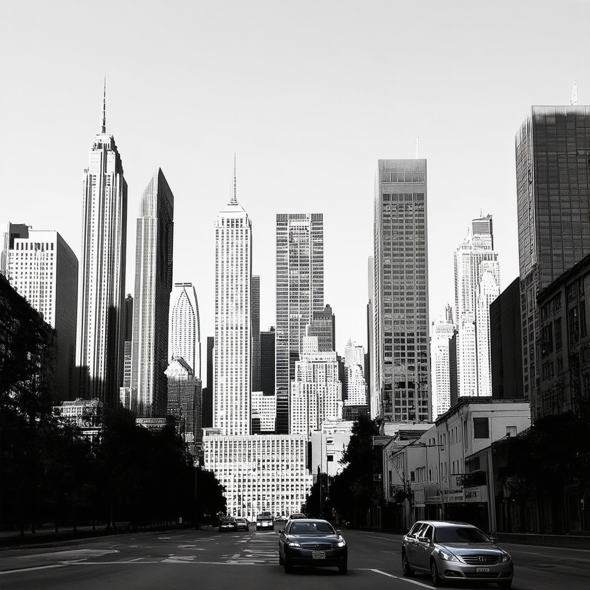 DreamSim Similarity: 0.58
Captioning model: llava-1.5-13b-hf | Caption Image Reconstruction The image captures a breathtaking view of the Marina Bay Sands in Singapore, a renowned worldwide landmark. The vantage point is from the water, providing a panoramic view of the city's skyline. The cityscape is dominated by the iconic Marina Bay Sands hotel, a towering structure with a unique curved glass facade that reflects the overcast sky. The hotel's modern design is a testament to contemporary DreamSim Similarity: 0.51
Captioning model: llava-onevision-qwen2-0.5b-ov-hf | Caption Image Reconstruction The image is a black and white photo of a city skyline, featuring a large building with a distinctive pointed roof. The cityscape is filled with various buildings, including a large skyscraper in the foreground.
There are several cars visible in the scene, with some parked and others driving through the city. The cars are scattered throughout the image, DreamSim Similarity: 0.47
Captioning model: llava-1.5-7b-hf | Caption Image Reconstruction The image depicts a modern urban landscape featuring a mix of architectural styles and elements. The scene is dominated by several high-rise buildings, which are indicative of a bustling city environment. The skyline is characterized by a variety of structures, including a prominent, sleek, glass-clad skyscraper that stands out due to its unique, curved design. This building is DreamSim Similarity: 0.47
Captioning model: InternVL2-26B |
Caption Image Reconstruction The image depicts two individuals, both of whom have their faces blurred for privacy. They are wearing red devil horns headbands, which are a common accessory for Halloween or costume parties. The horns are black with red tips, and the headbands are black. The person on the left has long, straight, brown hair, and the person on the right has long, wavy DreamSim Similarity: 0.68
Captioning model: InternVL2-26B | Caption Image Reconstruction two women wearing devil horns DreamSim Similarity: 0.67
Captioning model: blip2-flan-t5-xxl | Caption Image Reconstruction The image shows two individuals with their faces blurred, making it difficult to identify them. Both are wearing devil horns, which are red in color and have a black base. The horns are shaped like traditional devil horns, with a curved, pointed design. The person on the left has long, straight brown hair, while the person on the right has long, wavy brown hair. DreamSim Similarity: 0.62
Captioning model: InternVL2-8B | Caption Image Reconstruction The image shows two individuals with their faces blurred, making it difficult to identify them. Both are wearing red devil horns on their heads, which are attached to black headbands. The horns are curved and have a glossy appearance. The person on the right has a red mark on their cheek, resembling a small cut or smudge. They are also wearing a gold chain bracelet on their wrist DreamSim Similarity: 0.62
Captioning model: InternVL2-40B | Caption Image Reconstruction The image features two women wearing devil horns, likely as part of a costume or a themed event. They are standing close to each other, posing for the camera. The women are wearing red and black outfits, which complement their devil horns.
In the background, there is a chair positioned near the right side of the image. DreamSim Similarity: 0.61
Captioning model: llava-1.5-7b-hf | Caption Image Reconstruction The image shows two individuals wearing devil horns on their heads. The horns are red and appear to be made of a material that looks like plastic or rubber. The person on the left has long, straight, light brown hair and is wearing a black top. The person on the right has long, wavy brown hair and is wearing a black top as well. Both individuals have their faces DreamSim Similarity: 0.60
Captioning model: InternVL2-2B | Caption Image Reconstruction In the image, there are two individuals who appear to be in a festive or celebratory mood. They are both wearing red devil horns, which are a common accessory for parties or events with a devil or Halloween theme. The horns are prominent in the image, with one set positioned slightly higher than the other, suggesting that the individuals might be standing at different heights or angles.
DreamSim Similarity: 0.59
Captioning model: llava-v1.6-34b-hf | Caption Image Reconstruction In the image, there are two individuals who are the main focus. They are both wearing devil horns, which are a vibrant red color. The person on the left has their hair styled in a bob cut, while the person on the right has their hair styled in a long, wavy manner.
The person on the left is wearing a black top, which is DreamSim Similarity: 0.55
Captioning model: llava-v1.6-mistral-7b-hf | Caption Image Reconstruction The image captures a moment of camaraderie and camaraderie between two individuals, both adorned in devil horns, standing in a dimly lit room. The person on the left, with a radiant smile, is wearing a vibrant red dress that contrasts beautifully with the black hair. Their companion on the right, sporting a black dress, is sporting a red bowtie, adding a touch DreamSim Similarity: 0.53
Captioning model: llava-onevision-qwen2-0.5b-ov-hf | Caption Image Reconstruction In the image, there are two individuals standing in front of a black background. They are both wearing devil horns headbands, which are black with red tips. The person on the left is dressed in a black tank top, while the person on the right is wearing a red top. The person on the right is also holding a red lipstick, which they are applying to their lips. DreamSim Similarity: 0.52
Captioning model: llava-onevision-qwen2-7b-ov-hf | Caption Image Reconstruction The image features two women standing next to each other, both wearing horns on their heads. They appear to be enjoying themselves and possibly attending a costume party or a similar event. The women are positioned close to each other, with one woman slightly to the left and the other to the right. DreamSim Similarity: 0.51
Captioning model: llava-1.5-13b-hf |
Caption Image Reconstruction The image depicts a bustling scene at a marina or dock area, likely in a European city, given the architecture and the style of the buildings. The setting appears to be a public space where boats are docked, and a large group of people are gathered around them. The boats are prominently displayed, with one boat prominently labeled "PERFORMANCE" and the DreamSim Similarity: 0.60
Captioning model: InternVL2-2B | Caption Image Reconstruction The image captures a lively scene at a harbor. Two boats, one white and the other red, are docked side by side. The white boat is adorned with a blue stripe, while the red boat sports a white stripe. They are moored at a pier, which is bustling with people.
The pier is lined with buildings painted in shades of yellow and white DreamSim Similarity: 0.59
Captioning model: llava-v1.6-34b-hf | Caption Image Reconstruction The image captures a lively scene on a canal in Italy. Two boats, one red and the other white, are docked at a stone pier. The red boat is a speedboat, while the white one is a rigid-hull inflatable boat. A group of people are gathered on the pier, some of whom are engaged in conversation, while others are assisting the boat operators. The DreamSim Similarity: 0.59
Captioning model: llava-onevision-qwen2-7b-ov-hf | Caption Image Reconstruction The image depicts a lively scene at a waterfront location, likely a marina or a dock, where several people are gathered, possibly for a boat show or a similar event. The setting is urban, with a canal or river running through the area. The water is calm, reflecting the buildings and boats.
Two boats are prominently featured in the foreground. The boat on the DreamSim Similarity: 0.57
Captioning model: InternVL2-8B | Caption Image Reconstruction The image captures a lively scene at a canal in Venice, Italy. The canal, a vibrant blue-green color, is bustling with activity. A white boat, adorned with a red and white Yamaha logo, is docked at the canal's edge. The boat is being maneuvered by a man in a white shirt and black pants, who is seen pushing it along the water. The DreamSim Similarity: 0.56
Captioning model: llava-onevision-qwen2-0.5b-ov-hf | Caption Image Reconstruction The image depicts a lively scene on a river, with a crowd of people gathered around two boats. One of the boats is a speedboat, while the other is a smaller boat. The people are standing on the dock, with some of them possibly preparing to board the boats.
There are several individuals in the scene, with some standing closer to the DreamSim Similarity: 0.56
Captioning model: llava-1.5-7b-hf | Caption Image Reconstruction The image depicts a lively scene at a waterfront location, likely a marina or dock area, where a group of people are gathered around two boats. The boats are moored at the edge of a canal or river, with the water appearing calm and reflecting the surrounding environment. The boats are positioned side by side, with one being a red and white speedboat labeled "PER DreamSim Similarity: 0.55
Captioning model: InternVL2-26B | Caption Image Reconstruction a boat docked in front of a building DreamSim Similarity: 0.50
Captioning model: blip2-flan-t5-xxl | Caption Image Reconstruction The image depicts a bustling scene at a waterfront location, likely a boat show or a marina. The setting is outdoors, with a crowd of people gathered around two boats docked in the water. The boats are prominently displayed, with one being a red and white speedboat labeled "PERFORMANCE" and the other a white inflatable boat with the name "LOMAC DreamSim Similarity: 0.49
Captioning model: InternVL2-40B | Caption Image Reconstruction The image features a group of people gathered around two boats docked in the water. The boats are positioned close to each other, with one boat being larger and occupying a significant portion of the scene. The other boat is smaller and located towards the right side of the image.
There are numerous people standing on the dock, with some of them closer to the boats and DreamSim Similarity: 0.48
Captioning model: llava-1.5-13b-hf | Caption Image Reconstruction The image captures a lively scene on a river, where two boats are docked. The boat on the left is a striking combination of red and white, while the one on the right is a sleek white with blue accents. Both boats are adorned with the word "Performance" in bold letters, suggesting they might be speedboats or racing boats. DreamSim Similarity: 0.44
Captioning model: llava-v1.6-mistral-7b-hf |
Caption Image Reconstruction The image depicts a train station platform with a modern train stationed at the platform. The station has a large, arched roof supported by metal beams, providing shelter for passengers. The roof is covered with a series of large, rectangular windows that allow natural light to enter the station. The station building in the background has a yellow facade with ornate architectural details, including decorative mold DreamSim Similarity: 0.63
Captioning model: InternVL2-2B | Caption Image Reconstruction a train station with people walking DreamSim Similarity: 0.57
Captioning model: blip2-flan-t5-xxl | Caption Image Reconstruction The image depicts a train station, likely a major one given the architectural grandeur and the presence of multiple tracks. The station is covered by a large, arched roof supported by a series of metal beams, allowing natural light to filter through the glass panels. The roof structure is quite elaborate, with intricate metalwork and a blend of modern and classical design elements. The station platform DreamSim Similarity: 0.57
Captioning model: InternVL2-26B | Caption Image Reconstruction The image depicts a bustling train station platform with a modern and well-maintained environment. The platform is covered by a large, arched roof supported by metal beams, which provides shelter to the waiting passengers. The roof is adorned with a series of rectangular windows that allow natural light to filter through, illuminating the platform. The architecture of the station building is characterized by DreamSim Similarity: 0.56
Captioning model: InternVL2-8B | Caption Image Reconstruction The image captures a moment at a train station. Dominating the scene is a white train, adorned with a red stripe, stationed on the right side of the platform. The platform itself is a study in architectural design, with a curved roof supported by sturdy metal beams. The roof is a patchwork of green and yellow tiles, adding a vibrant touch to the otherwise monochrome setting DreamSim Similarity: 0.56
Captioning model: llava-v1.6-34b-hf | Caption Image Reconstruction The image captures a bustling scene at a train station. Dominating the right side of the frame is a train, its white and red exterior gleaming under the station's lights. The train, facing towards the left side of the image, is stationed on a track that extends into the distance, disappearing under a large arched roof. This roof, a striking feature of the station, DreamSim Similarity: 0.50
Captioning model: llava-onevision-qwen2-7b-ov-hf | Caption Image Reconstruction The image depicts a bustling train station with a modern, well-maintained train stationed on the tracks. The train is white with a purple stripe running horizontally along its length, and the number "180" is visible on its side. The station platform is clean and spacious, with a few people walking along it. The architecture of the station is quite grand, featuring large DreamSim Similarity: 0.46
Captioning model: InternVL2-40B | Caption Image Reconstruction The image captures a bustling scene at a train station. A white and purple train, adorned with a red stripe, is stationed on the right side of the image, ready to embark on its journey. The train's sleek design and vibrant colors stand out against the backdrop of the station. The station itself is a marvel of architecture, with a curved roof that arches over the platform, DreamSim Similarity: 0.42
Captioning model: llava-onevision-qwen2-0.5b-ov-hf | Caption Image Reconstruction The image features a train station with a train parked on the tracks. The train is positioned in the middle of the scene, occupying a significant portion of the image. The station appears to be a busy area, with several people scattered throughout the scene. Some of them are standing close to the train, while others are further away.
In addition to the train and DreamSim Similarity: 0.39
Captioning model: llava-1.5-7b-hf | Caption Image Reconstruction The image features a train station with a large train parked on the tracks. The train is positioned in the middle of the scene, occupying a significant portion of the image. The train station appears to be empty, with no people visible in the scene.
There are several windows in the background, likely part of the train station's architecture. The train itself is DreamSim Similarity: 0.38
Captioning model: llava-1.5-13b-hf | Caption Image Reconstruction The image captures a moment at a train station. Dominating the scene is a white train, adorned with a red stripe, parked at the platform. The train, facing towards the right side of the image, is stationary, perhaps waiting for its next departure.
The platform itself is a study in contrasts. The left side of the platform is bat DreamSim Similarity: 0.37
Captioning model: llava-v1.6-mistral-7b-hf |
Caption Image Reconstruction The image shows a fighter jet in flight against a clear blue sky. The jet is positioned at an angle, with its nose pointed slightly downwards and its wings angled upwards. The aircraft has a sleek, aerodynamic design typical of modern fighter jets, with a pointed nose, a single vertical stabilizer, and two horizontal stabilizers. The body of the jet is predominantly white, DreamSim Similarity: 0.69
Captioning model: llava-v1.6-34b-hf | Caption Image Reconstruction The image captures a moment of sheer power and precision in the clear blue sky. Dominating the center of the frame is a gray F/A-18 Hornet, a twin-engine supersonic fighter jet. The jet is in full flight, moving from the left to the right of the frame. Its nose is slightly tilted upwards, suggesting an ascent or a maneuver. The jet's DreamSim Similarity: 0.66
Captioning model: llava-onevision-qwen2-7b-ov-hf | Caption Image Reconstruction The image depicts a single military jet aircraft flying in a clear blue sky. The aircraft is captured from a side angle, showcasing its sleek, aerodynamic design. The jet is painted in a light gray color, typical of many military aircraft, and features a pointed nose, swept-back wings, and twin vertical stabilizers at the tail. The cockpit is visible, with the canopy closed DreamSim Similarity: 0.65
Captioning model: InternVL2-40B | Caption Image Reconstruction The image depicts a fighter jet flying in the sky. The jet is captured in mid-flight against a clear blue sky. The aircraft is a modern, sleek fighter jet with a predominantly gray color scheme, featuring a sleek and aerodynamic design. The jet has a single vertical stabilizer and a pointed nose, typical of modern fighter jets. The cockpit is visible, with a cockpit DreamSim Similarity: 0.65
Captioning model: InternVL2-2B | Caption Image Reconstruction The image depicts a single fighter jet flying against a clear blue sky. The jet is captured in mid-flight, with its wings angled slightly upwards, indicating it is either climbing or maintaining altitude. The aircraft is painted in a light gray color, which is typical for military jets, and it has a sleek, aerodynamic design. The jet's design features twin vertical stabilizers DreamSim Similarity: 0.64
Captioning model: InternVL2-26B | Caption Image Reconstruction The image captures a moment of a fighter jet soaring through the clear blue sky. The jet, painted in a sleek gray color, is adorned with a white stripe running along its side. The jet is equipped with two powerful engines, one on each wing, and a single vertical stabilizer at the back. The jet is flying at a high altitude, with no other objects in sight, DreamSim Similarity: 0.63
Captioning model: llava-onevision-qwen2-0.5b-ov-hf | Caption Image Reconstruction The image captures a moment of a military aircraft soaring through a clear blue sky. The aircraft, painted in a sleek gray color, is a fighter jet. It's equipped with two engines, one on each wing, and a tail fin that stands out against the azure backdrop. The jet is angled slightly upwards, as if it's climbing higher  DreamSim Similarity: 0.63
Captioning model: llava-v1.6-mistral-7b-hf | Caption Image Reconstruction The image features a fighter jet flying high in the blue sky. The jet is positioned towards the center of the scene, with its wings visible as it soars through the air. The sky is clear and cloudless, providing a perfect backdrop for the jet's flight. DreamSim Similarity: 0.62
Captioning model: llava-1.5-7b-hf | Caption Image Reconstruction The image depicts a single fighter jet flying in a clear blue sky. The jet is captured in mid-flight, with its wings angled slightly upwards, suggesting it is either ascending or banking. The aircraft is a modern, single-engine jet, characterized by its sleek, aerodynamic design. The fuselage is streamlined, with a pointed nose and a single vertical stabil DreamSim Similarity: 0.60
Captioning model: InternVL2-8B | Caption Image Reconstruction The image features a large fighter jet flying through a clear blue sky. The jet is positioned towards the center of the scene, with its wings spread wide, showcasing its impressive size and design. The sky is free of clouds, providing a perfect backdrop for the jet's flight.  DreamSim Similarity: 0.60
Captioning model: llava-1.5-13b-hf | Caption Image Reconstruction DreamSim Similarity: 0.58
Captioning model: blip2-flan-t5-xxl |
Caption Image Reconstruction The image depicts a snowy urban scene with a clear blue sky and a few scattered buildings. The foreground shows a snow-covered ground with tracks indicating recent activity, likely from vehicles. There are several people visible, some walking and others standing, suggesting a lively atmosphere despite the cold weather. The buildings in the background are primarily white with red-tiled roofs and some with blue DreamSim Similarity: 0.67
Captioning model: InternVL2-2B | Caption Image Reconstruction The image depicts a snowy urban scene, likely in a small town or city during winter. The sky is clear and blue, indicating a sunny day. The ground is covered in a thick layer of snow, and the snow appears to be undisturbed in some areas, while other parts show signs of foot traffic and vehicle activity.
In the foreground, there is a DreamSim Similarity: 0.58
Captioning model: InternVL2-26B | Caption Image Reconstruction The image captures a serene winter scene in a European town. The town is blanketed in a thick layer of snow, with the streets and rooftops gleaming under the clear blue sky. The buildings, painted in shades of white and gray, stand out against the snowy backdrop.
In the foreground, a yellow bus is parked on the side DreamSim Similarity: 0.52
Captioning model: llava-v1.6-mistral-7b-hf | Caption Image Reconstruction The image depicts a snowy urban scene with a clear blue sky. The foreground features a snow-covered slope, with a few people walking or standing on it. There are footprints and ski tracks visible in the snow. In the middle ground, there is a street with a few vehicles, including a yellow bus and a couple of cars. The street is lined with buildings, some DreamSim Similarity: 0.50
Captioning model: InternVL2-40B | Caption Image Reconstruction The image captures a serene winter scene in a snowy landscape. The main focus is a large, snow-covered hill, blanketed in a thick layer of pristine white snow. The hill is dotted with a handful of buildings, their white walls and red roofs standing out against the snow. The buildings are scattered across the hill, with some closer to the foreground and others further away, creating a DreamSim Similarity: 0.49
Captioning model: llava-onevision-qwen2-0.5b-ov-hf | Caption Image Reconstruction The image captures a serene winter scene in the town of Vyakhinskogo, Komi, Russia. The town is blanketed in a thick layer of snow, lending a sense of tranquility to the scene. The buildings, painted in shades of white and gray, stand out against the snowy backdrop. Their red roofs add a pop of color to the otherwise monochrome landscape. The DreamSim Similarity: 0.47
Captioning model: llava-onevision-qwen2-7b-ov-hf | Caption Image Reconstruction The image captures a serene winter scene in a town. The town is blanketed in a thick layer of snow, transforming the landscape into a winter wonderland. The buildings, painted in white and gray, stand out against the snowy backdrop. Their roofs are dusted with snow, adding to the wintry charm of the scene.
In the foreground, a DreamSim Similarity: 0.44
Captioning model: llava-v1.6-34b-hf | Caption Image Reconstruction The image depicts a snowy urban scene, likely in a small town or city during winter. The foreground is dominated by a large, snow-covered area with tracks and footprints, indicating recent activity. A few people are visible, dressed in winter clothing, suggesting cold weather. The middle ground features a paved road with a few vehicles, including a yellow taxi and a white DreamSim Similarity: 0.42
Captioning model: InternVL2-8B | Caption Image Reconstruction The image depicts a snowy street in a small town, with a group of people walking down the sidewalk. There are at least five people visible in the scene, with some closer to the foreground and others further back.
A yellow bus is parked on the side of the road, adding a pop of color to the otherwise snowy landscape. The street DreamSim Similarity: 0.35
Captioning model: llava-1.5-7b-hf | Caption Image Reconstruction DreamSim Similarity: 0.33
Captioning model: blip2-flan-t5-xxl | Caption Image Reconstruction The image depicts a snowy city street with a yellow school bus parked on the side of the road. The bus is located near the center of the scene, and there are several people walking around the area. Some of them are closer to the bus, while others are scattered throughout the scene.
In addition to the bus, there are two cars parked on DreamSim Similarity: 0.25
Captioning model: llava-1.5-13b-hf |
Caption Image Reconstruction The image captures a bustling scene at a fish market. The floor, covered in blue tarps, is scattered with a variety of fish and seafood, creating a vibrant mosaic of colors and textures. The fish, in hues of silver, brown, and pink, are the main attraction, their scales glistening under the market lights.
People are seen walking around, their movements creating a dynamic DreamSim Similarity: 0.64
Captioning model: llava-onevision-qwen2-7b-ov-hf | Caption Image Reconstruction The image depicts a bustling fish market, likely located in an indoor setting, with a variety of fish and seafood laid out on blue tarps for sale. The market is filled with numerous individuals engaged in various activities related to the sale and handling of the seafood.
In the foreground, there are several large blue tarps spread out on the floor, each covered with different types DreamSim Similarity: 0.62
Captioning model: InternVL2-26B | Caption Image Reconstruction The image depicts a bustling fish market scene, likely in a coastal or fishing community. The market is filled with various types of seafood laid out on blue tarps covering the floor. The seafood includes a variety of fish, shellfish, and crustaceans, all arranged neatly for sale.
In the foreground, there are large baskets filled with fish, some of DreamSim Similarity: 0.59
Captioning model: InternVL2-8B | Caption Image Reconstruction The image depicts a bustling fish market with a variety of fish and seafood laid out on blue tarps on the floor. The market is filled with numerous people engaged in various activities, such as sorting, weighing, and selling fish. The fish are arranged in neat rows and piles, with some covered in ice to keep them fresh. The types of fish include small, medium, and DreamSim Similarity: 0.59
Captioning model: InternVL2-40B | Caption Image Reconstruction The image captures a bustling fish market, a hive of activity and commerce. The market is a symphony of colors and shapes, with the deep blue of the blue tarp covering the floor and the white of the fish creating a stark contrast. The fish, numbering in the hundreds, are neatly arranged in rows, their scales glistening under the light. The largest fish, the most DreamSim Similarity: 0.58
Captioning model: llava-onevision-qwen2-0.5b-ov-hf | Caption Image Reconstruction The image captures a bustling scene at a fish market. The market is teeming with people, their figures scattered throughout the frame, each engrossed in their own activities. The ground beneath them is a vibrant blue, providing a stark contrast to the white tarp that blankets the area.
The tarp serves as a makeshift table, upon which an array of DreamSim Similarity: 0.57
Captioning model: llava-v1.6-34b-hf | Caption Image Reconstruction The image depicts a large group of people gathered around a table filled with various types of fish. The people are standing and sitting around the table, examining the fish and possibly discussing their purchases. The fish are spread across the table, with some placed closer to the people and others further away.
In addition to the people and the fish, there are a DreamSim Similarity: 0.57
Captioning model: llava-1.5-7b-hf | Caption Image Reconstruction The image depicts a bustling fish market scene, likely in a market or a fish market, where various types of fish are displayed on a large blue tarp. The market is filled with people, both vendors and customers, and the environment appears to be well-organized and busy. The fish are arranged on the tarp in neat rows, with some sections of the market DreamSim Similarity: 0.56
Captioning model: InternVL2-2B | Caption Image Reconstruction The image captures a bustling scene at a fish market. The market is teeming with people, all engrossed in their tasks. Some are standing, perhaps haggling over prices or discussing the quality of the fish, while others are seated, possibly taking a break from the hustle and bustle.
The market is a vibrant display of fresh DreamSim Similarity: 0.56
Captioning model: llava-v1.6-mistral-7b-hf | Caption Image Reconstruction DreamSim Similarity: 0.54
Captioning model: blip2-flan-t5-xxl | Caption Image Reconstruction The image depicts a bustling market scene with a large group of people gathered around a table filled with various fish. The fish are displayed in an organized manner, with some of them placed on ice. The people in the scene are engaged in conversation and examining the fish, likely considering their purchase options.
There are at least 13 people visible in the DreamSim Similarity: 0.49
Captioning model: llava-1.5-13b-hf |
Caption Image Reconstruction The image is a black and white photo of a cityscape featuring a large fountain in the foreground. The fountain is surrounded by a few trees, adding a touch of greenery to the urban environment. The cityscape is characterized by a series of skyscrapers, which are visible in the background, creating a sense of depth and scale DreamSim Similarity: 0.63
Captioning model: llava-1.5-7b-hf | Caption Image Reconstruction The image is a black and white photograph capturing a cityscape. In the foreground, there is a series of water fountains with water droplets suspended in the air, creating a dynamic and textured foreground. Beyond the fountains, the city skyline features several high-rise buildings of varying heights and architectural styles. The buildings exhibit a mix of modern and possibly postmodern 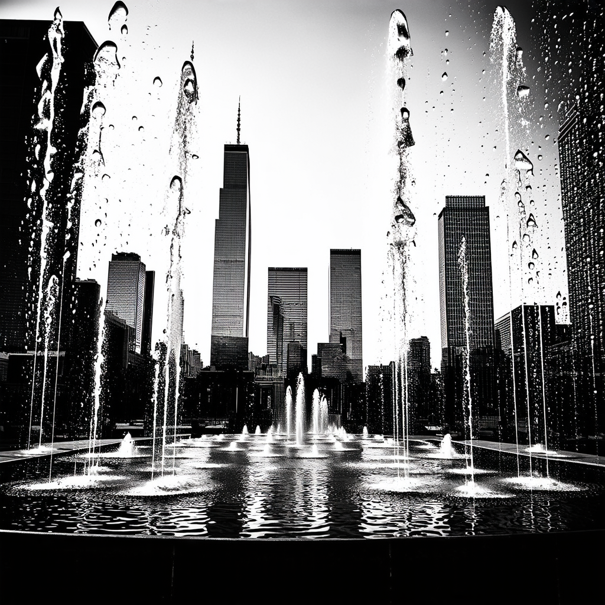 DreamSim Similarity: 0.59
Captioning model: llava-v1.6-34b-hf | Caption Image Reconstruction The image depicts a cityscape with a prominent view of modern high-rise buildings and a fountain in the foreground. The buildings are predominantly modern skyscrapers with sleek, contemporary designs, featuring reflective glass facades and unique architectural features such as angular shapes and sharp edges. The tallest buildings are situated towards the center and right side of the image, with some featuring distinctive DreamSim Similarity: 0.57
Captioning model: InternVL2-2B | Caption Image Reconstruction The image captures a striking cityscape, dominated by a collection of modern skyscrapers. The tallest among them is a unique structure with a curved top, standing out against the skyline. The buildings, varying in height and design, are predominantly white and gray, reflecting the architectural style of the city.
In the foreground, a fountain adds a dynamic element to the scene. It features multiple DreamSim Similarity: 0.53
Captioning model: llava-onevision-qwen2-7b-ov-hf | Caption Image Reconstruction The image is a black and white photograph capturing a cityscape. In the foreground, there is a fountain with water droplets captured in mid-air, creating a dynamic and somewhat abstract effect. The fountain appears to be located in a park or open space, as suggested by the presence of grass and trees.
In the background, the city DreamSim Similarity: 0.53
Captioning model: llava-v1.6-mistral-7b-hf | Caption Image Reconstruction The image is a black and white photograph featuring a modern cityscape with several high-rise buildings in the background. The buildings are sleek and contemporary, with reflective glass facades and unique architectural designs. Some of the buildings have distinctive features such as angular tops and asymmetrical structures. The skyline is dominated by tall skyscrapers, indicating a bustling urban environment. DreamSim Similarity: 0.52
Captioning model: InternVL2-40B | Caption Image Reconstruction a fountain in front of tall buildings DreamSim Similarity: 0.51
Captioning model: blip2-flan-t5-xxl | Caption Image Reconstruction The image features a cityscape with a large fountain in the foreground. The fountain is surrounded by trees, creating a serene atmosphere. In the background, there are several tall buildings, including a prominent skyscraper. The cityscape is bustling with activity, as evidenced by the presence of multiple cars and a bus in the DreamSim Similarity: 0.47
Captioning model: llava-1.5-13b-hf | Caption Image Reconstruction The image depicts a modern urban landscape featuring a series of tall, contemporary buildings. The buildings are primarily composed of glass and steel, with sleek, angular designs that suggest a blend of modern architectural styles. The structures vary in height and design, with some featuring flat roofs and others with more complex, curved or tapered tops. The tallest building in the center has a distinctive DreamSim Similarity: 0.47
Captioning model: InternVL2-8B | Caption Image Reconstruction The image is a black and white photograph depicting a modern urban landscape. The foreground features a fountain with water jets spraying upwards, creating a dynamic and lively scene. The water appears to be captured in motion, with droplets and splashes clearly visible, adding a sense of movement and energy to the image. The fountain is situated in a well-maintained park or public space DreamSim Similarity: 0.43
Captioning model: InternVL2-26B | Caption Image Reconstruction The image captures a bustling cityscape, bathed in the timeless elegance of black and white. Dominating the scene is a towering skyscraper, its numerous windows reflecting the city's vibrant life. The building's unique design is a testament to modern architecture, its curved facade reaching towards the sky. The structure is adorned with a large antenna, a symbol of its technological prowess, and a DreamSim Similarity: 0.35
Captioning model: llava-onevision-qwen2-0.5b-ov-hf |